龍之介先生の顏――岡本一平が畫いた似顏は、首相加藤友三郎とちやんぽんだ。
小説の事はいはずもがな、支那で六圓に買つてきた古着を、坪何兩といふ品と泉鏡花に思込ませた人だ。（坪トハ錦繍、古渡リ更紗ナドニ、一尺四方、又ハ一寸四方ナルヲイフ）
不思議によく猿股を裏がへしに着けてゐる。
顏を寫す時、西洋の文人、自分の一家一族の人の寫眞に至るまでどつさりみせて、やつぱり立派に畫いて呉れと言つた。
常常、君、女子と小人はなるたけ遠ざける方がいいよ、と言つてゐる。
又、僕かあ、君、いつなんどきどういふ羽目で妻子を拾てないともかぎらないが、やつぱり仕舞にやしつぽを卷いて、すごすごおれが惡るかつたから勘辨して呉れつて女房のところに、しつぽをふつて歸つてくるなあ、と高言してゐる。
知らないうちに、横山大觀に自分の弟子になれと口説かれてゐた。
君、僕かあ十六歳の頃まで燐寸をする事が出來なかつたものだから、僕の方の中學は三年から發火演習があつて鐵砲を擔がせるんだぜ、（その時は弱つたらうな、）否、僕かあ何時も小隊長だつたから
右足脱疽で私が二度目に踝から切られる時の立會人――骨を挽切る音の綺麗さや、たくさんの血管を抑へたつららの樣に垂れたピンセットが一つ落ちて音をたてた事や、その血管が内に這入つて如何なつたか心配だつた事を、みんな話してくれた人だ。
［＃改ページ］
昭和二年の改造八月號、日本周遊二十八頁の上の六行目、
羽越線の汽車――改造社の宣傳班と別る。……
あはれ、あはれ、旅びとは、
いつかはこころやすらはん。
桓根を見れば「山吹や笠にさすべき枝のなり」
彼の旅行記、東北、北海道、新潟は、改造社に入用なものであつたらうが、（改造社版現代文學全集の宣傳を兼ねた講演旅行――所謂圓本のはじめ）彼にとつても、既に大正十一年五月の作であるところの、あはれ、あはれ、旅びとは、を、さしはさんだ旅行記が一つ必要であつたと思はれる。あはれ、あはれ、旅びとは、
いつかはこころやすらはん。
桓根を見れば「山吹や笠にさすべき枝のなり」
東北、北海道、新潟の講演旅行で、一挺のぴすとるが彼の手にはいつてゐたのであらうか、彼は旅行から歸つて僕に會ふなり、「僕はこんどはいよいよぴすとるも手にいれた、」と言つてゐた。
「自分の死後どんなことがあつても發表はしてくれるな」と言つて、鵠沼で前年の冬、僕に預けたもののなかから、彼は三つ死ぬまでにひきだした。あはれ、あはれ、はその一つ。手帳八月號の風琴もまたその一つ、それに「なぜ？」を僕は二年の一月三十日に渡してゐる。
――夕方僕の宿で、僕の祖父の遺愛の詠歌自在の詞の栞から、僕等は二人がかりで詞を拾つてゐた。
「あはれ、あはれ、旅びとのこころはいつかやすらはん……ねえ君、何か詞をさがしてくれなきやおまんまを喰べに出かけられないぢやないか。はやく考へておくれよ、ねえ、はやく考へておまんまをたべにゆかうよ、君、」と彼に言はれてゐるうちに、
わた 海渡線
わだ （海川ノマガリ入ル處［＃改行］入江ノ水ノ淀）
わたどの 廊下
わだち 輪立 車ノ輪
につづいてわだ （海川ノマガリ入ル處［＃改行］入江ノ水ノ淀）
わたどの 廊下
わだち 輪立 車ノ輪
わたりがは （三途ノ川［＃改行］みつせ川）トモイフ
といふ詞に出會つて、僕等は思はず「ああ 」と言つた。わた、わだ、わたどの、わだち、ととび、わたりがはといふ詞に出會つた時に、
」と言つた。わた、わだ、わたどの、わだち、ととび、わたりがはといふ詞に出會つた時に、今日のうちといふ今日のうちのその夕方に、
あはれ、あはれ、旅びとの
こころはいつかやすらはん
が、こころはいつかやすらはん
あはれ、あはれ、旅びとは
いつかはこころやすらはん
と、きまつて、改造社はその翌日に、東北、北海道、新潟の原稿を持つていつた筈である。旅行記の日附（昭和二、六、二十一）を僕のメモランダムとすれば、その前日に僕等は、わたりがはゆきといふことばを造つてゐた。いつかはこころやすらはん
わたりがはをみつせ川と言ひかへることには、彼は不賛成で、僕は「みつせ川ゆきか、」といつて、二度三度「わたりがはだよ、君。」と言はれた。
「君、僕はわたりがはといふ詞を知らなかつた。こんないい言葉があることはいままで知らなかつた。僕は知らなかつたよ。」
うつとりとなつて斯う言つてゐた時の、ああもうつくしかつた顏を、僕は僕の一生に於いてもうみることはないであらう。
［＃改ページ］

Gramme のことは知らない。骨あげで見た芥川の腦味噌は、曾て彼が用意してゐた脱脂綿を燃したとしてみたほどの嵩であつた。
（鼻口を埋む脱脂綿、縊死）

こはれた肋骨を掌に、舍利こつぱい御坊は御坊の勘考をふりまはしてゐた。
――ずゐぶん水腫のきてゐたひとですねえ？
――このきいろくなつてゐるところが藥でかうなつたのです。
――ここがわるくなつてゐたところの骨です。

改造社が民衆夏季大學の講師として、芥川を關西か九州のいづれかへのぞんでゐた。
――ああ、うるさいから電報で返事をしておいた。どうせ西の方だ、
――それまでに、おれはもうあの世にいつてゐるから、
――だから僕はただ、ユク、としておいたのだ、ユクとだけで場所は書かなかつたよ。
これは芥川が死ぬ數日前に僕に答へた言葉である。彼の死は七月二十四日日曜日、夏季大學は八月。
七月二十三日、芥川の伯母さんの考へでは午後十時半、芥川は伯母さんの枕もとにきた。
「――タバコヲトリニキタ、」
七月二十四日、芥川の伯母さんの勘定では、午前一時か半頃、芥川は復た伯母さんの枕もとにきた。さうして一枚の短册を渡して言つた。
「――ヲバサンコレヲアシタノアサ下島サンニワタシテ下サイ、」
「――先生ガキタトキ僕ガマダネテヰルカモ知レナイガ、ネテヰタラ、僕ヲオコサズニオイテソノママ、マダネテヰルカラトイツテワタシテオイテ下サイ――、」
先生といふのは下島勳（空谷）、田端の醫者、短册の句は、
自嘲
水洟や鼻の先だけ暮れ殘る
水洟や鼻の先だけ暮れ殘る

 、一時半に伯母さんに「オヤスミ」を言つて、六時に奧さんが氣づいて、下島さんがとんできて、……みんな駄目であつた。私には醫者の知識はない。しかし、私はなぜか・四時の彼を感じる。
、一時半に伯母さんに「オヤスミ」を言つて、六時に奧さんが氣づいて、下島さんがとんできて、……みんな駄目であつた。私には醫者の知識はない。しかし、私はなぜか・四時の彼を感じる。［＃改ページ］
芥川は大正十年三月支那に遊んで〔上海から江南一帶に遊び、漢口を經て洛陽龍門を觀、北京より更に大同に至る。朝鮮を經て歸れるは八月なり。〕のあと、十月一日から二十日ほどの間、湯河原の中西屋に滯在してゐた。僕と小澤碧童とは、芥川に招ばれて四日の夕方中西屋に辿りついたものである。そのときの碧童の句に、
友を訪へば、
外面の暗い秋霖の長髮をなでてゐた
といふのがあるが、その晩どうした話のなりゆきであつたのか、長髮の芥川が「後世などは信じられない、」短髮の碧童が、「後世を待つ、」で兩人のいさかひになつた。さうして、いらだたしさうに碧童にそつぽを向けて應答をしながら芥川が僕に畫いてみせてゐた繪が、三日月のみえる荒狂ふ海を背景にした岩の上に、長い髮で顏をかくしてうなだれてゐながら、巨大な耳をひろげてゐる人の繪であつた。芥川は僕に「君、これがなんだかわかるか、」と言ひ、僕は「わかる、」と言つたが、それを芥川の姿と感じ、芥川はなにか僕に話があるとわかつても、その心の底まではわかりかねてゐた。後日、芥川が自決の意を告げてから、「支那で幾度か死なうと思つた、」といふことを言ひ、アンテナといふ言葉を言つてゐるのを聞くやうになつて、芥川にははやくから僕に意中をうちあける樣子があつたことがはつきりわかつた。外面の暗い秋霖の長髮をなでてゐた
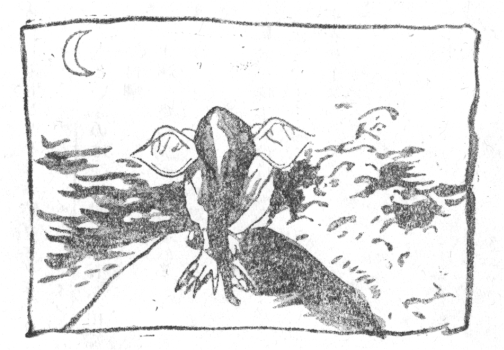
芥川は十五年の四月十五日に自決することを僕に告げた。さうしてその後しばらく僕らは鵠沼で暮らしたが、その鵠沼で芥川は星が一つ足りない北斗七星を畫いて、それに、霜のふる夜を菅笠のゆくへ哉、と書いて「君、これがわかるか、」と言ふので「わかるよ、」と言ふと、畫いたものを座布團の下にさしいれていつた。星一つ落してゐるのは、この世から消えゆくことを言つてゐるのだが、霜のふる夜を菅笠のゆくへ哉といふ句は、十一年の晩秋、僕の足の痛みがリウマチといふ下島のみたてであつたので、しばらく伊香保にいつてゐることになつたときに、芥川が留別の句として示したものであつた。
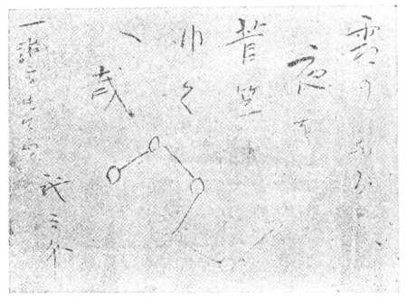
芥川は、僕が足を病み隻脚となる、さうして、義足で一人歩きができるやうになるのを待つてやうやく心の底を告げた。
芥川は退院してからの僕に、「僕はあのとき、どうしようかと思つたよ、」と言つてゐたが、あのときといふのは、芥川が留別の句を僕に示してゐたときのことで、芥川は僕に先きに死なれたらどうしようと思つたと言ふのであつた。
大正十五年四月十五日、日曜日、八日は晴れ、九日は強風、十日が雨、十一日は暗かつた。その四月十五日から數へると一年と三ヶ月ほどたつて、大勢の人達が棺の前で燒香をしてゐたところが、「力も根も盡きはてた、」とうなだれた芥川の坐つてゐた場所である。
「かういふことを言つていいものだらうか、」
「人にかういふことを言ふべきものではない。が、言つていいだらうか。」
かう切りだす前に、芥川は寢床の上に起きなほつてその細い腕をだしてみせてから、裾までまくつて痩せこけてしまつてる内股をしめすと、「これだから僕ももうながいことはないよ、」と撫でさすりながら皮ばかりのやうな肉を摘まむでさう言つてゐた。芥川がだしぬけに立上り、僕が、あああ、といふ息を殺してゐると、茶間にでる廊下の境目の唐紙を閉めて、また寢床の上に坐つたが、一と跨ぎに動いてしまつたそのいきほひといふものは全く僕をそこに釘づけにしてしまつてた。
「君に言つていいだらうか、」
「かういふことは友達にも言ふべきことではない、が、友達として君は聞いてくれるか、」
居合腰にきざみこむでくる芥川の言葉にはしのぎもつかず默つてゐた僕も、「どんなこと？」と口を開いた。すると、
「それならば僕は言ふが、君と僕とは今日まで藝術の事の上では夫婦として暮してきた。――僕は十九の時に自分の體では二十五までしか生きないと思つた。だから、それまでに人間のすることはあらゆることをしつくしてしまひ度いと思つて急いだ、――しかし、澄江堂を名乘つてからの僕は、それこそ立派な澄江堂先生ぢや、――僕はかうやつて、ここにねてゐても絶えず夏目先生の額に叱られてゐるやうな氣がする、――」
と、無氣味な目で芥川は彼の背を指さした。僕はそこの鴨居に依然たる、風月相知 漱石 の額の字をみた。
芥川の話は七年前（數へ年二十八歳）の□夫人とのただ一度の情交に關し、「事露顯はれて後、事を決するよりも、未然に自決してしまひたい、」と言ふのであつた。
僕は芥川の話を聞いてゐる間にすこし妙な氣がしてゐた。妙な氣がしてゐたといふのは、そのとき數日前、六日の晩に僕ら二人のときに□夫人がきてゐたからだ。六日であることは錯覺とは思へない。□夫人は自笑軒の歸りであると言つて妹を連れてゐた。僕よりはあとにきて、さきに歸つて行つたが、彼女は自笑軒の茶室の間どりを語り、普請にとりかかる彼女の茶室の圖面を芥川にみせてゐた、ただそれだけのことで歸つて行つた。（彼女はその場の僕に茶掛けを畫いてくれと言つてゐたし、彼女が歸つていつたあとで芥川は、君、頼むから畫いてやつてくれるなと言つてゐた。）
自決することを僕に言つてからの芥川は、□夫人の代名詞に、河童といふ言葉を使つてゐたが、後には□夫人以外の女人の話にも、雌河童といふ言葉を使つてゐるやうになつてゐた。□夫人は昔、芥川が彼女に一座の人達（日曜日で彼の家に集つてゐた人達）を紹介してゐたときに、ほかの人には順々にお時儀をしてゐながら、どういふ次第か、「わたし小穴さんには態とお時儀をしないの、」と、人に氣づかれないほどの小聲で、微笑をみせながら僕の顏いろをみてゐたので、大正十二年以前のことであるが、その一言で僕に「芥川となにかあるな、」と思はせてしまつてゐた人だ。
勿論昭和二年のことであるが、芥川が朝下宿にやつてきて、「今日は河童がくるから、君六時に僕のところにきて、河童が歸るまでそばにゐてくれないか、」といつて歸り、かれこれ六時に、義ちやん（葛卷義敏）がきましたよといつて迎へにきたので、芥川の家にいつて、□夫人の邪魔をしてゐたが、□夫人が芥川と會つたのはその日が最後となつてゐるのであらう。僕はつまらない役をさせられたものだと思つてゐるが、出向いてみると芥川はそのとき、なんとしたことか重病人のやうに布團のなかにはいつてゐたものだ。芥川の枕もとに坐つてゐた□夫人はその日出來上つた茶室のことと茶掛けの畫のことを言つてゐた。僕は□夫人がどういふ人であらうともなにかあはれにもなつてゐた。芥川の「秋」はこの□夫人の話からできたものと芥川から聞いてゐる。
立派な澄江堂先生ぢや、のぢやは室生犀星の「けなるい」とか「ぢや」とかいふ金澤ことばに染つたもの。
芥川に自殺の決意をいはれたのは、僕が小石川丸山町のアパートにゐたときである。
芥川に自殺の決意をいはれたのは、僕が小石川丸山町のアパートにゐたときである。
三月の二十七日から四月十八日までの、二十三日間といふものは、七度も芥川に會つてゐたが、四月十五日をのぞくとそれは悉く僕一身上の事と言つてよろしい。（一身上のことといふともつともらしいが、僕はその頃一寸道行のやうなことをした。）
四月十五日に芥川は七年越しのくるしさの告白をする、さうして自決を擇ぶほかに道はないことを言ひだしてゐる。
四月十八日に蒔清（故、古原草遠藤清兵衞）に渡してくれと頼まれた禮の品は、希臘の瓶の繕ひの禮と、その前のこともあつての禮ではあるが、僕の思ふには、これが交友に遺品として贈つた最初のものかと考へる。
品物は、鈴木春信の祕戲册であつた。
芥川は自決の意を漏らすその前の二ヶ月ほどの間、「僕はこの歳になつていま、人は如何に生くべきかを考へて迷つてゐる。トラピストにはいらうとかとも考へてゐる。」といふやうなことを口にしてゐた。（彼は妻子と床を並べてゐて死んでゐた。さうして彼の枕もとには古びた聖書があつた。）
「人は如何に生くべきか、」が芥川と僕との間に一時一寸溝をつくつてしまつてゐたのは、芥川が女人の執着から世を捨ててしまはうといふ腹でゐるのに、僕の方は逆に女人に執着してゐたからである。〔四年前にといふことになるが終戰後、碓氷峠と室生さんのところに一寸といふわけで、輕井澤にでかけたことがあつた。さうして、つるやの前の路地をぬけていつたところで僕は羞づかしくなつた。ひとり、ここらあたりとなつかしむだ道は消えてゐて、殘るのはただ、いまにこの道は、文豪芥川龍之介が歩いた道となるのかとつぶやいて、君はほんとにさう思ふのかと芥川に反問された思出であつた。つるやから近くの室生さんのところまで散歩にでたときのことで、大正十四年九月初旬のことである。芥川は歩みをとめて、君はほんとにさう思ふのかと僕をみつめたので、僕も立ちどまつて默つたまま芥川をみつめかへしてゐた。僕がなぜさういふことをつぶやいたかといふと、芥川は後から宿に着いた僕を迎へると早速、このてらになかときのぐんやぶれきてはらきりたりときけばかなしも、といふ歌をどうだといひ、齋藤茂吉のだといつたものだが、如何にも調のよろしいものと思つて聞いた歌も、毎日顏を合せてゐて僕と二人の時には話もなく、僕と二人の時にはただ、このてらにをばかり口ずさんで、たばこのけむりを吐きだしては、僕の顏いろをみてゐて、うきことのなほこのうへにつもれかしかぎりあるみのちからためさん、といふ歌を合の手のやうにいれてゐられると、聞くたびにだんだん、なにか、顏に蜘蛛の巣のやうなものをひつかけられてでもゐるやうで、鬱陶しくなつてきてゐたのでさういつたのである。有島武郎が輕井澤で自殺してゐることが（大正十二年六月）、僕の頭にあつたにはあつたが、芥川の方は僕の吐きだすやうに思はずつぶやいたことばに、胸をつかれたのであつたらう。僕らはその時眞劍ににらみあつたまま、道に立ちどまつてゐた。僕はひとり、消えた昔の道に立ちどまつて、昔いまにこの道はとつぶやいてゐたそのことばに羞づかしくなつたのではない、〕かういふ僕の未發表のものがあつたが、片方は死にたい、片方は生きたいでゐたので、會つても話のいとぐちがなく、當分訪ねるのを止めてゐようかと考へてゐた時が僕にはあつた。
また當時、小石川に住んでゐた一官吏が剃刀で非常に鮮かに自殺した記事が、新聞に載つてゐたことを僕は記憶してゐる。その官吏がどういふ事情のもとに自殺をしたのかは、その場かぎりで忘れてゐるが、芥川が自殺の決意を言つたことに結びついて、その官吏の手際見事にやつてのけたことが僕の頭にこびりついてゐる。四月十五日はその記事があつた日より後のことであるから、芥川も記事をみてゐたとすれば、見事にやつてのける自信を、その新聞記事からも持ちはしなかつたであらうか。
「敵なきは男子に非ず。」「男子、男根はすべからく隆々たるべし。」などと言つてゐた頃の芥川と、「人は如何に生くべきか、」と言ふやうになつた芥川、自決をつげた芥川は、僅かその數ヶ月前には、谷崎潤一郎が書くといふ殺人小説の、殺人方法を、僕らに元氣で説明してゐたものである。谷崎は殺人方法を思案して、帝大に働いてゐた醫者の友達に、醫者の立場からみて、痕跡の殘らぬ、從つて自殺か他殺かはつきり斷定は下し得ない方法を取調べて貰つたが、（僕らがそのときに傳聞した四つばかりの方法といふもののなかの一つは、意外にも僕らの手近かの物で用が足りた。）醫者の調査報告で、スパアニッシュ・フライの項目に愕然とした。谷崎は前に、スパアニッシュ・フライ（催春用とばかり思つてゐたらしい。）の溶液を手にいれて持つてゐたが、試用しないうちに大正十二年の震災でその壜をなくしてゐたといふ、と話面白く聞かせてゐたが、それには自分の自殺方法になにか參考になつたそのうれしさもあつたかと思はれる。
僕は、僕一身上のことは、僕が不宵の子であるだけの話でこはれたのを、まるきり關係のない彼の過去の所業に歸する結果だといつて詑びてゐた、さういふ僕にやさしかつた芥川に、その日のあと、幾日もたつてゐないときに、自決するとうちあけられたのだ。
かぎりあるみのちからためさんといつてゐた芥川は、つるやに滯在中、しきりに僕に、「君も詩をつくれよ、」といつてゐた。僕はその頃から彼が詩の整理をしはじめてゐたと思ふ。
堀辰雄の作品「高原にて」の中に、〔又、今夏の末になつてから、外人に賣りつけた立派な洋犬を何匹もつれてきてゐた犬屋が、輕井澤ホテルで賣殘りの犬のオークションをやつたことがあつた。芥川さんも私を連れてそれを見に行かれた。そのとき私は芥川さんの手帖にその犬の名前だの値段だのをそばから書かせられた。〕といふ一節があるが、そのときは僕もいつしよであつた。大正十四年の堀辰雄は、洗濯屋の二階を借りてゐて、飯はつるやに食べに通つてゐたが、僕は堀辰雄と西洋洗濯の店とのとりあはせは、いかにもふさはしいと感じてゐた。
堀辰雄の作品「高原にて」の中に、〔又、今夏の末になつてから、外人に賣りつけた立派な洋犬を何匹もつれてきてゐた犬屋が、輕井澤ホテルで賣殘りの犬のオークションをやつたことがあつた。芥川さんも私を連れてそれを見に行かれた。そのとき私は芥川さんの手帖にその犬の名前だの値段だのをそばから書かせられた。〕といふ一節があるが、そのときは僕もいつしよであつた。大正十四年の堀辰雄は、洗濯屋の二階を借りてゐて、飯はつるやに食べに通つてゐたが、僕は堀辰雄と西洋洗濯の店とのとりあはせは、いかにもふさはしいと感じてゐた。
芥川の「或舊友へ送る手記」は明らかによそゆきのものであらう。芥川が生前に白い西洋封筒にいれて封じ、僕にいくつか渡してゐたものの中の一つには、
僕等人間は一事件の爲に容易に自殺などするものではない。僕は過去の生活の總決算の爲に自殺するのである。しかしその中でも大事件だつたのは僕が二十九歳の時に□夫人と罪を犯したことである。僕は罪を犯したことに良心の呵責は感じてゐない。唯相手を選ばなかつた爲に（□夫人の利己主義や動物的本能は實に甚しいものである。）僕の生存に不利を生じたことを少からず後悔してゐる。なほ又僕と戀愛關係に落ちた女性は□夫人ばかりではない。しかし僕は三十歳以後に新に情人をつくつたことはなかつた。これも道徳的につくらなかつたのではない。唯情人をつくることの利害を計算した爲めである。（しかし戀愛を感じなかつた譯ではない。僕はその時に「越し人」「相聞」等の抒情詩を作り、深入りしない前に脱却した。）僕は勿論死にたくない。しかし生きてゐるのも苦痛である。他人は父母妻子もあるのに自殺する阿呆を笑ふかも知れない。が、僕は一人ならば或は自殺しないであらう。僕は養家に人となり、我儘らしい我儘を言つたことはなかつた。（と言ふよりも寧ろ言ひ得なかつたのである。）僕はこの養父母に對する「孝行に似たものも」後悔してゐる。しかしこれも僕にとつてはどうすることも出來なかつたのである。今、僕が自殺するのも一生に一度の我儘かも知れない。僕もあらゆる青年のやうにいろいろ夢を見たことがあつた。けれども今になつて見ると、畢竟氣違の子だつたのであらう。僕は現在僕自身には勿論、あらゆるものに嫌惡を感じてゐる。
芥川龍之介
P.S 僕は支那へ旅行するのを機會にやつと夫人の手を脱した。（僕は洛陽の客棧にストリンドベリイの「痴人の懺悔」を讀み、彼も亦僕のやうに情人に嘘を書いてゐるのを知り、苦笑したことを覺えてゐる。）その後は一指も觸れたことはない。が、執拗に追ひかけられるのは常に迷惑を感じてゐた。僕は僕を愛しても、僕を苦しめなかつた女神たちに（但しこの「たち」は二人以上の意である。僕はそれほどドン・ジュアンではない。）衷心の感謝を感じてゐる。
といふのがある。
芥川は僕にこれを昭和二年のはじめに渡してゐるが、それよりも前に鵠沼で、○○○子（□夫人）との交合の場合の、「動物的本能」といふか執拗といふのか、彼女のそれを、必要以上にくどく聞かせてゐて、なぜまたそのうへにかやうに書いたものまで渡してゐたものか。（これは世に殘ることを意識して書いてゐる「或舊友へ送る手記」以前のものである。）僕にはいまだに芥川のその考へはわからない。（「或阿呆の一生」二十一、參照）
芥川は僕に渡したものには、その相手の名前をはつきり□夫人と書いてゐる。□夫人は、世にいふ閨秀歌人、芥川の言ふところによれば高利貸の娘であり、藝者の娘であり、狂人の子であつて○劇の電氣技師の夫人である。
芥川は「河童」を書上げればもういつ死んでもよいと言つてゐた。しかし、□夫人の性情といつたものが確かに芥川の「河童」のモティフにはなつたらうが、「書上げればもういつ死んでもよい。」と言つてゐたほどの、喘ぎにあへいでゐた芥川の苦惱は、「河童」のどこににじみでてゐるといふのであらう。「河童」は體力のなくなつた芥川といふものを考へさせる。
「或阿呆の一生」三十八、復讐に、帝國ホテルの露臺で□夫人が、「あの子はあなたに似てやしない？」と芥川に言ひ、芥川が「似てゐません。第一……」と言ふ、さらに□夫人が「だつて胎教といふこともあるでせう。」と言ふ會話がのつてゐる。芥川は□夫人と交合の際、コンドームを使つてゐたことを僕に言つてゐたが、コンドームが避妊用としても常に安全であるかどうかを保證するのは、その發賣元のまはし者ぐらゐのものであらう。（ともあれ□夫人と通じたことは彼には致命的な結果を招いたことの一つである。）僕は芥川に自決の意をつたへられてから、決行されてしまふまで、僕の意見を求められればともかく、ただ芥川の話を聞いてゐるだけで、なるべく芥川の氣の休まるはうへとばかり考へてゐたので、これといつて話を問ひつめて聞いた覺えはたえてないが、いづれは自殺を決行してしまふ芥川に、いやでも聞いておかなければ、生涯芥川を疑ふことになるのがいやで、唯一度、死ぬ一ト月足らず前に、「ほんとにその子は似てゐないの？」と言つたことがある。芥川はそのとき、向ふむきになり、疊の上にひつくりかへつて、「それがねえ、困るんだ。」とつぶやくやうに言つてから、またひつくりかへつて僕にゐざりよりながら、「君の足を撫でさせろよ。」と僕の踝から下のない右足を捉へてはなさずに、（僕の下宿で僕は義足をはづしてゐた、）撫でさすつてゐてから、左膝を枕にして、「ここにかうしてゐると氣が休まるよ。僕には君が僕の母親の生れかはりのやうに思へる。」としよんぼりして言つてゐた。（芥川のいふところによると、芥川の母の死んだ日か翌日かが僕の生れた日に當つてゐる。）僕はそのやうすをみてゐるので生涯芥川といふ人間を愛しつづけてゐるが、まだ一度もみてゐない子、□夫人が一人の少年をさして、「あの子はあなたに似てゐやしない？」と言つた、その子が芥川龍之介の子であるかもしれないといふ疑ひは捨てさることができない。
なぜ、芥川は自殺を擇むだか？ なぜ、命數にまかせて生きることを面目を失ふ事と考へてゐたのか？ なぜ、死を急ぐ必要を感じてゐたか？ 狂人の子である芥川は、（「或阿呆の一生」二、母、參照）發狂を怖れてゐた。〔彼は自身で自分の破壞されてゆく頭腦の動く形を充分に承知してゐた。〕と僕は昔の「二つの繪」にはさう書いたが、最近の佐藤春夫に、『「齒車」の中に書かれてある現象、あれは眼科のはうの醫者の教科書にもあることで、芥川はそれを讀んで知つてゐて書いたことだらうか、芥川のことであるから多分讀んでゐてああいふことを書いてゐたのであらうが』と教へられたのは、參考になる話である。
芥川は宇野浩二のことばかりにではなく、彼自身齋藤茂吉（故人）の診察を受けてゐる。僕は齋藤茂吉に芥川の死後二三囘會つてはゐるが、芥川のことで話をしたことは一度もなかつた。
帝國ホテルの露臺で、「あの子を御覽なさい。似てゐませう？」と□夫人が芥川に言つた、それは、□夫人は芥川が書殘してゐるやうな復讐といふ意味でさういつたのではなく、むしろ、□夫人一人の幸福感でさう言つてた言葉であつたのかも知れない。
滑稽にも女人にはをりふし、交合のない、忌嫌ふ男の容貌にさへ似た者を産む場合さへある。
芥川は、「Ｏ君の新秋」――僕が相州鵠沼海岸伊二號に借りてゐた家の庭で、猫のやうにそうつとして松葉や松ぼくりを掻きあつめ、幾册かの大學ノートを燒いてゐたことがあつた。僕は顏をほてらしてゐる芥川を見てみぬふりで手傳はず、默つたままで燃してしまふのを待つてゐたが、芥川は燃してしまふとそのまま、自分の家に歸つてしまつた。（芥川は伊四號に住む。家主はひとつ人で、庭と庭との間には垣がないのだ。四七頁の圖面參照。）
刻明な讀者はここで、芥川が□夫人と關係した年齡が、芥川の口で言つてることと書いてゐるものとでは、そこに一年のちがひがあるのに氣づかれてゐるであらう。芥川の大正八年九月十日の日記には「□夫人と會ふ」と誌してあるといふ。大正八年ならば口で言つてゐたその年にあたり、二十九歳と書いてあるちがひは、芥川が二十九歳のときに□夫人が出産してゐる、そのあたりからの錯覺からきてゐるのであらう。芥川は僕に、「君にもう一年はやく會つてゐたならば、僕もかういふまちがひを起さずにすんだのだが、」といふことを言つてゐたものである。
芥川の自殺の知らせで、輕井澤から戻つてきた室生犀星は、僕の下宿に立寄つて、
「小穴君はどうするのだらう、」
「どうしてゐるのだらう、」
と正宗白鳥がほかになにもいはずに、いきなりさう言つてゐたと、繰返して言つてくれた。室生犀星は、僕が會つたこともない、なにもしてゐない正宗白鳥の言つてたことを言ふとそれだけで歸つていつた。
輕井澤にゐた白鳥と犀星とが、「芥川が自殺、小穴？」と思つてくれたのは有難いとは思つたが、慰められた僕のはうは、「宇野浩二はどうなる、」「宇野の耳にはいつたら大變だ。打ちのめされるのは宇野浩二だ、」「腦病院にはいつててさへくれれば知らないでゐるだらう、」と言ひたかつた。
芥川の自殺をしたことが、宇野の耳にはいつたならば、宇野がどんなことになるかと、氣になつてゐたのは、芥川が僕に（芥川が自決するなどと言ひださなかつた頃、彼がまだ宇野と諏訪に行つてゐた時の話になるが、）
「宇野の机の上に見覺えのある筆蹟の手紙があつたので、僕はそれを未だに恥づかしいことに思つてゐるのだが、そつとその手紙を開けてみたら、案にたがはず、○○○子（□夫人）の書いたものなので○○○子と宇野との間のことを、始めて自分はその時知つて非常に驚いた。君、○○○子はそのやうな女なんだ。」
「諏訪にゆめ子といふ（宇野の小説のヒロインとなつた人、）藝者がゐるが、これは宇野の女だが、君、その頼むから諏訪に行つて、君がそれをなんとか横取りしてくれまいか、金は僕がいくらでも出すよ。」
と言つてゐたことがあつたからなので、それが芥川の死といつしよに僕の頭にうかんでたからであつた。僕と宇野とは顏を合はせれば、ただお時儀をしてゐるだけで、話をしあつたといふことはなかつたし、芥川は、宇野が腦病院にはいつてゐたさういふ状態にあつたときには、「死ぬ話をしようや」の話も一時やめてたほど、宇野のことを心配してて、日頃宇野が宇野がと言つて話す話にはいつも宇野に對する愛情がこもつてゐたので、芥川の話それだけで宇野を考へてゐて、昔、「二つの繪」の中に宇野浩二を〔微妙にかばひあつてゐた芥川と宇野との友情を想ふとき、僕にしてなほ嫉妬に似たものがあつた。〕と單純に書いてるやうな誤りをしてゐた。
芥川の死んだ當時、毎日の新聞に現はれる諸名士の談話のなかに（なかには、僕にはをかしくもあり、奇想と思へるものがあつた。）宇野のがでないかと待つてゐて、報知（？）に、おのれをむなしくして友人の死を見送つてゐる、靜かなひかへめな宇野の談話を發見したときには安心して、もう、宇野は大丈夫だと一人喜んでゐたものだ。僕は、宇野が當時腦病院にいれられるやうな病氣でなかつたならば、もう少し芥川も生きてゐたのではないかといふ考へをいまでも捨ててはゐない。芥川の母親はきちがひになつてゐた。芥川が彼自身の發狂に恐怖を感じてゐたことも事實である。
僕は芥川に頼まれて鵠沼にゐた。その鵠沼にゐたときに、芥川は「自分の死後、世間に全然途方もない誤解が生じて、どうしても君に我慢ができない場合になつたとしたら、これを家人に渡して發表してくれたまへ、」「よくせきのときにこれを開けてくれたまへ、」といつて一通の封書を渡した。僕はそれを開けてみたら、芥川が口で言つてゐること以外の事情もわかつて、生きてゐてもらへる對策も立たうかと思ひ、僕のところの勝手口にみえた夫人に次第を述べて、夫人の前で開封して讀んだが、それが、一葉の書簡箋に、〔南部修太郎と一人の女を（□夫人）自分自身では全くその事を知らずして共有してゐた。それを耻ぢて自決をする。〕といつただけのことが僅か數行に記してあつただけのものである。芥川は南部のことを宇野のことにして僕に話してゐた、かういふところにも、芥川の性格から、弱さからと言つた恐るべく、愛すべくして憎めない話術がある。宇野浩二の「芥川龍之介」（昭和二十八年五月、文藝春秋新社刊）には芥川のかういつた話術と女に對する早業が、よくくはしく書いてある。僕にわかつた。僕は宇野の「芥川龍之介」でゆめ子に手をだしてゐる芥川のことをはじめて知つて、芥川がゆめ子を僕に横取りしてくれといつてゐたその間の事情がわかつたとき、芥川の彼女自身過去に過失を持つた伯母が、芥川の生前と死後、「わたくしは龍之介に、どんなことをしてもよいが、人樣のものに手をだす泥棒猫のやうな眞似だけは決してしておくれでないよ、と申してをりました。」「さう頼んでおきました。」と僕に萬感こめて言つてゐたことを思ひだして、涙をこぼしたものだ。
僕はいまでもなほ、人があれほど素直に正直になりきれるものであらうかと、死んだ芥川に感心してゐる。僕の言ふのは、自決するといつてからの謙虚な芥川のことであるが、あれほど正直すぎるほど正直になつてゐた、その芥川に、なほ、芥川の性格からくる芥川の話術のあることを認めないわけにはゆかない。「或舊友へ送る手記」「或阿呆の一生」などにある芥川の話術は、必ずしも鬼面人を脅すといつたものではなく、あれが芥川の話術では、あぶら汗と冷汗をだして書いた根かぎりのものではあらう。
僕の昔の「二つの繪」の中に、〔この自分に渡された遺書で最初のものは後に彼に返した。〕と書いてあつたが、それは誤りで、鵠沼を引きあげて田端に戻つてから、二度目にまた角封筒にはいつたものを渡されてそれを持つてゐると、三度目のものを持つてきて、「これを」といつてよこして、「こないだのは返してくれたまへ、」と言つて芥川は二度目のを持つて歸つていつてゐる。その二度目のものの内容は開けてみてはゐなかつたので、全然わからない。「□夫人」のところで紹介したものが、三度目か四度目のものである。これには夫人の姓がはつきり書いてあるので、「或舊友へ送る手記」があることでもあるし、死後すぐに發表して騷ぎを大きくする必要もないのであるから、開けてはみたが、そのままにしておいてゐて、南部が死んだときに、南部の名がでてゐるのを燒いた、そのときになほほかのものもいつしよに燒いた憶えがあるが、これもその時燒いてしまつてゐたと思つてゐると、「羅生門」が映畫になつた當時、「藪の中について、」を書いてゐる際に、（藝術新潮に掲載）たまたま物の間から發見して、二十四年ぶりに再びこれを手にして、「藪の中について、」の中にはじめて紹介した。
僕は芥川に、宇野の机の上に見覺えのある筆蹟の手紙云々の話などを聞かされてをり、また□夫人が他の者とも關係をしてをると聞かされてゐて（その人？ 人達？ の名は聞いてゐなかつたから、）書いたから昔の「二つの繪」の中に宇野には了解ができないふしがあつて、迷惑であつたらうと思つてゐる。
夏目漱石は大學の服を着た芥川龍之介にはじめて會つたときに、血氣未だ定まらざるとき、之を戒しむる色に在りと訓した。芥川は「夏目先生はおそろしい。」「夏目先生に一と目で見破られた。」といつてゐた。夏目漱石の眼力もさることながら、僕は芥川に自決のことをいはれてから、芥川のながい睫をみてゐて、男にはながすぎる、これがいけない、と思つてたことがある。
僕は宇野の「芥川龍之介」のなかの芥川の女に對する早業のところを讀みなほしてゐて、昔、神樂坂の鳥屋（？）で飯を食つたとき、小島政二郎がさて歸らうといふところで、「だつて、芥川さんのは憎らしいほど大きいんだもの、」と、屈託なく笑ひこけてゐたことや、湯河原の歸りに碧童（小澤）が、「芥川君のあれでは女はたまらんだらう、」「あれを受ける女は、」と言つてゐたことを思ひだした。
碧童はそれまで俺のは中肉中脊で女が喜ぶ理想型だといつてゐたものだ。
鵠沼の暮しになる一ト月ほど前のことであつたが、芥川の話を人に明して話すこともできず、鵠沼に夫人といつてしまつてゐる芥川のことと自分のことで途方にくれてたときの或日、外出から戻つてくると、アパートの娘が、「お留守に女の方がみえて、一人でしやべつてをられました。」「早口でよくわかりませんでしたが、なんですか是非お會ひしたいふうでした。」と言ふ。夕暮に訪ねてきたと言ふ、風采を聞いても見當がつきかねたが、僕そのものへ用といふのではないらしくて、その女人がまた二、三日の後の留守に訪ねてきたので、それが芥川のところで顏だけは見知つてゐるＡ女とわかつた。Ａ女がなにか芥川のことで、僕に會ひたがつてゐるのであらうといふ察しはついたので、不安と少しばかりの興味があつてＡ女のくるのを待つことにしてゐると、
「世間では、芥川さんが支那梅毒でああいふふうになつたのだと言つてゐるのですが、それはほんたうのことですか、」
三度目にやつと僕に會つたＡ女はさう言ふ、
「はつきり教へて下さい、」
と氣忙しくヒステリックに僕につつこんできた。
「をかしい、それは、」
僕は芥川から彼の神經衰弱に關したゴシップを聞いてゐたので、をかしい、それは、と言つた。
「笑ひごとではありません、」とＡ女は僕を叱りつけて、「をぢの杉田直樹（精神科の醫者）にも病氣について相談をしてみましたが、わたしが自身に直接支那へどうしても行つて、さうして、芥川さんの歩いた跡をどこまでも訪ねまはつて、病氣のもとをはつきりさせたいのです、」「旅費の點は、實業之日本社の社長からだして貰へることに話がなつてゐます、」などと奇怪なことをしやべりつづけた擧句には歎願のいろさへみせて、芥川の病氣のもとを話してとせがんだ。（Ａ女はその支那行に、僕をひつぱりださうといふいきほひで話してゐた。）
「きちがひ」と、どなりたかつた僕は、
「あなたは芥川龍之介にどうかされたとでもいふのか、」
「一體、そんな支那梅毒でまごまごしてゐるやうな芥川龍之介とでも思つてゐるのか。あの男がそんな馬鹿かどうかは考へてもわかることではないのか、」
「支那旅行後も、ああやつて子供も生れ、その子供に梅毒の症状もみられないではないか、」
と、つづけて言つてゐた。Ａ女はそれで多少得心がいつたらしくもあつたが、僕はＡ女と話しをしてゐる間に、芥川が、「支那へ行く前に星製藥に行つて、ルーデサックをくれと言つたら、（何ダースとか言つてゐた、）店の者は、隨分御さかんですなあ、といつてだしてくれたよ。けれども僕は、支那に行つたら實際に使はずに、あつちこつち歩いて、みんな人に配つてしまつたが、まるで星の廣告をして歩いたやうなものだよ。」などいつてゐたことを思ひだしてゐてをかしくもあつた。
僕はたまたま昭和十三年の秋に、「私は芥川さんがこの北京で可愛がつてゐたといふ、フランスの少女（娼婦）を探してゐます、」と言つてゐた、北京の航空會社に働いてゐる快活な青年に會つた。たまたまといふのは、ささき・ふさ（故人）がこの坂本君へ僕には言はず、一筆寄せてくれてゐたからであるが、芥川が支那にきたのは、大正十年であることを言つて、僕と坂本君とは笑つてしまつたものだ。
あらぞめの合歡花 あらじか我鬼はわぶ
はららにうきてさればむ合歡花
といふのは、僕が昔、北京にゐた芥川に宛てて贈つてゐた歌の一つである。はららにうきてさればむ
Ａ女は僕に、僕らになにか不吉を感じさせたが、皮肉にもＡ女のはうは、僕が彼女と同じやうに芥川を考へてでもゐると思つたのか、四度僕のところにきた。僕はとりとめのないことばかり一人でしやべつてゐるＡ女を、その日も部屋の障子をあけ、入口の部屋の障子もあけて、廊下からみえる場所の椅子に腰かけさせておいた。麻の新しい着物を着てきた彼女は立止つて部屋の物をみまはしてから、朗讀でもしてゐるかのやうに胸を張つてしやべりだし、舞ふやうにぐるうつとまはつて、「わたしにこの着物が映る？」「どう？」と言つた。「スパイ、きちがひのスパイ、」疲れきつてゐた僕の頭には、さうとしかうつらなかつたので、Ａ女に歸つてくれとどなつた。
顏に袂をあてて僕の部屋を飛びだしていつたきりになつてゐたそのＡ女は、一年の後に、芥川が自殺をした直後、國民新聞社にタクシーを乘りつけて、わたしが芥川龍之介の妻である、わたしは彼の死の本當の理由を知つてゐる、といふことを述べたててゐた。國民新聞は當時一頁にわたる種としてはゐたが、記事の末尾には、瘋癲病院に送られた消息を載せてゐた。
僕はそれ以後のＡ女の消息を全く知つてゐない。また、誰が芥川とむすんでＡ女の消息を云々してゐよう。わびしいかなしい記憶のなかに、不幸な暮しをしてゐると聞いてゐた一文學少女の妄執がうかぶのである。
（このＡ女が、やはり芥川のなんだとかいつてタクシーで徳川夢聲を葵館に訪ねたことがあるのを夢聲から聞いた。Ａ女が一日乘りまはしたタクシーの代金を、縁もない夢聲に、運轉手が請求した話である。）
鵠沼に移つてゐた芥川から、スクキテクレ アクタカワ（日附印大正15・７・12）の電報を僕は受取つた。それで僕は鵠沼にいつて芥川に會つた。そのときに庭で立話をしててＡ女のことをいふと、芥川は泣きだしさうな悲しい目で、縁側にゐた夫人に、「Ａ女までそんなことを言つてゐるさうだ。」と訴へるやうに言つてゐた。その樣子はいかにも悲しかつた。「雌河童は世の中にいつぱいに生きてゐる。」さういふ芥川が田端から持つていつて書きつづけてゐた、「河童」の原稿を持つてきよときよとしてゐたときだ。
スクキテクレ アククカワは飜讀すると、「スパァニッシュ・フライを持つて直ぐにきてくれ 芥川」となるのである。
芥川は、谷崎の殺人小説の殺人手段の思案を、前に僕らに話して聞かせてゐたが、それを僕らに聞かせてゐたときの芥川はフライといふからは蠅であらうといふだけで、まだそのスパァニッシュ・フライなるその物はみてもをらず、スパァニッシュ・フライ――カンタリスが、どう危險であるか、またどういふ滑稽な作用（連綿陰莖勃起）があるものなのかといふことなどは知つてゐなかつた。〔僕はペルーから歸つたばかりの蒔清（遠藤清兵衞）にその物の質だけは聞いてゐた。〕一日芥川は夕方急に僕のアパートにきて、「君は詩にもつくつてゐるくらゐだから、そのスパァニッシュ・フライを持つてゐるのだらう。くれたまへ、」と言ひ、僕は僕でスパァニッシュ・フライその物はみてもゐず持つてもをらぬ、ただ詩の上の話だけであることを言つて謝つたものである。その後よこはま、神戸などの港を頭に浮べ船乘りから手に入れることを考へてゐるうちに、蒔清が世にも綺麗で小さいスパァニッシュ・フライを、たつた一匹ではあるが手にいれてきてくれたので、僕は大事にして持つてゐたが、芥川の電報はそれをよこせといふ。
スクキテクレ アクタカワ、の電報は、僕の戀愛相手が母親を捨てて上京する、その待つてゐた日が追つてゐて、相手を途中に待つには、一つきりの義足を修繕にだしてしまつてゐる、さういふ間のわるいときにきた。僕は自分のスパァニッシュ・フライを芥川にとりあげられるのには狼狽したが、松葉杖をとりだして、すぐ車で田端の芥川の家にゆき、義ちやんに明朝僕に附添つて鵠沼にいつしよに行つてくれと頼んだり、芥川の自決が冗談ではないから年寄達に覺られぬやうにと戸外で話をした。
芥川が鵠沼に移る前のことであるが、芥川に、といつて人傳てに僕に劇藥と書いたレッテルを貼つた壜に、何百匹かのスパァニッシュ・フライがはいつてゐるのを渡した元氣のいい醫者がゐた。（この人も故人、故下島勳ではない、）僕はそれを田端の玄關で芥川夫人に渡したが、これは鵠沼に移る前にそつくりそのままで返された。醫者がくれたのは、蒔清がくれたやうな綺麗なものではなく、何十年もたつたかと思はれる、古びた土埃りの固まつたもののやうになつてゐる汚ないものであつたので、誰にしろのむ氣など起こらうとは思へないが、僕はその醫者が相手によつて荒療治をするとは聞いてゐたものの、度胸のいい眞似をしたものだと今日になつて感心させられてゐる。
芥川が芥川の口ではつきり自決すると言つた以上、それはもう僕一人の力では、どうすることもできなかつた。僕は僕の言ふことに耳をかして、芥川の死をくひとめにかかつてくれる人を、菊池寛、山本實彦、佐藤春夫と考へてみた。が、僕は、僕がもしもこれらのなかの誰かに會つて話をし、その誰かが芥川になにかいふその場合は、それはかへつて芥川の自決をはやめる結果になることを思はざるをえなかつた。誰にも言へず、ただ一人でどうしたならば、芥川に一日でもながく生きてゐてもらへるかと思案にくれはててしまつてゐた、さういふところに、〔これは僕の家内の叔父にして兼ねて僕の中學以來の友だちなり、御引見下さらば幸甚、小穴君、龍之介、〕と書添へてもらつた名刺を持つて山本喜譽司さんが訪ねてきたのも、Ａ女と前後してであつた。山本さんの話は、「なんですか、芥川が死にたいと言つてゐますが、」といつたことであつた。
制服を着た大學生の芥川龍之介が夏目漱石を始めて訪ねたときに、漱石は、君子ニ有リ二三戒一。少キ之時ハ。血氣未ダレ定マラ。戒ムルレ之ヲ在リレ色ニ。及ビテ二其ノ壯ナルニ一也。血氣方ニ剛ナリ。戒ムルレ之ヲ在リレ鬪ニ。及ビテ二其ノ老ユルニ一也。血氣既ニ衰フ。戒ムルレ之ヲ在リトレ得ニ。といふ（論語のなかにある言葉、）その子曰クの言葉をいつて彼を戒めたといふが、芥川には、なぜその時漱石が芥川に對つて、さういふことをいつてゐるのかわからなかつたといふ。「自分の仕事はもう今日これ以上には進みはしない。が、自分はただこのままにしてゐさへすれば、おのづと世間では自分を押しも押されもせぬ大家として扱つてゆくだらう。無爲にしてさうされてゆくことは僕は恥辱に思つてゐる。それにつけても一日も速かに死んでしまひたい。」と僕にいふやうになつてしまつた芥川は、（芥川數へ歳で三十五のとき、）「君にはわかるか、」といひ、「僕には、夏目先生の言はれた言葉の意味がこの歳になつて、ほんたうにわかつた。いままでは、なんで先生がそれを自分に言つてゐたのかわからなかつた。」（彼はそのとき手ずれたポケット論語を脇においてゐた。）とニコチン中毒の顏の頬にほのかな血色を漂はせて、（初々しくみえた、）人少き時、血氣未だ定まらず、之を戒むる色に在り、其壯なるに及びてや、血氣方に剛なりを朗々と誦した。
子曰ク賢者ハ辟クレ世ヲ。其ノ次ハ辟クレ色ヲ。其ノ次ハ辟クトレ言ヲ。この色を辟くまでを論語を手にしたことがなかつた僕が暗んじてゐたところをもつて考へると、芥川のその告白は僕を教へ諭してゐたこともあらうと思へる。
スクキテクレ、アタクカワ、の電報が七月の十二日にきて、僕は十三日の晝に、僕にとつてははじめての土地の鵠沼で芥川と會つてゐる。松葉杖を抱へた僕は、電車を降りると葛卷と人力車を連らねて芥川の寓居に（伊四號の、）急いでゐた。僕は必ず數日のうちには金澤から上京してくる者と僕との萬一のためにも持つてゐた、スパァニッシュ・フライで（〇・〇〇１グラムが致死量と聞いてゐた一匹が、綿にくるんで蓄音機の針の箱のなかにいれてあつた。）果たして、人が死ねるのかどうか、信じたり、疑つたりしてはゐたが、それをクレープの襯衣の隱しにいれて縫ひつけてしまつて持つてゐた。萬が一芥川が芥川の面目にかけてもすぐにも死ななければならぬのならば、僕は手を拱いてゐてその後を追ふ腹であり、さういふ若さであつた。
門で車を降りて内にはいると、僕はすがすがしい撥釣瓶をみた。その撥釣瓶は僕のこころを多少沈めてはくれたが、芥川の留守は意外であつた。（芥川は、「唯今をる所はヴァイオリン、ラヂオ、蓄音機、馬鹿囃し、謠攻めにて閉口、」云々と八月十二日に下島勳にあてて書いてゐる、さういつた事情でもう少し閑靜な塚本さん（夫人の里方、）の家に原稿を書きにいつてゐた。）
間には机となつてゐる茶ぶ臺に、若干の飮みもの（酒にあらず、）食べものが並んで、歸つてきた芥川とひとわたりの話がすむと、芥川の「散歩をしようや。」で僕は伴れだされた。芥川は何年ぶりの松葉杖でさうは歩けもしないものを、人目をさけて、小路へ小路へと引つぱりまはしておいてから、「あれを持つてきたか、」と言つた。僕は「うむ。」と答へたが、それからまた隨分歩かせられた。（芥川は鵠沼で、誰にであつたか、僕の松葉杖を使つて、松葉杖をついてゐる姿を寫させてゐたことがあつた。）僕らが砂丘のはうにでて海をみながら休んでゐたときには、もう僕のたつた一匹のスパァニッシュ・フライは芥川にとりあげられてしまつてゐたが、夕陽を浴びてて話してた芥川の話は、ただ彼の妻子のよろこびを語るだけに（田端と鵠沼との暮しのちがひからくる、）つきてゐたので、僕の張りつめてゐた氣持も救はれて、死といふ懸念もなくなつてゐたほどの、のびやかさを感じてゐた。
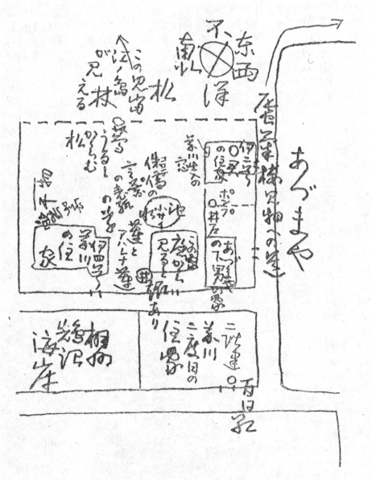
さうしてその日は、芥川のところに泊り、僕自身のことは七月二十九日を頂上として、あとは終るといふ有樣になつてしまつたので、芥川と彼の夫人とに約束してあつたとほり、引越しの金を改造社から貳百圓前借りして、（「三つの寶」の印税のこと、昭和三年六月二十日發行の金五圓の四六判の二倍よりは大きい本、芥川はこの本の印税を改造社とは壹割五分の約束で、僕にはその半分の七分五厘が僕のとりまへと言つてゐた。）僕も鵠沼に移つて芥川のそばにゐることになつた。
芥川と改造社との間は昭和二年に、芥川が、「山本改造は僕に顧問になつてくれと言ふんだ、」「山本實彦は僕と谷崎と佐藤とに壹萬圓づつだして、いづれヨーロッパに行つて貰ふつもりだと言つてゐる、」などと言つてゐたほどの間柄で、貳百圓は、僕が、ただ、芥川がきてくれろと言つてゐるからと言つただけで、高平君がすぐに屆けてきてくれた。考へてみると大正十五年の貳百圓は大きい。僕は芥川が死んでからのいろいろの雜用も片づき、この上芥川の家のそばにゐて、あまりみたり知つたりするのもと思つて、昭和三年に高圓寺へ越すときに、山本實彦に會つて、「三つの寶」の印税からまだ僕の受取れる分があるから、貳百圓をくれと言つて貰つた。「三つの寶」は參千部刷つたと聞いてゐたが、僕は「三つの寶」で前後合せて四百圓を受取つたが、それがいつも引越賃になつてゐた。
僕が丸山町のアパートから鵠沼に移つた日は、當時の小さい手帖の二册をみても、引きちぎつてあるのでわからない。
芥川は、當時〔ちよつと、我々の二度目の新世帶に先生をお迎へして、御飯の一杯もさし上げたい念願であります。〕と下島老人に書いてゐるが、芥川夫人の場合には？ 僕は、僕らの鵠沼生活といふものは、あのみじめななかにあつてすら、いや、みじめな思ひの暮しにおかれてゐたからこそ、夫人にとつて囘顧があれば、幸福であつたと思つてゐるのではなからうかと思ふ。
芥川が書いた年譜によると（現代小説全集、第一卷、芥川龍之介集、大正十年四月、新潮社版）大正四年十二月夏目漱石の門に入る。林原耕三の紹介に據る。五年十二月夏目漱石の訃に接すとなつてゐるが、芥川はその僅か一年の間の夏目漱石のことを死ぬまで口にしてゐた。十年もゐた氣がするが、僕の僅か半年にも滿たなかつた鵠沼のその生活は所詮（芥川の姉の夫の西川氏が鐵道自殺をしたので、芥川は一寸東京に戻つたのがそのままになつて、僕もまた東京に歸つて田端の下宿にはいつた。）
松風に火だねたやすなひとりもの
と芥川が僕に書きのこしてゐるこの句の如きものではあらう。○
――嵐の中に僕は互ひの空いろが出るのを待つてゐた。
槻を句にしたがつてゐたがなあ、高槻や、高槻やと、置いてゐたがなあ、
「君は僕の女房にどうしてあんなにわからずやになつたのかつて言つたさうだね、女房もほんとにどうしてかうわけがわからなくなつたのかと言つてゐたよ、ほんとに君、僕はそんなにわからずやになつてしまつたかね、女房は言つてたよ、小穴さんはどうしてあんなにわからずやになつたのかつて僕のことを言つてたつて、君ほんとに僕はさうかね、」
僕は僕の家に這入つてくるといふよりはいつももぐつてくるといふ恰好の無氣味を忘れないよ。
うしろの松にしろ、朝寒や、松をよろへる、蔦うるし這はせて寒し庭の松、仕舞ひには、飛行機も東下りや朝ぐもりなんて、僕のところの唐紙のきれつぱしに書いてゐたではないか。
「女房は僕に、僕に君の癖がすつかりうつつちやつたつて言つてたよ、うつつちやつたつてね、」
ああ、アハッハッッ――、
さういふげらげら笑ひは僕にうつつた。
鵠沼に移る前に、芥川は、下島空谷（勳）の藥局から藥品を盜みださうと言つてゐた。後に陰で下島空谷馬鹿親爺とひとりごとを言つてゐたことがあつたが、そのわけははつきりしてゐない。芥川はまた、金田精一の藥局にはいるのに金田を紹介しろなどとも、大びらにゆするやうな駄々をこねたりしてゐた。
藥品でなくても、ピストルでもいい、ただ何かいつでも死ねる物がありさへすれば、それを持つてて生きてゐられる。自分に生きてゐて貰ひたいのなら、死ねる物を持たせろといふ態度であつた。
あづまや（鵠沼の宿屋）で、まはりに飛んでゐる蠅をつかまへて幾匹か呑下してて、それで大便を瀉したといつてゐた芥川は、僕の油繪の筆の豚毛を、鋏で細く切りきざんで大事に紙に包んでもゐた。
注射器を買つて、蒔清からモルヒネを貰ふ日を待つてゐた、さういふ芥川を僕は怖いとは思はなかつた。蒔清は、金田は醫者のくせに藥について少しも知識がない、呆れた、と豪語してゐた男である。（藥局方にはあつても、ポピュラーでない藥の場合には、醫者であらうが、一寸知らずにゐるときもありうるであらう。）その蒔清に言はせると、芥川の劇藥についての知識は甚だ幼稚だといふ。蒔清がただ一度芥川に渡したモルヒネは、芥川がもし、それを使用したところで、單に數時間の間娑婆苦を忘れてゐるだけの鎭痛安眠の量であり、僕は芥川が蒔清からそれを貰つて丁寧に禮をいつてゐるのをみてもゐたが、その芥川は一寸、死ねる物のコレクション・マニヤのやうにもみえてた。
僕のたつた一匹のスパァニッシュ・フライは勿論、密かに用意してゐた注射器も、夫人につぶされて捨てられたと芥川は言つてた。さういふ話のときの芥川は、またなにか手にいれようといふたのしみを持ちつづける人のやうににこにこしてゐた。
芥川が首縊りの眞似をしてゐるのをみてゐたときよりも、押入の中で、げらげらひとりで笑つてゐたといふ話を聞いたときのはうが凄く感じた。
「醫學博士齋藤茂吉といふ名刺を僞造して、藤澤の町で青酸加里を手にいれようか、」と眞面目に相談しかけてくる芥川にはまだ安心してゐた。が、恐しかつたのは、藤澤の町を夜の散歩として歩いてゐたときに、通りがかりの店で、たむし藥を買つてゐた僕のうしろから、いきなり前に出た芥川が、「青酸加里はありませんか、」「證明がなければ賣りませんか、」と言ひ、店の者が、「證明がなくてもお賣りするにはしますが、いまはありません、」と答へてゐたときであつた。僕はさういふ芥川を怖れて、そのときには憎い奴だと思つた。僕が芥川をしんそこ憎い奴と思つたのはそれ一度きりである。
帝國ホテル事件（帝國ホテルの章參照）の後のことであつたかも知れない。夕方伴れだされた。僕は上着も着てゐず、芥川は羽織も着ない着ながしで草履をつつかけたままであつたので、（かやうな姿の芥川は鵠沼の暮し以後のものであらう）話しのまま芥川の家の門を潜ることにきめてると、芥川は家の垣根に沿つて素通りしてしまつて神明町のはうに行く、「今度こそはほんとに青酸加里を手に入れたよ。一寸、君、」と言つて藥屋にはいつていつた芥川を僕は神明町の入口の角でその日みた。目藥の罎よりも小さい空罎を買つて、透してみながら、「やつとこれでいれ物ができたよ」と嬉しさうだつた。（芥川は泉鏡花がくるところだといつて、そこの待合に案内して大勢の藝者に顏見せをして貰ひ僕を無理に殘して歸つた。）
僕は芥川が死んで二十九年になる今日、若い世代の人から芥川がのんだ藥はなにか、死體は解剖されたかといふ、はじめてのことを聞かれて、改めて醫者の下島が書いた文藝春秋の（昭和二年九月號）「芥川龍之介氏終焉の前後」をみたが、「私は私の職務の上から死囚を探究しなければならない。そこで先づ齋藤さんの睡眠劑の處方や、藥局から取つてきた包數や日數を計算して見たが、怎うも腑に落ちない。そこで奧さんや義敏君に心當りを聽いて見ると、二階の机の上が怪しさうだ。直ぐ上つて調べて見て、初めてその眞因を掴むことが出來たのであつた。」とだけで、その眞因もなにも藥の名一つさへあげてはゐない腑に落ちないものであつた。同じく改造九月號の「芥川龍之介氏のこと」のはうをみると、これも十二年の長い間の接觸とあるが、それにしてはその芥川の身體報告は如何にも軍醫らしくきめが荒いものであり、（下島は元軍醫）その「芥川氏は稀れに見る品行方正の藝術家であつた。」といふ結びでもわかるほどのものであつたのには驚いた。今日とはちがつて、昭和二年の當時では、藥の名を記事に明らかにすることは許されなかつたでもあらうが、僕も二階の紫檀の机の上にこぼしてゐる白い粉ぐすりとその瓶、それはみてゐる、芥川といふ人間を思ひその神經を考へると、僕にはどうも芥川がわざとこぼしておいた見せ金のやうな見せ藥とも考へられ、僕が芥川と會つてゐる最後の七月二十二日は、下島ともいつしよになつたが、僕には
「――ああ、うるさいから電報で返事をしておいた。どうせ西の方だ。」
「――それまでにおれはもうあの世にいつてゐるから、」
「――だから僕はただ、ユクとしておいたのだ、ユクとだけで場所は書かなかつたよ。」（「
」參照）と言つてゐる芥川が、下島には「鵠沼へは何時行かれるかと聽くと、明日か明後日頃だと答へられた。」で、明後日の二十四日に死んでをり、僕にはどうしても芥川が、鵠沼にまた當分行つてゐるからと言つて下島を欺かして、睡眠劑を餘計にもらつてゐる形跡を感じさせるし、下島が歸つたあとで芥川が、下島空谷馬鹿親爺と吐きだすやうに言つてゐたこと、芥川の遺書のなかの「下島先生と御相談の上、自殺とするも病殺［＃「殺」に（死）の注記］とするも可。若し自殺と定まりし時は――」との脈絡が、また僕に芥川のユウモアを感じさせてもゐる。僕は死ぬ死ぬと言ひつづけられてて、一年三ヶ月のうちに芥川がなんの藥で死んだのかなどといふことの詮議など今日まで全く忘れてゐた。遺書を懷中にして本人が死んでゐる以上解剖などといふこともなかつたし、東京新聞社の田中の調べでは當時の警視廳の係官（現存の人といふ、）の手もとに
 つてきた瀧野川署からの報告書には、藥の名があるといふ話ではあるが、報告書は單なる報告書にすぎず、それをもつて、僕らよりは科學的にものを考へる若い世代の人達を納得させられるとは、到底思へないことである。
つてきた瀧野川署からの報告書には、藥の名があるといふ話ではあるが、報告書は單なる報告書にすぎず、それをもつて、僕らよりは科學的にものを考へる若い世代の人達を納得させられるとは、到底思へないことである。「いままで度々死に遲れてゐたが、今度この十二月の九日、夏目先生の命日には、いくらどんなに君がついてゐてもきつと俺は死んでしまふよ、」
「その間一寸君は帝國ホテルに泊つてゐないかねえ、」
「いやかねえ、」
芥川は鵠沼で僕にさういふことを言つてゐた。
僕は芥川が死ぬまで、毎月九日がすぎるとはほつとしてゐた。
芥川は昭和二年の春、麻素子さん（平松）と帝國ホテルで死なうとしてゐる。
死場所として海には格別の誘惑を感じなかつたやうである。水泳ぎができるからと言つてゐたのはいひわけのやうで、濱邊にころげてゐる死體を考へてゐるといふよりも、（芥川はスパァニッシュ・フライをのんで死んでて陰莖勃起は滑稽だねえと言つてゐた、）行方不明になりきる死體の行方のはうを心配だと言ふのである。深山幽谷で死ぬことには多少の關心があつたやうだが、これとても糜爛しきつたのを發見されるのはいやだと言ひ、死體が木乃伊になつてゐるのならば興味があるといふ贅澤を言つてゐた。
大正十五年鵠沼には、まだ震災で潰れたままの廢屋と言つてよろしい物があちこちにあつた。芥川が一日、僕を散歩にかづけて案内したところは、なるほど死なうといふ者にとつては、白骨か木乃伊になるまでは、發見されないと思へる場所の家であつた。（「悠々莊」ではない、）芥川はその家までたどりつくと、活溌に先きに立つて屋敷の中をぐるぐる歩きまはり、その安全さを言つてゐた。その道の途中で芥川は、「こないだ比呂志と歩いてゐたら道に釘が落ちてたが、比呂志がそれをみて、くろがねが落ちてゐるといつてゐたよ、」とほほゑましげにそのことを僕に言つてゐた。比呂志君が尋常一年のときであらう。
芥川は、「自分の家で變死をすれば、やがては家を賣るであらう、それを考へれば養父に迷惑をかけるのは忍びないことだが、自分の建てた書齋なら、そこさへ潰せば大したこともなからう、」といふことを言つてゐた。（彼はま新らしい書齋で死んでゐた。）
菊池寛は芥川の死後に、「芥川のところで、もし家を賣るやうなら自分が買ふから、」と僕に言つてくれた。また、「比呂志君にお小遣として、文藝春秋の株を貳百あげるつもりだ。」ともいつてそのとほりした。
僕の家の勝手口からはいつてきた芥川は、いつもとちがつた明るい顏で言つた。
「僕はやつと安心したよ。僕の讀者は三千ある。僕が死んでも全集が三千は出るとやつとけふさう自信がついた。三千出れば死ねる。」
朝、わりあひ早くきて、さう言ふとそのまま歸つていつた。伊四號の家から別の家に移つてゐたときのことであつたが、芥川はきまつて勝手口から音もなく（麻裏草履で砂地であるためもあるが、）すうつとはいつてきてゐた。伊四號の家にゐたときには懸垂の要領で窓から首をさきにだし、猫のやうにはいつてきて、縁側から上つてくるとか、玄關からはいつてきたといふためしはなかつた。（鵠沼での話）
昭和二年に、芥川の第一囘の全集が岩波から出た時の部數は五千七百、漱石全集の第一囘の時よりも七百多いといふ話であつた。全集といふものは、第一册より二册目、三册目と、多少月々に減つてゆくものであるが、その減りかたが少ないのを木版屋の都築（故人）が感心してゐた。出版屋といふものは木版屋に十減れば十だけ注文を減らすので、割合確かな數が知れてくるものだが、芥川の全集といふものは他の人のに比べると減り方は少ないらしい。
芥川と話をしてゐると、きまつて、「死ぬ話をしようや、」に話をもつてゆく。さういふ芥川はいつも「僕の女房は自分には過ぎた者だ。」と言つて涙を湛へてゐた。「女房も僕のやうに、過去に過失を持つてゐてくれる女であれば、また、今日に、或は先きにいつてでも過失を犯してくれるやうな人間であつてさへくれるのなら、どれほど僕の氣持は救はれるか」と掻き口説いてゐた。
芥川の遺書のなかには、〔一、もし集を出すことあらば、原稿は小生所持のものによられたし。二、又「妖婆」（「アグニの神」に改鑄したれば、）「死後」（妻の爲に）の二篇は除かれたし。〕といふ字句があつた。
芥川は鵠沼で、「女房のおふくろが君、自分の亭主が死んだときに、誰もわたしに再婚しろと言つてくれる人がなかつたと、まるで怒つてでもゐるやうに言つてたよ。」と言つてゐたことがある。（塚本さんの旦那さんは初瀬の機關長、日露戰爭のとき艦の沈むに殉じて死んだ。芥川の話だと、兵學校、大學ともに首席で通した人。芥川は兵學校と言つてゐたが、機關學校の言ひちがひであらう。）芥川が死にたがつてゐると知つて、塚本さんがさういふことを口にしてゐるのは了解できるが、さういふことを言はれたためであるのかどうか、芥川の夫人に宛てた遺書のなかには、僕といつしよになれと書いてあつたのもあつてみせられたが、それでもつて僕は新原得二に「六ヶ月たつてみなければ……」といふ二つの意味をふくめた心外な嫌味を言はれてゐる。（芥川はこの實弟と實姉とは義絶せよと家人に書いてゐた。）多分芥川のところの年寄達も當時腹の中では、なにか新原と似た考へを持つたことであらうと思ふ。
芥川は二度ばかり僕に「僕は子供を大事にしない女は嫌ひだ。」と言つてゐたことがあつた。いつも話になんの連絡のないときに言つたのであつたから、それがこちらには突然でて耳に殘つてゐる。
關東大震災のすぐあとであつた。（芥川がまだ死ぬ話をしない前のこと、）芥川のところから渡邊町へでる角のところで、（よくそこの家角までくると家庭の話を聞かせてゐたものだ。）聲を小さくして、「女房がわたしも小さい文房具屋をやつてみたいといつてゐる、」と言つてくすつと笑つてゐた。それからその場所で、「女房は子供を一人は小説家、一人は畫かき、一人は音樂家にしたいといつてゐるのだ、」といかにも滿足してゐる顏で言つてゐたこともある。
「女房は子供たちのためにもいつしよに死ねないと言つてゐる、」と芥川は言つてゐた。子供達といふのは、比呂志（菊池寛のひろしをとつて、ひろしと名づけた）多加志（これは僕の隆一の隆をたかしと讀ませてたかしと名づけた。ビルマの最後の戰鬪で死を傳へられたままになつてゐる子供、）也寸志（この名のゆかりは恒藤恭のやすしであらう）の三君である。
比呂志君が生れたときのことであつたと思ふが、芥川は、丁度きた屑屋の秤で目方をはかつて貰ひ、目方が多かつたといふことを言つてゐた。これは一寸、芥川らしくない話でゐて、いかにも芥川のやりさうなことだと思ふ。
室生犀星の長男の豹太郎が死んだときに、芥川夫人がお悔みにゆくと室生夫人が、「わたしたちお互ひにおでぶちやんは……、」と言つたといふ。それで芥川夫人は家に歸つて、「わたしはおでぶちやんぢやないわ……」と言つてゐたといふが、室生夫人は子供に死なれた悲しみで一貫目痩せて十八貫、芥川夫人は十六貫、と十二貫五百の芥川は笑つて聞かせてた。
伊四號の家の庭のなかほどに、つゆくさが咲いてゐた。芥川は也ちやんを抱いてそこまでゆくと、下におろされても泣きもせずにあつぷあつぷ這はうとしてゐる也ちやんに、立つたままじつと目をすゑてゐた。僕が、「しやうがないおとうさんだなあ、」と言つて抱きあげようとすると、芥川は急に抱きあげて、「この兒は君にやるよ、」と言つた。
僕は恒藤が一度鵠沼に芥川を訪ねてきたのを知つてゐる。が、そのときに恒藤と芥川がどういふ話をしてゐたのかは全く知らない。芥川が恒藤のことを僕に話すときには、いつも恒藤に對する敬意があつた。芥川が笑つて僕に話してたのは、「恒藤（高等學校時代の）の描く畫は、いつも電信柱がないと描けないんだ。」「恒藤は君のことをいかにも山野を跋渉しさうな人だと言つてゐたが、それがかうならうとは恒藤でも……、」の二度だけだ。あとのはうの話は、僕が義足をつけてはじめてしばらくぶりで芥川の書齋にはいつたときに言つたのである。
恒藤が社會思想方面の話で芥川に、近く日本に革命がくる、が、それは明治維新のやうな流血の慘事をともなはず、きはめておだやかにくるといつた話をしたといふ。芥川はきはめてまじめに僕にその恒藤説を傳へてゐた。
僕は芥川の死んだとき恒藤に田端で會つて、鵠沼の海岸で撮つたあの寫眞は、と芥川のを聞いたら、恒藤はあれは、とだけ言つてゐた。あれは電信柱がなかつたので寫らなかつたのかも知れない。
宇野が鵠沼に芥川を訪ねてきたとき、僕は芥川のところの縁側に腰をおろしてゐた。病院にゐるとだけ思つてゐた宇野が玄關にせかせかあがつてくるのを見たとき、僕はこれはいけないと思つてそのまま庭のはうから家に歸つた。あのときの狼狽した芥川の「なに。宇野がきた？」と言つた顏色といつたものはなかつた。芥川は宇野をあづまや（旅館）につれていつて話をしたと言ふ。
夜の藤澤町の往來で、「菊池は軍資金をだしてやるから遊蕩をしろと勸めるのだがね、どうだい、二人分の金を貰つて二人でこれから遊蕩をはじめようか、」さういふ芥川と僕とは顏を見合せて思はずふきだした。遊蕩兒の素質は充分にあつても二人とも下戸なのだ。
僕の父は人にくらべるとはやく老衰した。その父が、（僕は父に芥川はひどい神經衰弱だととりつくろつてゐた、）「ああいふ人は少し道樂をしなければいけない、すすめてみろ、」と言つたので、笑つてそのことを芥川に話すと「うむ、」といつて笑つてゐたが、後になつて、父が老衰してゐることを芥川に話したら、芥川は、「どうだ、君のお父さんにいつしよに遊びにゆかないかと言つてくれ、」とよろこんでゐた。
芥川は猿股の紐を食ひきつたといふ□夫人の執拗？ まで言つたあと、久米のことを言つた。
「久米は好きな女と對ひあつて話をしてゐる、それだけでもう洩らしてゐるんだといふが――」「誰でもさうかねえ、」と久米のことを言つて、（血氣いまださだまらざるときのことであらう、）「誰でもさうかねえ、」と眞剣になつてゐた。
芥川は「自分にはそんなことはなかつたがね、」と言つてゐたが、死ぬ話でまはりの人達をさわがせてゐてなほそんなことを彼は言つてゐるのだ。
芥川のところにサムホール（小型油繪具箱）か、明治にはミレー型といつたのか、それがあつた。僕がそれを見てゐると芥川は「久米といつしよに買つて房州に行つて、はがきに描いて夏目さんに送つたものだよ、」と言つてゐた。
（新年號に近づく頃、）「文藝春秋で度々人をよこしていろいろ書かせるが、これは自分がこの頃書かないでゐる、それで困つてゐるだらうと思つて、みんなそれは佐佐木が心配して、菊池寛に話してゐてくれてるんだらうと思ふんだがね、」と言つてゐたが、佐佐木の書いた「生きてしまつた人」といふのが新聞の雜誌廣告にでてゐるのをみると、いきなり「俺はもう佐佐木とは絶交だ、」と怒鳴つてゐた。（僕は芥川のところで芥川よりはやくその廣告をみて、芥川のことを書いてゐるのではなからうが、きつと芥川は芥川のことを書かれたと思ひこむだらう、困つたことだと思つてゐた。）もつとも、それ以前に佐佐木は一度鵠沼にきて、芥川から死ぬ話を聞かされて、聞かされると僕のところにころげこむやうにはいつてきて、「君はあれを聞いたか？ ああたまらん、ああをかしい、ああたまらん、」と涙を拭き拭き泣き笑つてゐた。（僕はそのとき、佐佐木といふ男は悲しみのときに人とかはつてちがつた表情をすると思つた。）僕は泣き笑つてゐた佐佐木が、芥川の死後今日に至るまで、なにも言はず芥川家のことに配慮してゐてくれてるのでありがたいと思つてゐる。
芥川は僕に「民子さんのためにも僕はＯ君の新秋を書いたよ。」と言つてゐた。
「ワーグネルが獨逸一國に値するその名譽よりも、乏しいなかにもほの暖い晩餐を欲してゐたその氣もちはわかるよ。」とミゼラブルな芥川がミゼラブルな僕に言つた。（但し僕は芥川に引合ひにだされてゐたワーグネルの不幸に對し、ワーネグル［＃「ワーネグル」はママ］に恐縮しつづけてゐる、）
これら鵠沼の話のなかには、僕でなく、佐藤春夫に「梅・馬・鶯」の裝幀を頼んでゐる芥川のこともある。佐藤に裝幀を頼んで、ひそかにこの世での別れをつげてゐるさういつた芥川である。
藤澤劇場に奇術、交靈術、オペラコミックの一座が掛つたをり、芥川は田端から使ひも兼ねてきたのであらう蒲原（春夫）と僕とを伴れて見物に行つたが、交靈術なるものをはじめる前に、逞しい猛獸面らの座長が靈魂の不滅を説いて、演じまする交靈術が、如何に高遠な道に根ざしてゐるものなるかをながながと演説をした。それが死にたい芥川をなにか説諭でもしてゐるやうな調子に聞えてたので、ひどく芥川の癇をたかぶらせてしまつたものである。
芥川は座長が交靈術にとりかかるのにいるさくらを客席からよびだしてゐるのをみると、
「歸りに酒をのませるから君が出ろ、」と蒲原が尻ごみするのを叱りつけて無理無理舞臺に追ひあげてしまつた。（蒲原は終戰後であらう、比呂志君から佐賀の市會議員になつてゐると聞いた、）蒲原はてれきつてても張りきつてる顏なので、どうなることかとみてゐると、心理状態が適さぬ者と言はれて舞臺から追ひかへされてきた。（これこそ交靈術だと僕は思つてた。）芥川は歸りに蒲原を遊廓に伴れこんで女郎屋におしあがり、宿泊帳に假名で、かまはら、と書いて金を拂つておいて、びつくりしてゐる蒲原一人殘しておいて歸つたものだが、蒲原はその日の芥川に全然おびえてたらしい。
靈魂不滅を信じないと言ふ芥川でさへ家人に、「俺が死んだら大雨を降らせてやる。」僕に、「俺が死んだらあの世で君を護つてゐてやるよ。」などと言つてゐるのである。
芥川はあくる晩にまた、夫人と僕とを伴れてその一座をみに行つてゐる。
「沙羅の花」以來「支那游記」「三つの寶」に至るまでの芥川の本の表紙の字を書いてゐた、（「三つの寶」は、芥川が死ぬと言ひだしてから、僕も鵠沼、田端と轉居、仕事があちらで少し、こちらで少しとなつてゐたので出版が死後となる、）僕の一番下の尚子が危篤で一寸東京へ行くのを、芥川は藤澤の驛までと言つて送つてきて、町で尚子にと言つて紅いばらを一束買つてくれた。どういふものかその日二人ともホームで別れるときに涙をうかべてしまつてた。東京に向つて動きだし車内でほつと一と息して、ふと前の方をみると、向ふの車から見覺えある顏が僕に近づいてくる。（ただ顏しか僕は感じなかつた、）みてゐるとそれがいま別れたばかりの芥川であつたので、丁度空いてゐた僕の前の席にそのまま腰をおろした芥川に、奧さんに心配かけるのは申譯がないから、すぐ降りて鵠沼へ戻つてくれ、それでなければ僕も降りて鵠沼に戻るからと言つて頼んだが、芥川は「一と晩でも君と離れるのはいやだ、」といつたままで動かず、日は暮れてしまひさうになつてゐるし、汽車はどんどん鵠沼を離れてしまふ、芥川は座席に横になつてしまつて動かない、あんな困りかたもなかつた。
大船でなくどこの驛であつたのであらうか、やうやく痔が痛むと言つて芥川は降りてくれたが、着ながしで麻裏をはいたままの、鵠沼で家のまはりを歩いてゐるときの恰好の芥川が、薄暗いホームに立つたままこちらを見送つてゐるのをみたらまた涙がでた。一見颯颯とした趣きのあつた芥川のああいつたあまえつ兒のやうなところは、生れるときにもつてついた宿命のやうなものによるのか、芥川にはやはり芥川が言つてゐた姉さん女房といつた女房がよかつたのであらうか、麻素子さんあたりには、僕に夫人をベタぼめにほめてゐたやうにほめてゐたものか、多分多少のちがひもあらうかと思はれる。
芥川が家人に義絶をせよと遺書にしたためてゐたその弟の新原得二は、僕と前後して鵠沼に住み、芥川が田端に戻ると田端に戻つてゐた。同じく義絶をせよの姉のその當時の夫であつた西川辯護士の鐵道自殺も、僕の鵠沼のなかには忘れられない。
僕は西川氏の死はかへつて、いろいろに芥川を頑張らせ、芥川の死を多少のばしてはゐないかと思つてゐる。
古い手帖のなかの芥川に關するものを拾つてみる、
大正十五年四月十一日、日
八百屋ノ店サキニモハヤ夏ミカンヲミル
――十八日、日、雨
夜、田端
蒔清ノ壺ノナホシヲ田端ニ渡ス
蒔清ヘノ禮ヲアヅカル
六月六日、日、朝 雨 午後ハフラズ
蒔清ト田端ニユク
――八日
春陽堂ノ番頭「芋粥」「戲作三昧」ノ裝幀ノ用デキタル
龍之介先生、義チヤン鵠沼行ハガキ
五月三日
「アグニノ神」ノサシヱ二枚渡ス。八百屋ノ店サキニモハヤ夏ミカンヲミル
――十八日、日、雨
夜、田端
蒔清ノ壺ノナホシヲ田端ニ渡ス
蒔清ヘノ禮ヲアヅカル
六月六日、日、朝 雨 午後ハフラズ
蒔清ト田端ニユク
――八日
春陽堂ノ番頭「芋粥」「戲作三昧」ノ裝幀ノ用デキタル
龍之介先生、義チヤン鵠沼行ハガキ
五月三日
改造社版「三つの寶」の進行遲々たるさまがわかる。
――十八日
東洋文庫ニきりしたん本ヲ調ベニユク。
東洋文庫ニきりしたん本ヲ調ベニユク。
きりしたん物を和本で出版するといふ話があり、石田幹之助を東洋文庫に訪ねて、慶長版のものを參考にみせてもらつた。
六月二十二日、火、曇
龍之介先生ヨリ手紙（鵠沼）
龍之介先生ヨリ手紙（鵠沼）
あづまやに一人で滯在してゐた芥川が、クソ蠅を何匹か呑下してゐた頃である。
七月二十六日、月、晴
改造高平キタル リンカク校正ワタシ
改造高平キタル リンカク校正ワタシ
「三つの寶」の本文のメーク・アップのこと。
芥川僕ともに風雨樓に滿つるの趣があつて、金の必要を大いに感じてた。鵠沼へ移轉するために、僕にできるかぎりの前借貳百圓を改造高平に頼んでて受取つた。
十二月三十一日、日
鵠沼ヨリ上京東片町ニ來タル 三十日尚子死ス。年十三
昭和二年一月四日、火
告別式 火葬
田端泊
平松サンヲミル
鵠沼ヨリ上京東片町ニ來タル 三十日尚子死ス。年十三
昭和二年一月四日、火
告別式 火葬
田端泊
平松サンヲミル
芥川に平松麻素子さんを紹介された日。
――一月五日、骨アゲ
ヒル田端ニ寄リ ヨル鵠沼ニカヘル
――六日、夜藤澤ノ花屋ニ義チヤントユキバラ十五本三圓
ヒル田端ニ寄リ ヨル鵠沼ニカヘル
――六日、夜藤澤ノ花屋ニ義チヤントユキバラ十五本三圓
芥川はずるずるに東京になつてしまつてゐた。僕はもう一と晩泊れといふ芥川に別れて鵠沼に歸つた。鵠沼の芥川の家には葛卷が一人で留守番をしてゐるといふやうになつてゐた。
――七日、金、雨
四號ばらニ着手
ヨツチヤン歸京
塚本サンノオツカサン
夜時事ノ記者、西川氏ノ件。
四號ばらニ着手
ヨツチヤン歸京
塚本サンノオツカサン
夜時事ノ記者、西川氏ノ件。
芥川の姉、葛卷の母の夫、西川辯護士の鐵道自殺で葛卷と新原とは朝のうちに上京、塚本のオツカサンは芥川夫人の母、多分、夕飯の菜を持つてきてくれたのであらう。
人力車に乘つた時事の記者は、芥川のところが女中一人の留守番であつたので立寄つた。
一月三十日、日
芥川サンノ原稿「なぜ？」ハ奧サンニオ渡シシタ
芥川サンノ原稿「なぜ？」ハ奧サンニオ渡シシタ
芥川夫人は鵠沼に置いてあつた荷の中から差當つて必要な品物、子供の着物かなにか、それを取りに田端から一寸見えた。
二月六日 雪ドケ
御大葬
寫生ハダメ、夕方雪モヤウ
二月十三日、日
田端、遠藤二人ヨリ手紙
月末東京へ引キアゲルニツイテ一寸塚本サンニユク
――十七日、くもり 寫生休
田端、入谷ヨリ手紙
御大葬
寫生ハダメ、夕方雪モヤウ
二月十三日、日
田端、遠藤二人ヨリ手紙
月末東京へ引キアゲルニツイテ一寸塚本サンニユク
――十七日、くもり 寫生休
田端、入谷ヨリ手紙
入谷といふは小澤碧童のこと。
――二十日 田端 二十一日、月、ユキ、田端泊 二十二日、火、田端泊
雪、雪 ホンブリ。二十三日 クゲヌマ。コノ四日間寫生休ミ。
五月二十一日
新聞ノ差畫ハハジメテナリ東京日日新聞夕刊所載東京繁昌記ノウチ「本所兩國」芥川龍之介十五日分 余ノ差畫、今日掲載ノブンニテ終ル 畫料百五十圓
雪、雪 ホンブリ。二十三日 クゲヌマ。コノ四日間寫生休ミ。
五月二十一日
新聞ノ差畫ハハジメテナリ東京日日新聞夕刊所載東京繁昌記ノウチ「本所兩國」芥川龍之介十五日分 余ノ差畫、今日掲載ノブンニテ終ル 畫料百五十圓
僕は百五十圓を受取つたもののその金をなにに使ふかも考へないでゐた。といふのは、その金は僕としてはめづらしく、さしあたり金を考へないでゐてよかつたときにはいつてたらしいが、芥川は僕にその金で大阪に行つて、「ダンス場をみてこないか、ああいふものをみておかないと時勢に遲れるよ、」としきりにすすめた。芥川は大阪で谷崎（潤一郎）に案内されてみてきたと言ふのであるが、（東京にはまだダンス場はなく、僕が大阪で見物して歸つてくるとぢき大阪では禁止となり、東京ではじまるといつた時代であつた。書翰集をみると、三月一日大阪から芥川文宛のものに〔まだ二三日はこちらに滯在致すべく候。今日は谷崎佐藤（春夫）兩先生と文樂座へ參る筈、〕［＃「〕」は底本では「］」］といふのがあり、谷崎の「いたましき人」をみると、〔ちようど根津さんの奧さんから誘はれたのを幸ひ、私と一緒にダンス場を見に行かうと云ふのである。そして私が根津夫人に敬意を表して、タキシードに着換へると、わざわざ立つてタキシードのワイシャツのボタンを篏めてくれるのである。それはまるで色女のやうな親切さであつた。〕といふ一節がある。いま死なうといふ人が時勢に遲れるもないものだが、とにかく片足は義足で踊れもしない僕に、ウエストミンスター百本入りの鑵をくれて否應なしに大阪へ立たせた。僕は留守に死なれるのではないかと氣にかけながら、京都にゐた遠藤（清兵衞）を訪ねて一泊、翌日遠藤と大阪に出て（遠藤はペルーで踊りをおぼえてきた、）水上（茂）の兄に案内してもらつて、まあ、時勢に遲れぬための見學はすませた。關西は十年ぶりであつたので少しは肩のこりもほぐれて歸つてきたものだが、留守に死なれたら大變であつた。
「本所兩國」のさしゑでは、「富士見の渡し」のところであつたらう、「渡し場は何處にも見えない。」と書いてあるのに、わたし舟あり
 といふ畫を畫いてゐたので、東北・北海道・新潟から歸つた早々の芥川に、「君、困るよ、」と言はれたが、僕は、「いやあ、」と言つて笑つてすませてもらつた。僕は忠實に歩きまはつてゐるうちにわたし舟ありをみつけてうれしくなり、うつかり本文のはうを忘れてしまつてゐたのである。芥川はさういつたやうな一寸困るときの僕の笑ひを早春の笑ひと言つた。
といふ畫を畫いてゐたので、東北・北海道・新潟から歸つた早々の芥川に、「君、困るよ、」と言はれたが、僕は、「いやあ、」と言つて笑つてすませてもらつた。僕は忠實に歩きまはつてゐるうちにわたし舟ありをみつけてうれしくなり、うつかり本文のはうを忘れてしまつてゐたのである。芥川はさういつたやうな一寸困るときの僕の笑ひを早春の笑ひと言つた。
六月九日
塚本サンヨリ菓子
――十七日
「三つの寳」サシヱ全部渡シズミ
――二十日
「湖南の扇」ノ裝幀仕事全部渡シズミ
――二十五日
春日ニテつる助、小かめヲミル
芥川方泊リ、
塚本サンヨリ菓子
――十七日
「三つの寳」サシヱ全部渡シズミ
――二十日
「湖南の扇」ノ裝幀仕事全部渡シズミ
――二十五日
春日ニテつる助、小かめヲミル
芥川方泊リ、
つる助は春日の女將、小唄の春日とよ、小かめは芥川の書いたものに出てくる親子三代の藝者、芥川はこの日僕を伴れて谷中の實家の墓に詣で、その足で小かめと別れを惜んでゐる。
――二十六日
三時ニ歸宿
夜、義チヤント散歩
三時ニ歸宿
夜、義チヤント散歩
三時ニ歸宿とあるのは芥川のところから下宿に戻つたことをいつてゐる。
七月十三日
芥川方泊リ
――十五日
夜、かめ井戸見物、我鬼先生、永見、沖本四人ヅレ、
芥川方泊リ
――十五日
夜、かめ井戸見物、我鬼先生、永見、沖本四人ヅレ、
芥川は廣津和郎に案内されて龜井戸をはじめて知つたと言つて、待合遊びとちがつたその面白さを言つてゐたが、この日の暮れどきに、永見と沖本を伴れて紙はないかと言つて僕の下宿にきて一筆畫いたものを永見に渡し、それから三人を伴れて龜井戸に案内した。それで僕ははじめて龜井戸の一廓なるものを知つた。故永見徳太郎は日向の「新らしき村」を見物に行き肉なしのカレーをだされたので、くそおもしろくもないと三皿平らげたといふ豪傑、沖本常吉は「本所兩國」擔當の記者、現在島根縣津和野に在住、芥川龍之介句集印譜付の印譜のはうを芥川に頼まれてゐた男である。
芥川の死後、下島空谷は芥川が淋病をもつてゐたことを人に言つてゐるが、多分それは龜井戸土産のものであらう。
――十八日
我鬼先生來ル
本郷デ岡ニ會フ
我鬼先生來ル
本郷デ岡ニ會フ
岡とは岡榮一郎のこと。
――十九日
朝、芥川夫人
午後芥川方ニヨバレテユク
――二十日
夜、青池ト大塚 青池ニノマス
朝、芥川夫人
午後芥川方ニヨバレテユク
――二十日
夜、青池ト大塚 青池ニノマス
青池は芥川の親戚、をぢと姪との間に生れて、生母を姉さんと言つてゐた男、畫かき志望であつたが若くて死ぬ。
――二十二日
宇野浩二ヲ訪ネタ由
田端ニ寄ル
――二十四日
龍之介先生ミゴト自殺
――二十六日
通夜
宇野浩二ヲ訪ネタ由
田端ニ寄ル
――二十四日
龍之介先生ミゴト自殺
――二十六日
通夜
犬養健の「通夜の記」は（昭和二年九月號の改造掲載）よく當夜の模樣を傳へてゐる。
――二十七日
告別式
――二十九日
香奠帳二册一號ト二號うさぎやニ屆ケル事、菓子ノコトハツキリコトハリ
八月七日
大草實、小峰八郎來ル
芥川サンノ伯母來訪
夜伯母サンニツイテうさぎやニ禮ヲノベニユク
――十日
墓ヲ見ニユク
告別式
――二十九日
香奠帳二册一號ト二號うさぎやニ屆ケル事、菓子ノコトハツキリコトハリ
八月七日
大草實、小峰八郎來ル
芥川サンノ伯母來訪
夜伯母サンニツイテうさぎやニ禮ヲノベニユク
――十日
墓ヲ見ニユク
芥川の家の墓地の檢分のことである。
――十四日
カヘシノ校正
平松女史ヘ返書
カヘシノ校正
平松女史ヘ返書
カヘシノ校正といふのは、澄江堂句集印譜付の校正のこと、この句集は生前に芥川から頼まれてゐたので指圖に從つてつくつたが、香奠がへしに使つたのは僕の考へ。平松さんには「三つの寳」の表紙の女の子に困つて世話になつた。平松さんの話で、下宿に白蓮さんが姪をもでるに連れてきたことがあつたがそのことであらうと思ふ。
――十九日
岩波ノ主人ト芥川サンノ家ニテ會フ
岩波「全集」引受承諾
岩波ノ主人ト芥川サンノ家ニテ會フ
岩波「全集」引受承諾
岩波ノ主人とは故茂雄氏のこと、芥川の遺書に全集は岩波で出して貰ひたいとあつたが、皆が岩波とは關係もなく、果して岩波が引受けてくれるものかどうかといふことが一寸氣になつてゐた。芥川と岩波とは僕の知る限りでは、岩波が西田幾多郎に頼まれて芥川に僕のことを聞きにきて一度會つてゐる、それがただ一度のことであらう。その岩波に、あなたを代理人として全集を引受けると言はれたときには、僕は内心てれくさかつたし、その後も岩波と會ふ度にてれくさかつた。
――二十日
岩波ノ小林來ル
○ 二十日マデニ石ノ大サキメルコト、
岩波ノ小林來ル
○ 二十日マデニ石ノ大サキメルコト、
岩波ノ小林は小林勇のこと、二十日豫定の石ノ大サとは芥川の墓石の寸法のことである。
九月一日
永見ヨリ手紙「長崎條約書」ノ件、返書ヲ出ス
芥川龍之介全集編纂打合セノ集リ、
菊池、久保田、久米、佐藤、室生、堀、佐佐木、小島、葛卷、谷口、岩波植村、
永見ヨリ手紙「長崎條約書」ノ件、返書ヲ出ス
芥川龍之介全集編纂打合セノ集リ、
菊池、久保田、久米、佐藤、室生、堀、佐佐木、小島、葛卷、谷口、岩波植村、
永見は新書判の全集第十八卷に使つた河郎之圖と長崎條約書我鬼國提案の寫眞を、全集に使つてくれと送つてきてた。集りは芥川家。
――二日
石屋カラ電話、發クツ立會ノ件
阿呆ノ一生ノ原稿
全集事務所開キ出勤
石屋カラ電話、發クツ立會ノ件
阿呆ノ一生ノ原稿
全集事務所開キ出勤
發クツノ件、墓地が狹いのでそこに芥川の墓を建てるのには、先祖の墓を少々移動させなければならなかつた。全集事務所には當時小賣店の二階にあつた岩波の社長室を提供してくれた。疊敷きの質素な部屋であつたが、ロダンのほんものの素描着彩がかかつてゐた。
――三日
岩波ヨリ編輯費ノウチカラ三百圓受取、
出勤
岩波ヨリ編輯費ノウチカラ三百圓受取、
出勤
岩波は編輯費として三千圓を提供してくれた。そのなかからまづ三百圓を受取つて、佐々木茂索［＃「佐々木茂索」はママ］、小島政二郎、堀辰雄、葛卷義敏。僕五人が分けた。
――四日
伊上、小峰
岩波へ出勤
伊上、小峰
岩波へ出勤
遺言によつて岩波で全集を出版して貰ふについては、芥川が生前新潮社にいれてあつた契約書はまいて貰つた。新潮社は快よく承知してはくれたが、そのかはりに芥川龍之介集を出させてくれと言ひ、その本の表紙のことで伊上凡骨がきてゐるのである。小峰八郎は、春陽堂をやめて前の年から文藝春秋社出版部の人となつてゐた。
三七日 八月十三日
四七日 八月二十日
五七日 八月二十七日
六七日 九月三日
七七日 九月十日
百ヶ日 十月三十一日
四七日 八月二十日
五七日 八月二十七日
六七日 九月三日
七七日 九月十日
百ヶ日 十月三十一日
これは當時谷口が僕に書いて渡しておいてくれた紙ぎれの寫しである。
香奠といへば、山本實彦が僕を廊下の隅に引張つて、「うちの香奠よそのより少くはないか、少ければまた持つてくる」と言ふので、香奠の追加はをかしいと思つたが、階下におりて香奠帳を一寸のぞかせて貰ふと、あまり關係のない社までが一列に五百圓であつた。當時の五百圓を時價に換算してみれば、人々の芥川に對する愛惜の情がどの程度のものであつたか推しはかることができよう。
「どうもやうすが變です、」
春の一日（昭和二年）下宿のはやい夕飯を食べ終るところに、いつもとちがつたやうすで一人で廊下に立つて、さう言つてゐる芥川夫人をみた。
「夕方どこにゆくとも言はずにぶらつと出かけていつたのですが、どこにいつたのかわからないのです、」
少しせきこみがちに言ひながら夫人が坐つた。
「まあ、」と僕が膳をさげさせようとしたそのときに、開いてゐた入口の障子のところに麻素子さんの顏がのぞいた。
「まあ、」
「まあ、」
「いまお宅にあがらうと思つてゐたのですが、」
「わたしもいまお宅にあがらうと思つてゐたところなんです、」
と、言つてゐる麻素子さんと芥川夫人をみて、僕はそのやうすにとまどつた。麻素子さんは僕を下宿に訪ねてきたことのない人であるし用件がわからない。芥川夫人は「どこにいつたんだかわからないんですよ、」と麻素子さんに言つてゐる。
「心あたりもありますから搜しに出かけてみませう、」と僕が芥川夫人に言ふと、
「では、どうかよろしく、」
と言つて、夫人はそのままいそいで歸つていつてしまつた。
僕の心あたりといふのは、帝國ホテルと淺草の待合春日（春日とよが女將であつた）の二ヶ所であつた。（芥川は時には、この二ヶ所で原稿を書いてゐた。）
麻素子さんと僕は芥川夫人に一ト足後れて下宿を出た。
雨があがつてゐたのか降つてゐたのか、麻素子さんは傘を持つてゐた。十五六間ほど歩いたところで麻素子さんは、文子さん（芥川夫人）にはただ一人の友達である立場、その人の夫の芥川に困惑してゐるいまの氣持がわかるかといふことを言ひだした。（その時、僕は麻素子さんに、あなたでなくとも、どの婦人にでも取縋らうとするのが、いまの芥川ではなからうか、と言つたと憶えてゐる。）
僕は麻素子さんにさういふことを言ひだされても、格別驚きはしなかつたので、田端の驛の裏出口、芥川の家、さうしてまた近くと聞いてゐる麻素子さんの家、それぞれの丁度なかばあたりで、「あなたは、」と麻素子さんに聞いてゐた。
「わたし……」と麻素子さんは一寸立止つて、
「わたしも今日は有樂町の家に行きます、」と言つた。
驛に下りる石段で、霞に烟る三河島の一帶、（數ヶ月後に、死體となつた芥川を燒いた火葬場の烟突が三本見える。）淺草方面のほんのりと見える灯、それを見たら、心あたりとしてゐる春日、帝國ホテル、もし、この二ヶ所のうちで芥川を捉へられないとすると、鎌倉の小町園まで行つて（ここの女將のことは宇野の書いた「芥川龍之介」にでてくる）きつと捉へるが、十二時までに間に合ふか（僕は、芥川が十二時までは生きてゐると考へてゐた、）一寸考へさせられた。
「さつき、文子さんの前では言へなかつたのですが、芥川さんの行つたさき、ほんとはわたし知つてます、帝國ホテルにゐます、……」
と麻素子さんが言つてくれた、（麻素子さんは落ちついた人である。僕にそこまでとは氣づかせてゐなかつた。）その麻素子さんをたよりにして僕は、有樂町までの切符を買つた。麻素子さんは、省線のなかでまた麻素子さんの立場を言つてゐた。さうして有樂町の驛で降りると、有樂町の家に歸らずに、僕を案内して、正面の入口からでなく、側面の小さい出入口をえらんでそこから僕をホテルに導いていれた。（僕はよく勝手を知つてゐる麻素子さんを一寸疑つたが、あとで芥川から彼女の父がホテルの支配人とは知合ひであると説明された。）帳場のところまで麻素子さんに案内されて、僕がその場の人に芥川が泊つてゐるかどうかと聞くと、
「さきほどおみえになりまして、また、どちらかへお出かけになりました。」「お歸りになるにはなります。」と帳場の人が言つた。
僕は麻素子さんを信用し、帳場の人の言ふことを信用して、麻素子さんとホテルのそとにでた。
麻素子さんは僕と歩いてゐる、芥川といつしよに死にはしない。僕はそこらで時間をつぶしませうと麻素子さんとそとにでたが、芥川はいづれ麻素子さんと死ぬつもりで戻つてくるであらうが、もう見こしがついた芥川の居どころを一刻もはやく、芥川の家に知らせたくなつてきて、時間は大丈夫だから、僕はひとまづ田端に知らせにゆくが、あなたは、と、ホテルの近邊と聞いてゐた彼女の兩親の家のことを考へて言つた。
「それぢやあ、わたしもいつしよにまゐりませう。」
と、急に麻素子さんも僕といつしよに田端に逆戻りした。
芥川の門を潜つて、夫人、伯母、養母、義ちやんの顏をみた。僕はその人達よりも一と足さきに階段をのぼつていつた。僕は二階の芥川の書齋の隅によせられてしまつてゐる机の上の袋にはいつた部厚な物、ただそれだけがのせてあつたその机の上の物に注目した。
（芥川夫人は忙しく書齋の隅々に目をつけてゐたやうすであつた。といふのは、芥川はいつも遺書のやうなものを書いてゐて、夫人が、やたらそこらへんにおいておくので、女中達が掃除のときに讀んでしまつてゐるらしく、ほんとに困つてしまふんです、と言つてたやうに、さういふ物を書物の間に挾むとか、道具の蔭に隱しておくなぞはよくあつたことであるから、）
僕は机の上のハトロン封筒の表に思ひがけなく、小穴隆一君へ、と書いてあるのを手にとつて中をみた。封筒の中には「或阿呆の一生」の原稿だけであつた。「或阿呆の一生」は、後に、〔僕はこの原稿を發表する可否は勿論、發表する時や機關も君に一任したいと思つてゐる。君はこの原稿の中に出て來る大抵の人物を知つてゐるだらう。しかし僕は發表するとしてもインデキスをつけずに貰ひたいと思つてゐる。僕は今最も不幸な幸福の中に暮してゐる。しかし不思議にも後悔してゐない。唯、僕の如き惡夫、惡子、惡親をもつたものたちを如何にも氣の毒に感じてゐる。ではさやうなら、僕はこの原稿の中で少くとも意識的には自己辯護をしなかつたつもりだ。最後に僕のこの原稿を特に君に托するものは君の恐らくは誰よりも僕を知つてゐると思ふからだ。（都會人と言ふ僕の皮を剥ぎさへすれば）どうかこの原稿の中に僕の阿呆さ加減を笑つてくれ給へ。昭和二年六月二十日 芥川龍之介 久米正雄君 となつてゐたものだが、僕がここに久米宛の手紙まで引用したのは、芥川が闇中問答を葛卷に與へてゐたとおなじやうな目的で、はじめは僕に「或阿呆の一生」の原稿を渡さうとしてゐたことを言つておきたいからだ。おなじやうな目的、「最後の會話」の章參照〕
僕は芥川の書齋で、夫人に、芥川が帝國ホテルに宿をとつてゐたこと、十二時頃ホテルに歸つてなにか書置を書くとして二時頃自殺を決行、僕のこの推察には誤まりはなからうこと、時間はまだ間にあふ點、さうして、芥川の身をほんたうに不安に考へてゐるならば、芥川を自分のものだと思ふのなら、とにかくホテルに僕とまたいつしよにいつてみないかと言つた。僕は麻素子さんの前で、とにかく自分のものと思ふならばのばに力をいれてゐたやうだ。（芥川はあとで僕に、女房にでも自分のものだと、さういつた考へを持たれて生きてゐるのは、自分はいやなんだ。と言つてゐた、）
が、夫人は返事をしなかつたのである。
僕は鵠沼にゐるとき、「子供の着物を買ひに行くが、いつしよに散歩に横濱に行かないか、」
「東京だと年寄がやかましくて、女中にやる盆暮の安反物さへなかなかの面倒だ。」と言つてゐた芥川夫妻を知つてゐるので、夫人を默らせてゐる年寄達に憤慨した。
「では、下で年寄達がなんと申しますか、一應年寄にたづねてみます、」
僕が義ちやんと三人でゆきませうといつたときに、夫人ははじめて口をきつてさう言つた。が、夫人が下にいつてから相當待たされたので、僕は、その間二階で、死にたがつてゐる芥川を日頃よろしくと言つてをりながら年寄達は何事だと腹を立ててゐた。
――やうやく僕達三人は坂を下つて動坂の電車通りにタクシを拾ひに出た。
麻素子さんは芥川の家に近い彼女の兄の家に泊つた。
街も既に寢靜つてゐた。
――號室、３の字があつた室であつた。
「おはいり、」
と、大きな聲で呶鳴つたのは芥川である。
僕達はドアを開けて、ベッドの上に一人ふてくされてゐる芥川をみた。
「なんだ、お前まできたのか、歸れ！」
三人が三人ともまだ全部室のなかにはいらないうちに、芥川は「おはいり、」と言つたその時よりも大きな聲で義ちやんに呶鳴つた。
「歸れといふなら歸りますよ、」
「そんなら、なぜまた自分がこんな人騷がせをするんです、」
と、こみあげて泣きだしてゐた義ちやんは、つづけてさう呶鳴り返すと、一歩足を室に踏みいれただけで、田端に戻つて行つた。
芥川と芥川夫人、僕の三人になつた。
「麻素子さんは死ぬのが怖くなつたのだ。約束を破つたのは死ぬのが怖くなつたのだ。」
ベッドに仰向けになつたままの芥川は呶鳴るやうなうつたへるやうな調子で起きあがつた。
（一寸、舞臺を眺めてゐるやうな思ひででもある。）
もう夜中である。
三人のこころが迷つたとき、（夫人が泊つてゆくか、僕が歸るか、別の室をとるかと思つてゐるとき、）
「わたしは歸ります。」
と言つて、芥川夫人が廊下へ消えていつた。
芥川と二人になつた僕は、ただ眠かつた。喉がかわいて無性に水が飮みたくなつてしまつた。僕は空いてゐるはうのベッドへはいつて、義足をはづして仰向けになつた。スチームが強かつたので、毒がはいつてゐて明日の朝は芥川といつしよに冷たくなつてゐても、もう仕方がないとあきらめて、枕もとの水壜を手にとつた。水はごくんと音をたてて喉にはいつた。
「もつと早くホテルに來て早く死んでしまふつもりであつたが、家を出るとき堀辰雄がきて、いま東京中を自動車で乘廻す小説を書いてゐるのだが、金がなくて車を乘りまはせないと言つてゐたから、ついでだからいつしよに東京中乘りまはしてゐて遲くなつた。」
「眠れないなら藥をやらうか、」
僕はうとうとしてて芥川がさう言つてるのを聞いた。
芥川は、帝國ホテルは、種々の國際的人物が宿泊する關係上、時たま自殺者があつても、表沙汰にならないといふことを關係者側の人からの又聞きの又聞きで聞いたといふ。それで帝國ホテルで死ぬことにしたといつてゐた。麻素子さんが教へたと言つてゐた。
ベッドのなかで義足をはづして横になつたときに、睡眠藥をのんで向ふむきになつて毛布をかぶつた芥川をみた。しかし僕はただもう眠つてしまつてゐた。目がさめたときに、芥川のかぶつてゐる毛布が動いた。僕は救はれた氣がした。僕らは何時間眠つてゐたのだらうか、
「おはいり、」
芥川の聲でボーイがはいつてきた。ボーイの顏をみたら、朝だ、といふ氣が急にした。ボーイは見慣れざる客の僕をみたやうである。ボーイが立去ると芥川は小さい聲で、「僕は食堂に出る着物ぢあないんだ。」と言つた。僕は、父が何年か着ふるした服を着てゐるので、夜でなければ堂々と室外に出てゆけぬだらうと息苦しくなつてきた。
けふもまた逃れられない僕だと觀念した。窓の向側（現在、東京寶塚劇場の側）の建物には陽があたつてゐる。金目のかかつた建物かは知らないが、薄暗い室で、朝餐か晝食かわからない物を食べ終ると、芥川はカフェをすすりながら向側の建物に目をやつて、
「向ふのあの室ではもう、阿部章藏が僕らがここにかうしてゐる事をなにも知らず働いてゐるだらう。」（阿部章藏は水上瀧太郎のこと、）
と言つた。僕は窓の下を歩いてゐる人達がただ羨しかつた。たばこに火をつけると芥川は、「日本の文壇を根本的に批評していくには、どうしても日本にゐては自分には出來ない。（この言葉は「饒舌録」による谷崎潤一郎との間の論戰によるものか、但しこの論戰？ は僕には、芥川が單に谷崎との舊交の思出に親しんでゐたといふやうに思はれる。芥川はよく谷崎の逞しさをいつて、芥川流に僕を勵ましてゐたものである。）巴里の魔窟のなかに暮してでなければ駄目だ。（巴里の魔窟に住むで亂倫不逞の生活をして、弱い性格をくろがねのやうにたたきあげるといふ言葉は、幾度か彼の口からでた。彼は彼の顏を寫眞になどしない國で、無頼の徒の間に伍して暮さうといふのである。）谷崎は今日既に駑馬として終り、佐藤春夫はこれまた過渡期の人間である。自分も顧みれば既に過渡期の人として過ぎてきた。自分の仕事といふものは既に行きづまつてしまつた。自分は仕事の上では今日までは如何なる人々をも恐れてはゐなかつた。また、さうしてやつてきた。智惠では決して人に負けないと信じてきてゐたが、ここに唯一人自分にとつて恐るべきは志賀直哉の存在だ。恐るべき存在は志賀直哉であつた。志賀直哉一人だ。志賀直哉の藝術といふものは、これは智惠とかなんとかいふものではなく、天衣無縫の藝術である。自分は天下唯一人志賀直哉に立ち向ふ時だけは全く息が切れる。生涯の自分の仕事も唯一人志賀直哉の仕事には全くかなはない、」とゐずまひをただして暗然たるかと思ふと、かつて、かたはらの雜誌をとつて、「この小説の冒頭の會話だけでも、既に僕らにはかういふ新時代の會話が書けない。」と僕に言つてゐたその作者の、佐佐木茂索がその後なにも書いてゐないのを嘆いてゐた。
芥川は夫人が迎へにきた時まで、何時間かの時間を、すさまじい必死で一人でしやべりつづけてゐた。夫人とかはつて、すぐホテルを出た僕の顏をあたためてくれたのは午後の遲い日ざしであつた。
芥川は「或阿呆の一生」の中に、（四十七火あそび、四十八死、參照、）麻素子さんを書いてゐる。
「火あそび」の中に、
「死にたがつていらつしやるのですつてね。」
「ええ。――いえ、死にたがつてゐるよりも生きることに飽きてゐるのです。」
彼等はかういふ問答から一しよに死ぬことを約束した。
「プラトニック・スウイサイドですね。」
「ダブル・プラトニック・スウイサイド。」
「死」の中に、
彼は彼女とは死ななかつた。唯未だに彼女の體に指一つ觸つてゐないことは彼には何か滿足だつた。彼女は何ごともなかつたやうに時々彼と話したりした。のみならず彼に彼女の持つてゐた青酸加里を一罎渡し、「これさへあればお互に力強いでせう」とも言つたりした。
と述べてゐる。
麻素子さんと芥川夫人、僕と芥川といつた間柄が、芥川にとつて、ほんの僅かの間の氣休めにもなつてゐたことではあらうが、ホテルのこと以來、麻素子さんと白蓮（柳原）さんとの間柄から、自然白蓮さんといふ客が、お互ひの神經の中にはいつてきた。この客が加はつたことは、芥川の足掻きを結果としてはまた大きくしてしまつたのではないかと僕は思つてゐる。
「白蓮さんは東京驛から麻素子さんの電話で、何事が起つたのかと、家中の有金を全部持つて駈けつけてきたさうだ。」
「麻素子さんといつしよにしばらく暮すことが、自分の生活を生かすといふのならば、支那なら自分がいくらでも紹介して、隱家の世話をすると白蓮さんは言ふんだが、君はどう思ふね。」と芥川は言つてゐた。芥川は僕がホテルを出て、夫人もまた歸つたあとのことであらうが、麻素子さんと白蓮さんとにどこかで會つてゐてさういふことを言つてゐた。
「芥川龍之介はお坊ちやんだ。」
白蓮さんがさう言つたといふ。僕は芥川と麻素子さんとから聞いてゐる。
芥川の讀者は、芥川が麻素子さんに、と書いてゐた數篇の詩を讀んでゐるはずであるが、芥川は僕に、
「自分が麻素子さんと死なうとしたのは麻素子さんにお乳がないので、（乳房が小さいといふ意、）さういふ婦人となら、いくら世間の者でも麻素子さんと自分とは關係があつたと言はぬであらうし、また自分も全然肉體關係がなしに、芥川龍之介はさういふ婦人と死んでゐたといふことを人に見せてやりたかつたのだ。よしんば世間の人が疑つたところで、自分はさういふ婦人と何ら關係もなしに死んでゆくのは愉快だ。」
と言つてゐた。麻素子さんにお乳がないといふことは、芥川夫人が女學校時代の體格檢査のときに、麻素子さんの胸をみてゐてて芥川に話してゐたことであり、芥川はそのことを僕に話してゐた。僕は女房に、ふだんは乳房がなくて、赤坊ができると充分に乳房が張り、赤坊が乳を離れるとまた乳房がひつこんでしまふといふ、特異質であらうかと思へるその知人の話を最近に聞いたが、この芥川の言ひひらきは？ この芥川文學？ は到底人を納得させるものではない。かういつたところに芥川のものが敗北の文學といはれる點があればあるのであらう。もつとも、芥川が麻素子さんといつしよに警察の醫者の手で解剖されることも覺悟して言つてゐたといふのならば話はまた別である。
芥川は前に麻素子さんを貰へと言つてゐたことがあつたが、ホテル以來、僕に遊びをすすめる傾向があつたのはみのがせない。面白いと思つてゐる。
何年か前の（終戰後）「主婦之友」に麻素子さんと芥川のことが載つてゐて、めづらしくすなほな記事であつたのには感心した。それが麻素子さんの人柄からきたことかどうかと考へてゐるが、多分さうなのであらうと思つてゐる。麻素子さんは療養所にはいつてゐると書いてあつた。薄命の人ではあらうが、麻素子さんのタイプは片山さん（松村みね子）に似てゐるのではなからうか。
芥川の弟の新原得二は、遺書で義絶を計つた芥川を金輪際認めずに、麻素子さんを兄の敵、僕と谷口喜作（故人）などをおのれの敵としてみてゐたやうである。
僕はホテル以來麻素子さんを
白蓮さんの旦那さんの父親は支那浪人として名のあつた宮崎蹈天。
芥川は六月の二十五日には「晩飯を食ひにゆかうや、」といつて、まだ晝をすませて間もないときに、僕を下宿から伴れだし、谷中の墓詣りをすませ、（芥川の實家新原家の墓）その足で淺草の春日にいつて小かめに別れをつげてゐる。芥川はその日、小かめに別れをつげてしまふまでは全く僕と口をきかなかつた。もつとも、僕のはうもいつもとはちがつた芥川の顏つきをみてて口をきかずにゐたのだが、小かめに別れをつげてしまふまでに、芥川が口をきいたといへば、氷川神社のところで「久保田万太郎」と顎で久保田の家を教へ、谷中の墓地のまん中の通りにでるその角の墓の低い圍ひの鎖り？ を、すばやくひよいと跨いで墓石の横から正面へ、さうしてそのまま左から石のまはりをぐるつとまはつてまた正面に向つて立つてて、今度はぴよこんとお時儀をしてから僕をふりかへり「僕の家の墓」と教へたときの、二度ともせかせかとして言つてゐたそれだけのことである。僕がなんだかけふは歩かせるなと思つてゐると、淺草にでて名前だけは聞いてゐた春日にはいつた。
芥川はつる助（女將の藝者のときの名、）に、「小かめに出の着物のでなくともいいすぐ」と言つて飯をたのんだ。（まだ夕飯にははやい時刻でなにを食べたのか記憶はない。）飯を食べかけた頃かに小かめがきて茶を貰つた覺えはあるが、食べをはるとすぐ僕らは小かめといつしよにおもてにでてしまつた。春日から十二階のところまで歩いて（まだ十二階がとり片づけられてゐなかつた）そこで右左りに、小かめとは別れたのだが、大柄の小かめと芥川が寄添つて歩きながら話をしてゐるのを、うしろからみてゐるとなにか兄と妹の親しさといつたものにみえてゐて似合だと思つた。
つる助は芥川が僕を紹介すると、「へえ、これがいい男？」といつて僕の顏をみては、「へえ、」をばかり繰返してゐた。宇野の名も言つてゐたから、芥川と宇野がなにかつる助に冗談を言つてゐたことがあるのだらう。つる助のはうはいい男を美男と考へこんでたとみえるのだが、芥川のはうはつる助にただ「うむ――」と言つてるだけであつた。
小かめに別れてもまだ日は暮れのこり、人の別れといふものをみてゐていささか感慨にしづんでゐると、芥川は、
「あの爪を見たか？」
と言つた。磨きのかかつた冷たい黒色の魅力――
「爪いろ？」「見た、」
と僕は答へた。すると芥川はたちまち能辯に小かめが母親三代の藝妓であること、それによる氣質、顏つき、皮膚のいろなどをいつて、小かめなどは江戸の名殘りを傳へた最も藝者らしい藝者だとタクシーを拾ふ間言つてゐた。
小かめは告別式のとき谷中にきたがちよつと人々の目をそばたたせた立派な女であつた。
僕に小かめを見せる前、ホテル事件の後いくらもたたないときに、少し歩かうと芥川は僕を誘ひだして、
「もうこれで自分の知つてゐる女の、ひととほりは君にも紹介してしまつたし、もう言つておくこともないし、すると……」
と、片山さん、ささき・ふさ、（ふさ子さんの養父は自殺した人のやうに聞いてゐた。佐多稻子は自殺しようとした。芥川はさういふ人達には自分の氣持がわかつて貰へると思つたのか？）せい子、小町園のおかみさんといつたやうな芥川のいふ賢い女人の名をあげてゐた。
僕は手のつけられない病人、芥川の腦神經は棕梠の葉つぱの裂けたやうなものだと思ひながら、聞いてゐたが、支那旅行の中途上海で風邪で入院してゐて譫語に「おつかさん。」と言つて看護婦に笑はれた芥川に母親があり、妹があつたのならば、と僕は今日でも思つてゐる。
芥川が僕に芥川の言ふ賢い女人たちの名をあげてゐるので、僕は麻素子さん以外のまたほかの女人たちに縋らうとする芥川の氣持を感じた。さうして芥川は依然として片山さんを第一に頭のなかにいれてゐると見てゐた。片山さん、またはその他の女人たちのだれにもせよ、ホテルの繰返しをされるやうでは、芥川のためにも、僕自身もたまらんと思つたので、
「相談するなら小町園のおかみさんがいい。小町園のおかみさんなら大丈夫後日のまちがひもないし、ことによるとあの人ならいい智惠があるかも知れない、」と言ふと、
「ほんとに君もさう思ふかね、」
と言ふので、
「ほんたうだよ。ほかの人ではだめだよ。」
と言つたら、
「ほんとに君もさう思ふのかえ、」と急ににこにこして僕の顏をみてた芥川は、芥川を知らない人からみれば全くもつて糞味噌な芥川であつたらう。
芥川は汽車に乘つて（湘南電車といふものはまだなかつた）鎌倉の小町園のおかみさんに會ひにいつてゐる。おかみさんも突然のことで驚いたのは事貫であらうが、困つたといふより仕方のない困つた芥川の話をおかみさんは笑つてもゐなかつたやうであつた。落ちこまず落ちついた注意を芥川の身に配つたことも疑へない。しかし、一と月、二た月の間に芥川は既に死體となつてしまつてゐた。
昔、僕のところでジュオルジュ・リヴ※［＃小書き片仮名ヰ、105-11］ヱールのルノワール・ヱ・セザミーの中の SUR LA TERRASSE をみてゐて、「僕はかういふ顏の婦人が好きなのだ。この本が古本屋にあつたら是非買つておいておくれ、」と言つてゐた頃の芥川はよかつた。芥川はまだ死ぬ話などをもちださなかつたから――
芥川は精力絶倫ではなかつたか？ 三宅やす子、九條武子と芥川との關係は？ といふことを昔、僕は人に聞かれたものであるが、いづれも僕と芥川との間になにも話のなかつたことなので、なにも知らない。
秋の夕日を浴びながら海岸のはうに僕ら二人は歩いてゐた。
「わたしははやくに父をなくしてゐたから、どんなのんだくれでもいい、お父さんがあつたはうがよいと思つてゐた、それだのにと言つて泣かれた時は僕は實際、……」
と、芥川は夫人が言つたそのことをいつて、「俺は實際女房にすまない。」「いくぢがないんだ。」とこみあげてしまつて路に立ちどまつたまま涙を拭いてゐた。どこまでも淋しい鵠沼の思出である。
芥川夫人は芥川の話では餘りに非のうちどころのない女、……芥川は「僕の女房は自分には過ぎた女房だ。」と口ぐせに言つてゐたが、「僕らには姉さん女房でなければいけない、」といふことも言つてゐた。夫人はその父を、芥川はその母を、二人とも幼い時になくしてゐる。
「姉さん女房でなくてはいけない、」これが存外芥川の天壽を全うし得なかつたことの一つになつてゐるのかも知れない。
めづらしく芥川夫婦といつしよに鵠沼から東京に出た時、晩飯を食べるのに新橋でおりた。驛前の薄暗い有樂軒？ で大きいテーブルを挾んで僕らはならんだ。夫人が眠つてゐる也ちやんを抱いたまま椅子に腰をかけてゐる。僕はテーブルの上に也ちやんを寢かしておいたらどうと言つた。芥川は着てゐた外套を脱いで敷物のやうにした。也ちやんはその上にねんねこに包まれたまま眠りつづけてゐた。僕らの前に幾皿かの皿がならび、それを食べてゐる間、也ちやんは寢かされてゐた。僕はその日、藤澤で汽車を待つてゐる間、奧さんが茶店のはばかりを借りにはいつたときに、也ちやんを抱かされて大變嬉しかつた。僕は前々から重さうな也ちやんを一度抱いてみたかつたが、自分が義足だから落してはいけないと思つて默つてゐたところであつた。（これは鵠沼生活のなかでうれしかつたたつた一つのことかも知れない。）
帝國ホテルの事があつてから一度、芥川は夫人を連れて下宿にきて、「けふはなんだか女房が君にお詑びをしたいと言ふのできたのだ。」「君を疑つてゐてすまなかつたといふのだがね、」と少々てれた笑顏で言つた。（夫人の誤解といふのは、僕が芥川の「死ねる藥」の話相手をしてゐたことかも知れない、）
その日僕らは淺草に行つてジョン・バリモアの「我若し王者たりせば」を見た。芥川夫妻と三人で東京の街を歩いたことははじめてであつた。バスター・キートンのものもあつて、キートンには芥川と僕も、夫人から貰つた板チョコをしやぶりながら、ほかの見物人といつしよになつて相當笑はされてゐた。文藝春秋に書いてゐた芥川の、「若し王者たりせば」はその日、歸宅後に書いてゐたものであらうか。
〔僕はこの映畫を見ながらヴィヨンの次第に大詩人になつた三百年の星霜を數へ、「蓋棺の後」などと言ふ言葉の怪しいことを考へずにはゐられなかつた。「蓋棺の後」に起るものは神化か獸化（？）かの外にある筈はない。しかし、何世紀かの流れ去つた後には、――その時にも香を焚かれるのは唯、「幸福なる少數」だけである。のみならずヴィヨンなどは一面には愛國者兼「民衆の味かた」兼模範的戀人として香を焚かれてゐるのではないか？〕［＃「〕」は底本では「］」］
僕がここに芥川の「若し王者たりせば」を引用したのはほかでもない。「自分達二人が何か爭つたとする。あとで自分が惡かつたと思つて、詑びようとして二階から下におりてゆく。すると矢張り女房のはうも謝りにこようとして、廊下で鉢合せする。よくそんな事がある。」と芥川が言つてゐたそんな實例のやうなものの感じを、その日の芥川夫婦から受けてて、なほ「神化か獸化（？）か」の芥川を想ふからである。
芥川は「君もさうだらうが、僕なぞのやうな人間は姉さん女房を持たなかつたのが不幸だ、」といつたことも言つていた。
「女房の弟はね、僕のところへきて、女房の前で僕のものを讀みながら、ここがいいところだ、と聲をだして讀んで女房に教へてゐるんで困るんだ。」と
芥川は八洲さんの學校のできが非常にいいと言つてゐたが、八洲さんは胸を患つて大學にはいつた年から寢こんでしまつた。僕は八洲さんが健在であつたならばと、芥川夫人のために惜んでゐる。
「家中の者が朝めしをたべてゐた時に、君の足を切る知らせを聞いた。さうしたら女房が箸をおいて、いきなりわつと泣きだしたものだから、皆がいつしよにおいおい泣きだしたものだよ。」
と芥川は僕に言つてゐた。僕はそんな話も憶えてゐる。
〔夏の日四日も棺のなかにおかれた人の顏を、永遠に形を失ふ前の彼の顏を見たいといふのか。死體から立つ臭氣と撒かれた香水のにほひに、〕といふ描寫があるが、谷口（喜作）が「ことによると目玉が暑さで流れてゐるかも知れない、」と言つて家族がおわかれをするその前に、僕と竹内仙治郎（芥川家の親戚）が棺のなかを改めることになり、谷口が立つて頭のはうへまはり、南無妙法蓮華經と大聲で唱へながら蓋に手をかけて「あ！ だめだ。」とわめいたときに茶間から廊下づたひに急ぎ足できた夫人が、「忘れもの、」といつてすうつとさしいれた（谷口は蓋の頭のはうを一尺ばかり持ちあげてゐた、その間にいれたのでさしこんだといふよりなげこんだといふかたちであつた。）臍緒の包に（躋緒の包であらう）一字一寸角もあらうかとみえた横尾龍之助といふ文字をみた。――僕は昭和十五年に『鯨のお詣り』を刊行してゐるが「二つの繪」のところは目にすることもいやであつた。さうして今日になつて、〔彼の夫人が自分に渡した紙包は○○龍之助、〕と書いてあるその誤りに驚いてゐる。このまちがひは昭和七年に、中央公論に書いてゐた當時の、僕の精神の硬直からきてゐたもので、本のときにそのまま橋本（政徳）君まかせで訂正しておかなかつた。――
芥川夫人はさしいれたと言ふであらうが、なげこんだとしかみえなかつたとつさに、被せられた白い布がにじみだした人間の膏で赫土色に染まつて、ぐつしより濡れて顏にひつついてる、それだけになま暖く瞼の輪廓をみせて、生きたままに埋められてゆく恰好の芥川と、横尾龍之助となつて死んでゐる芥川をみて僕は唾をのんだ。
横尾龍之助が芥川龍之介となつて死んでゐる。芥川はその間の消息を僕に一度も言はずに死んでゐる。僕は僕の知つてゐる芥川が確に死んだことは僕の目でみた。しかし、横尾龍之助が芥川龍之介になつたその間の、正確な安心して聞ける事情といつたものは今日に至るも知つてゐない。
東京新聞社社會部の田中義郎君は岩波の新書判の全集二十卷が一卷減つて十九卷になつたその間の事情を知つて芥川の家のこと、葛卷のことを、足掛三ヶ月かかつて穿鑿してゐた。その彼が最近僕に報告してゐるところによると、東大の卒業者名簿にも芥川は龍之介でなく、龍之助となつてゐるといふ。
僕は芥川の年譜は、芥川自身の筆である年譜をしか信用してゐない。大正十四年四月新潮社發行、現代小説全集の芥川龍之介年譜である。
明治二十五年三月一日、東京市京橋區入船町に生まる。新原敏三の長男なり。辰年辰月辰日辰刻の出生なるを以て龍之介と命名す。生後母の病の爲、又母方に子無かりし爲當時本所區小泉町十五番地の芥川家に入る。養父
三十一年本所區元町江東小學校に入學。成績善し。
三十五年實母を失ふ。――
しかし、僕はこの芥川が書いてゐる年譜にさへ芥川が何か書落してゐるといふ疑ひを持つてゐる。芥川の小學生時代の作文は芥川龍之助といふ署名である。
自己紹介によれば、田中義郎君もまた芥川の愛讀者だといふが、岩波が刊行中の全集の一册と、筑摩の文學全集に
 んであつたといふ月報、社名を書いた大學ノートを持つて僕の前に坐つたのは七月二十五日の朝であつた。田中君の調べでは、葛卷の母（芥川の姉）は葛卷氏にかたづいて死なれてから、西川氏に嫁ぎ、その西川氏ともまた死にわかれとなつてゐたので、僕は、葛卷氏とは離婚、その後西川氏にかたづいたが、その西川氏が自殺、つづいて芥川の自殺で、それで北海道に行つて、またもとの葛卷氏といつしよになつたので、今日、葛卷氏に死にわかれでもして、鵠沼にゐるのであるかどうかはそれは知らぬが、芥川の實家は、新宿に牧場を持つてゐたので、獸醫の葛卷氏と結婚した次第だが、その葛卷氏は牧場で牛を購ふその金をごまかしたといふので離婚になつた人と聞いてゐると、葛卷義敏が自分の系圖まで立派にしてゐるのを感心しながら説明しておいた。それに吉田精一といふ男は、葛卷の手さきででもあるのか、昔、空谷老人が何か雜誌で僕をやつつけてゐる、それに返事も書けなかつたのではないかと得意氣に僕を嘲けつてゐるが、芥川の遺言に（新書判十五卷百七十七頁參照）〔下島先生と御相談の上自殺とするも可病
んであつたといふ月報、社名を書いた大學ノートを持つて僕の前に坐つたのは七月二十五日の朝であつた。田中君の調べでは、葛卷の母（芥川の姉）は葛卷氏にかたづいて死なれてから、西川氏に嫁ぎ、その西川氏ともまた死にわかれとなつてゐたので、僕は、葛卷氏とは離婚、その後西川氏にかたづいたが、その西川氏が自殺、つづいて芥川の自殺で、それで北海道に行つて、またもとの葛卷氏といつしよになつたので、今日、葛卷氏に死にわかれでもして、鵠沼にゐるのであるかどうかはそれは知らぬが、芥川の實家は、新宿に牧場を持つてゐたので、獸醫の葛卷氏と結婚した次第だが、その葛卷氏は牧場で牛を購ふその金をごまかしたといふので離婚になつた人と聞いてゐると、葛卷義敏が自分の系圖まで立派にしてゐるのを感心しながら説明しておいた。それに吉田精一といふ男は、葛卷の手さきででもあるのか、昔、空谷老人が何か雜誌で僕をやつつけてゐる、それに返事も書けなかつたのではないかと得意氣に僕を嘲けつてゐるが、芥川の遺言に（新書判十五卷百七十七頁參照）〔下島先生と御相談の上自殺とするも可病
史蹟
齋藤鶴磯の墓
司馬江漢の墓 慈眼寺
芥川龍之助の墓
昭和二十七年四月 建之
豐島區役所
芥川の墓のある慈眼寺の入口にかういふ札が建つてゐる。この立札には齋藤鶴磯名は政夫、司馬江漢名は峻、といつたやうに、芥川龍之助 東京の人、大正昭和の代表的小説家、新技巧派の作家としてその理智的作風は一世に風靡す、昭和二年七月自ら生命を斷つ、行年三十六歳、といふ小傳が誌してある。齋藤鶴磯の墓
司馬江漢の墓 慈眼寺
芥川龍之助の墓
昭和二十七年四月 建之
豐島區役所
戸籍面などのことはどうにでも都合のつけられることだが、ごまかせないのがその人の性根だ。芥川と僕ばかりではなく芥川と親しかつた人達は、既に今日までに、新原家のいやな血を芥川の死後の葛卷といふ見本で充分にみせられてゐるのだ。田中君は知れば知るほど世間の人がみてゐるのとは反對に、芥川家の人は皆（葛卷もふくむ）氣の毒な人達ばかりで、なにも書けなくなりますとしみじみとして言つてゐたので、それがほんたうだと僕は言つた。芥川は、母親が晩年しよんぼり二階に一人で暮してゐて、人が紙を渡しさへすれば、それにお稻荷樣ばかり畫いてたと言ひ、芥川も恐るおそる二階に首をだしてお稻荷樣を畫いて貰つたことがあると言つてゐたが、僕は晩年人が紙を渡しさへすれば河童を畫いてゐたその芥川の心中を思ふとひとりでに涙がわいてくる。
燒場の竈に寢棺が納められ、鍵がおろされてしまつて、門扉にかけた名札には芥川龍之助と書いてあつた。谷口喜作が燒場の者に注意をして芥川龍之介と書改めさせ、恒藤恭がよく注意してくれたと谷口に禮を言つてはゐたが、今日芥川の墓のある染井の慈眼寺に區で建てた立札はこれまた芥川龍之助の墓となつてゐる。龍之介は戸籍面ではどこまでも龍之助であつたのかも知れない。
芥川の二階の書齋は、地袋の上にも本がのせてあつたが、小さい額縁に入つた五寸五分に七寸位の、ヰリアム・ブレークの受胎告知の複製があつたので、僕がそれをみてゐると、芥川は、「それは神田の地球堂で三圓で買つたのだが、歸りの電車賃がなくて新宿まで歩いて歸つた。」（當時、高等學校の生徒、實家の牧場のはうにゐた、）當時の三圓といふ値段は額縁付きの値段と思ふが、芥川はその受胎告知の畫を、晩年わざわざ繪具屋に卓上畫架を誂らへてこしらへさせ、その上にのせてゐた。部屋の隅で、暗いところにあつたから、ちよつと氣がつかなかつた人があるかもしれない。部屋にかける壁がなかつたからといへばそれまでであるが、わざわざその畫のために、卓上畫架を註文して造らせてその上にのせてゐた芥川の氣持を思ふと、芥川の淋しさといふものが何か考へさせられる。
芥川が芥川家にあづけられ、その父親がさて返して欲しいと引きとりにきた時には、養父は、たつてこの子を連れ戻すと言ふのならば、自分は腹を切つてしまふと言つて芥川を貰つたものだといふ。養父の道章は東京市の土木局長まで勤めた人、芥川が機關學校の職を抛うつて作家としてたつ、そのことには誰の反對もなく、就中伯母富貴のごときはまつさきに喜んで賛成し、（この伯母、紫田是眞に畫を學んだといふやうに聞いた。）作家としてたつ、そこにあらう不安な收入に對しての考へも、うやむやにすぎてゐたといふのが芥川の話である。
岩波の新書判の芥川龍之介全集は二十卷の豫定であつたのが、奇怪にも葛卷義敏のために十九卷で終つてゐる。僕は葛卷退治の烽火をあげて、芥川の未發表のものの提出を求めてゐるが、現在葛卷が提出する意志を多少示しての證據としてであらうか、時を稼ぐために送つてきてゐるものの中に、昭和十八年八月四日、病歿大伯母富貴の形見タンス中より種々の古文書と共に發見されたものと誌して、ロール半紙に毛筆で書いた作文、（一枚で前後の連絡が無い、）半紙を横にして書いてゐる明治四十年九月十六日第三學年乙組芥川龍之介稽習の、新年之御慶謹申納候云々のもの、（赤インキで美とついてゐる、）どうさ半紙に畫手本で畫いた毛筆畫のたうもろこし（朱で甲下とついてゐる、この畫の署名は龍之助、龍之助の上に芥川と鉛筆で書加へてある、）があり、この伯母が芥川に持つてゐた愛情といふものをいまさらに偲ばされた。
芥川の養母については、その特色とか話とかいつたものをたえて聞いてはゐないので、僕にはなんとも言へないが、ただ誰とでも融和できる人であつたらうことだけは、生涯嫁にゆかなかつた良人の妹と同居をつづけられてゐたことでも察せられる。
僕は昔、月に百何十圓かの金を、自分と妻子の食扶持として養父にいれてゐると芥川から聞いて、腹を切ると、まあ命に賭けて貰つたその芥川から、食扶持をとるといふ養父のことがちよつとのみこめずに、父に話すと、「いちがいに惡くは言へない。年寄といふものは、自分のものを一錢でも餘計に子に殘したい、それで食扶持をとらなければおぢいさんのものが、その儘そつくり子に傳へることができないといふわけで、おぢいさんは食扶持をとつてゐるのではないかね、まあ、年寄といふものはさういつたものだ。」と微笑して言はれたので赤面したが、芥川の死後、芥川の養父が、芥川が使ひ殘りと言つて都度に預けてゐた金が六千圓ぢかくなつてゐた事、深川にあつた土地の價格などを谷口に言つてゐるのを聞いて、またなるほどと思つたものである。芥川には、てんしんやうしん流の按摩で毎晩三十分伯母の肩を揉むと言つてゐた時代がある。芥川は年寄の皆からも、比呂志君からも、龍ちやん龍ちやんと言はれてゐたので、芥川家ははたからみれば誰の目にも羨しいものにみえてゐた。しかし、僕は芥川が死ぬ話をするやうになつてから聞かせてゐた話で、芥川家が芥川にとつて幸福であつたかといふ疑ひをもつた。芥川の伯母は僕には片目とはみえず、少し眇目だとばかり思つてゐたのだが、芥川の話だと、伯母は兄（道章）に鉛筆と言つたか？ なんであつたか、片目をつぶされて嫁にゆかないでゐるうちに、をぢと間違ひを起し、それを恥ぢて生涯よそにゆかずに芥川家に留まつてゐるのだといふことであつた。その話をしてゐたときの芥川には少しも伯母を賤しめてゐる樣子はなかつた。僕は、それではじめて芥川が、「藤村はいやな奴だ、」と言つてゐたその言葉が身にしみた。僕は僕も芥川のやうに芥川の伯母に對しての敬意は持つてゐるが、不幸な生涯を持つた伯母が主になつてゐた芥川家といふものは、（兄である養父より妹の伯母のはうの存在が目だつた芥川家である。）芥川にあつては僕らの想像以上のものであつたらう。芥川はこの伯母に「龍ちやん、おまへは何をしてもいいが、人樣のものに手をだす泥棒猫の眞似だけは決してしておくれでないよ、」と言はれてゐる、つらいことである。芥川の「養父に先きに死なれては、自分にはもう自殺ができなくなる、」と言ふ言葉にも考へさせられる。伯母は芥川の死後に發表された芥川の伯母に對する不滿のものに、口惜し涙をこぼしたであらうが、芥川がこぼしてゐる涙にもこれまた共に泣くよりほかはない。芥川は死ぬとき二度もこの伯母の枕もとにいつてゐる。
芥川はまた實家の姉と弟、葛卷ひさと新原得二とは義絶をせよと妻子に書置してゐる。芥川は兄弟との間にもめぐまれてゐなかつた。姉はともかくとして新原のことは、「弟は上野の圖書館に道鏡のことが書いてある本がある、それで不敬罪だと言つて宮内大臣を訴へてゐる。僕の弟はさういふことばかりしてゐて困るのだ。」などとこぼしてゐる。芥川夫人の叔父である山本喜譽司さんの手紙によると、
〔小生と芥川とは中學、高等學校の頃の友達で芥川と私と、そしてもう一人平塚（これは“吾が舊友”と題した雜文中で出て來ます）が中學校で友達で、この三人が各々發狂した母を持つたと言つた奇縁で一つのグループを成しておりまして、この三人の間の話や手紙は鬼氣を帶びてをりました〕（岩波新書版十卷二〇七頁、學校友だち參照）といふ。芥川がどれだけ不幸な星の下に生まれた人間であるか、またそのために出來あがつた芥川の性格といふものがここにも考へられるといふものである。
臍の緒の包であるかなにか、芥川夫人の手で棺にいれられたものには横尾龍之助と書いてあつた。幸か不幸かあれだけの大勢の人達が集つてゐたなかで、僕一人がそれをみた。僕は芥川龍之介が横尾龍之助でもなんでも、とにかく僕の知つてゐる、僕と言葉をまじへてゐたその人間が死んで腐りかけてゐるのは確かに見た。それで滿足してゐる。横尾そのといふ婦人の詮議は、東京新聞の田中君から聞いた。
僕はここで一寸芥川の出生に關した種々の傳説に就いて、一應僕の腹の中にあることを正直に言つておきたい。（田中君は芥川の生母は横尾そのといふ説を持つてゐて、十月六日の東京新聞に我社の調べるところによればと書くべきところを、僕の名を利用し、僕の説として書いてゐる。東京のまん中にある新聞社の記者にあるまじき行爲である。田中君は、八月七日の芥川龍之介の遺書モメるの記事の取扱ひかたの失敗のあせりから、社には御奉公、僕には、「私が書けば先生の本の廣告にもなりませう、」と言ふをかしな考へで、十月六日に馬鹿げた記事を載せ、さうして、その記事によつてあちこちに迷論を書いてゐる諸先生の記事を、また丹念に大學ノートに貼りあつめて、それを僕のところに持つてきて、其後ニュースはありませんかと來てゐるといつた、未ださういふ若い記者である。田中説またこの同類の説に對する僕の意見はこの章の終りに述べる。）
僕は青池がをぢと姪との間にできた子で、青池はその母親を姉さんと言つてゐるといふことを芥川から聞いてゐたが、（「手帖にあつたメモ」參照）畫を畫いてゐて僕のところに出入りしてゐたその青池とは、一度もさういふことの話をしたことはなかつた。この青池は芥川が死んだ時に芥川のところで、弔問にきてゐたその母を「姉です、」と言つて一度僕に紹介した。
僕は芥川から、伯母がをぢとの間でをかしたその過失を聞かされたときに、青池のこともあり、あちこちの話に全くしゆんとなつてしまつた。
僕は棺の蓋に釘をうつ眞際に、芥川夫人がさしいれたものの上書にあつた横尾龍之助といふ文字をみて、芥川が〔僕等人間は一事の爲に容易に自殺などするものではない。僕は過去の生活の總決算の爲に自殺するのである。〕〔僕はこの養父母に對する、「孝行に似たもの」も後悔してゐる。しかしこれも僕にとつてはどうすることも出來なかつたのである。今、僕が自殺するのも一生に一度の我儘かも知れない。〕と言つてゐたそれにはなんの誇張もなかつたのだといふことをはじめて知つた。僕が芥川に芥川の伯母の祕密をうちあけられた時の狼狽、また、芥川の棺の中にはいつた紙包の上書に、横尾龍之助といふ文字を突然に見た、この重なる驚きといふものを誰れが知らう。
僕には芥川が健在の時から、なぜ芥川は長男でありながら芥川家へ入籍してゐるか、といふ疑問があつた。僕は昭和八年に（「二つの繪」昭和七年十二月號、八年一月號、中央公論掲載）葛卷から「年寄に聞いたら横尾といふ、さういふ女中が昔ゐたことはあるにはあるといつてゐましたが、よくわからないさうです、」とただそれだけは聞かされてゐる。その後今日に至るまでには、世間の人達からの横尾説、松村説も耳にしてはゐるが、僕の目は耳は嗅覺は、捨子の形式をとつたとか、芥川は女中の子であるとかいふ話などは受けつけてはゐなかつた。僕は芥川の母は、新原敏三の妻となつた芥川フクか、その姉のフキ、芥川が伯母と言つてゐたそのフキか、この二人のうちのいづれかであらうとみこんでゐる。僕がみてゐるかぎり芥川の風貌骨格は、芥川家の風貌骨格性格で新原家のそれではない。新原敏三がもし芥川家以外の女に生ませた子であるならば、芥川はあの芥川といふやうな人間とはちがつた人間であつたらうと思ふ。芥川の弟の得二は、判で押したやうに新原敏三に似てゐるが、芥川のはうは、これはまた、判で押したやうに芥川家の娘フク、フキに似てゐるのだ。同じく疑ふにせよ、僕の疑ひかたは全然人とは違つてゐるのである。
芥川は「新生」を書いてゐる藤村を輕蔑してゐた。さうして「暗夜行路」を書いた時任謙作の志賀直哉には頭を垂れてゐる。麻素子さんと帝國ホテルで死ぬはずであつた芥川が、驅けつけた僕に聞かせてゐた志賀禮讃の長時間にわたる壯烈で血を吐くやうな言葉の數かずは、僅かに、「或阿呆の一生」のなかの「家」に、
彼は或郊外の二階の部屋に寢起きしてゐた。それは地盤の緩い爲に妙に傾いた二階だつた。
彼の伯母はこの二階に度たび彼と喧嘩をした。それは彼の養父母の仲裁を受けることもないことはなかつた。しかし彼は彼の伯母に誰よりも愛を感じてゐた。一生獨身だつた彼の伯母はもう彼の二十歳の時にも六十に近い年よりだつた。
彼は或郊外の二階に何度も互に愛し合ふものは苦しめ合ふのかを考へたりした。その間も何か氣味の惡い二階の傾きを感じながら。
としか書けなかつた芥川の言葉とあはせて考へると、芥川の志賀跪拜は單に文學上のことだけと解してゐるわけにはゆかない。芥川は小説家としてすごすには義理人情に脆すぎた。芥川は志賀に對して天衣無縫といふ言葉を使つてゐた。しかし、その天衣無縫といふことばを言つてゐる芥川の悲しさを僕は思ふのだ。
〔今、僕が自殺するのも一生に一度の我儘かも知れない。〕はまこと哀れな芥川のレジスタンスである。
僕は、芥川が死んでから三十年にならうとする今日まで、芥川といふものを一人で噛みしめてゐるが、歸するところは、僕には、芥川といふああいふ人間を産める女は、芥川が伯母と言つてゐたその人以外とは到底考へられないのだ。
山本喜譽司さんの手紙の績きは、
（平塚は高等學校の時死去しました）その間で私と芥川とは又性生活の點でお互に祕密を知り合つていたと言ふ特殊事情がありました。こんな具合でしたから芥川の手紙を特に保存してあつた事も芥川の文名に影響された譯では無く、自分と言ふものがいとしい爲にいつとは無し、破り去る可きものを破らずに來たものです。今はとうに灰に致す可きものでしよう。氣がおちついている時にその擧に出る積りでおります、御承知の樣に當時私と一緒に住まつていた未亡人文子が現存している事も發表えの一つの障碍であります。一つ飛び越えれば何でも無い事でしようが氣の弱い私には堪え難い事です。（以下略、原文のまま。）
となつてゐる。山本さんは、若き日の芥川から、出生についての話を聞いてゐるのかも知れない。僕は僕の意見をもつと具體的に述べてみるべきかも知れないが、畢竟これはどこまでも僕一個の意見であるにすぎない。さうして、この僕の考へもまた多くの人の考へかたと同樣に正しくないのかも知れない。芥川は死んでゐる。が、芥川の書いたものは今日なほ多くの人に讀まれてゐる。芥川を輕蔑する人もあらうが、愛着を感じてゐる人もあらう、僕にはただそれでよいのだ。ただ僕が芥川のために涙をそそぐのは、芥川が西歐の文明に目ざめながら、多分にもつてゐた古い東洋の人間の殼を尻からとれずに、吹ききれる壁が吹ききれなかつた點である。「河童」などといつたものは屁のかつぱでゆけなかつた事である。
東京新聞の田中君には家ダニ（奇怪な家ダニ參照、）を扱ひかねた。それで話を中途から横道に持つてゆき、横道義郎となつて、はじめ持つてゐたその女中説を僕の名を利用して、十月六日の記事にする馬鹿な眞似をした。田中君はそれまでに十囘も僕のところに來てて、僕の考へを充分に知つてゐながらさういふ眞似をした。さういふ眞似をせざるを得なくなつたのであらう。僕は新聞記者としての若い田中君の立場には同情するが、田中君が種本に使つた福田恒存の「作家論」、田中君が眞新しい本を持つてきて、手にとらうともしない僕に頁を繰つて、ここを讀んで下さいと勢こみ指でちよんちよんとさしてゐた「作家論」を手を觸れずに持つてゐる。僕には中途から田中君のたくらみがわかつてゐたので、頑強に手にとらず、田中君が充分面白い指紋のつけかたをしてくれてゐるのを見てゐたのである。田中君には僕のその腹がわからなかつたのであらう。田中君が「作家論」を僕に呉れていつたことの證人は、僕の女房のほかにもあることは田中君が知つてゐる。僕はなほこれ以上の面白いことを書いて、田中君及び東京新聞の名譽を傷けようとも思はない。田中君は田中君の記事によつてあちこちの人に儲けさせた人である。但し、僕はさういふただ儲けさせて貰つた人達の記事について何か書けといはれても、田中君は根が正直な人だから、田中君に頼むがよからうと返事をしてゐるのである。
「君、金はいらないかねえ、」
ぶらつと僕の部屋に顏をだした芥川はさう言つてにやにやしながら突つたつてゐた。
「口止料みたいな金は俺はいらないや、」
「死ぬんなら死ぬで俺はいいよ、」
やるな、と思つた僕はさう吐きだした。
「まあいいや、」
芥川は顏を顰めてかなしい顏で笑つて僕の前に坐つた。てれてにやにやしてゐる。
「僕は、――君は僕の母の生まれかはりではないかと思ふよ、」
――何秒か默つてゐた僕をみて芥川はかういつて、義足をはづして坐つてゐた僕の膝に手をかけた。芥川が女であるならば、かう言つて彼女は縋りついたと僕は書くであらうが、縋られて僕は困つた。（僕の生まれた日は芥川の母の命日に當るといふ、芥川は鵠沼でも幾度かこの言葉を繰返してゐた。）
「ここにかうやつてゐると氣がしづまるよ、」
さう言つて汚ない疊の上に仰のけにころげてゐた芥川は
「ちよつとでいいから觸らせておくれよ、」
「たのむから僕にその足を撫でさせておくれよ、」
と體をのばして僕の切斷されたはうの足に手をかけ、「君の暮しは羨ましいなあ、」とため息をしてゐた。僕は芥川にさう言はれるといつもかなしかつた。
二十四日の朝に芥川は冷たくなつてしまつた。芥川が僕の足を撫でて歸つたのは二十一日、十八日にもきて、五十圓の金を座布團の下にいれて歸つていつてる。金の事では決して人に頭をさげるなと言つて僕の不足を補つてくれてゐた芥川であつたから、十八日の五十圓には變と思はなかつたが、僅か二、三日しかたつてゐない二十一日にまた金をくれようでその瞬間芥川の死を感じた。僕は帝國ホテルのときの小穴隆一君へと封筒に書いてあつた「或阿呆の一生」の原稿のことと、ホテルで、「ここに二百圓ばかり持つてゐる。この金のなかの半分を封筒にいれて、それと、なほ手紙を書いて君に言渡しておかうと思つて、ちやうどそれを書きかけてゐたところだつた。麻素子さんがこなければこないでいい、一人で死なうと思つてゐたよ。」と言つてゐたことを思ひあはせて、まとまつた金を持つてきてゐるらしい芥川に僕は芥川の死を感じてしまつた。
「僕はほんとに君が羨ましいよ。」
芥川はまた仰のけになつてひとりごとのやうに言つてゐた。
「死ぬといふことは君はどう思つてゐるのかねえ、」
「腹の中のほんたうのことを言つてくれないか、」
「生きてゐてたのしい事もなからうし、いつしよに死んでしまつたらどうかねえ、」
芥川は今度は起きなほつて坐りなほしてからさう言つてゐた。
「俺は死ぬのはいやだよ、生きてゐることが死ぬことよりも恥辱の場合であれば死ぬさ、僕の場合では死ぬはうが生きてゐることよりはまだ恥だ。俺はまだこのままで死ぬのはいやだよ」
ぶつきらぼうに僕は言つてしまつた。
「ああ！ それはほんたうの事だ、生きてることが、死ぬことよりも恥である場合は――ほんたうだ。」
「ほんたうだ、ほんたうだ、確かに君の言ふそれはほんたうだよ。」
さう言つて頭を抱へてころぶ目の前の芥川を、かなしく冷やかに僕はみてゐた。僕はそのときの非人情な僕の言葉を、なぜさう言つてしまつたかと今日でも申譯なく思つてゐる。
七月二十二日、金曜日である。
不幸があつて大阪から上京してゐた水上の兄が晝間きて、弟が世話になつた禮を芥川によろしく言つてくれと言つてゐた。僕は田端驛の崖上にあつた「藪」で蕎麥を食つて水上の兄と別れて、夕日があたつてゐる芥川の家に立寄ると、先客に下島がゐた。この二十二日のことは下島の「芥川龍之介氏終焉の前後」昭和二年の文藝春秋九月號に載つてゐるが、芥川が僕には、どうせ西の方だと言つてゐるのに、下島へは明日か明後日頃鵠沼へと言つてゐる。下島が書いてゐるものだとその日の氣温は、華氏の九十五度といふ本夏最高のレコードを示した實に暑苦しい日であつた、となつてゐるが、下島が歸つたあとの芥川は、「また、死ぬ話にしようや、」のひそひそ話になつた芥川であつた。毎日のやうに會つてゐて、おなじ話になる、その話も途絶えたときに、僕は冷たい部屋をしみじみみまはした。さうしていま、華氏九十五度といふ日の夜とどう思ひすましてみても思へない、さぶさぶとしたぞつとしたものを感じてきて、僕は四、五尺離れて坐りなほした芥川の顏をまともにみることができなくなつてしまつてた。
芥川がなにか聞えぬことを口をもごもご動かして言つて僕に笑ひかけた、それで僕は「わつ！」といひ、「俺はもうだめだ、」と言つて立上つてしまつた。僕が芥川の手をふりはらつて梯子段に足をかけたとき、芥川は引き戻さうと無言で肩に手をかけた。僕がまたその手のしたをすりぬけて梯子段の踏板を掴んだときには、「こどもを頼むよ、」と輕く肩を抑へてから、身をひるがへして部屋に戻つた。ぱちんと電氣を消す音を聞きながら僕は梯子段をすべり落ちるやうにおりてしまつた。出合頭に唐紙が開いて芥川の家族達の顏をみたが、「もうだめです、」「僕はもうだめです、」と僕は顏で二階のはうをさして夢中で下宿に歸つて布團のなかにもぐりこんでしまつて「なに、いつものなんで、大丈夫ですよ、」と言つてゐた芥川夫人と葛卷の聲をたよりに、明日またのぞいてみようと思ひながら、二十三日はこはくてどうしてもゆけず一日宿にころがつてゐた。
僕はいつきに梯子段を飛びおりたと前には書いてゐたが、義足では實際にさうはならず、そのとき「もうだめです、」と大きい聲で言つたつもりの僕の言葉もただ、わあ、わあいふ聲に家の人には聞えてゐたのかも知れない。芥川は電氣を消した暗いなかで泣いてゐたのであらうと思ふ。
芥川が僕に死ぬ話をしはじめてから、死ぬ話の片手間？ に書いてゐた仕事の表をみると、
大正十五年四月
病中雜記 文藝春秋
追憶（大正十五年四月―昭和二年二月）文藝春秋
大正十五年五月
病中雜記 文藝春秋
東西問答 時事新報
横須賀小景 驢馬
大正十五年六月
囈言 隨筆
大正十五年七月
カルメン 文藝春秋
近松さんの本格小説 不同調
又一説？ 改造
大正十五年九月
春の夜 文藝春秋
大正十五年十月
點鬼簿 改造
島木赤彦氏 アララギ
大正十五年十一月
Ｏ君の新秋 中央公論
夢 婦人公論
發句私見 ホトトギス
鴉片 世界
槐 美術新論
昭和二年一月
貝殼 文藝春秋
玄鶴山房 中央公論
蜃氣樓 婦人公論
悠々莊 サンデー毎日
鬼ごつこ 苦樂
僕は 驢馬
萩原朔太郎君 近代風景
 掌談 文藝時報
掌談 文藝時報
昭和二年二月
玄鶴山房 中央公論
都會で 手帖
その頃の赤門生活 東京帝國大學新聞
藤森君の「馬の足」のことを話せと言ふから
文藝春秋
昭和二年三月
小説の讀者 文藝時報
輕井澤で 文藝春秋
都會で 手帖
春の夜は 中央公論
芝居漫談 演劇新潮
昭和二年四月
「庭苔」讀後 アララギ
都會で 手帖
河童 改造
文藝的な餘りに文藝的な（四―七月） 改造
三つのなぜ サンデー毎日
淺草公園 文藝春秋
食物として 文藝時報
昭和二年五月
今昔物語に就いて 日本文學講座（新潮社刊）
耳日記 文藝時代
素描三題 サンデー毎日
たね子の憂鬱 新潮
本所兩國 東京日日新聞
僕の友だち二三人 文章倶樂部
「道芝の序」 文藝春秋
昭和二年六月
古千屋 サンデー毎日
晩春賣文日記 新潮
囈語 隨筆
「我が日我が夢」の序 文藝春秋
二人の紅毛畫家 文藝春秋
女仙 譚海
講演軍記 文藝時報
昭和二年七月
機關車を見ながら サンデー毎日
三つの窓 改造
冬と手紙と 中央公論
〔續〕文藝的な餘りに文藝的な 文藝春秋
内田百間氏 文藝時報
昭和二年八月
西方の人 改造
東北・北海道・新潟 改造
續芭蕉雜記 文藝春秋
風琴 手帖
昭和二年九月
續西方の人 改造
侏儒の言葉（遺稿） 文藝春秋
十本の針（遺稿） 文藝春秋
闇中問答（遺稿） 文藝春秋
昭和二年十月
或阿呆の一生（遺稿）改造
齒車（遺稿） 文藝春秋
小説作法（遺稿） 新潮
昭和三年一月
僕の瑞威から（遺稿）驢馬
昭和三年五月
空虚（遺稿） 創作月刊
昭和三年七月
文壇小言（遺稿） 創作月刊
となるが、僕はよくあの體で頑張れたものだと思ふ。やつれて支那から歸つてきたときの芥川が、中西屋の風呂場の貫かんで計つたときの目方は十二貫五百であつたが、腦味噌一貫五百、體十一貫と稱する元氣はあつた。しかしこれは、全くうなだれきつてしまつたときの芥川の仕事であつて、人の病中雜記 文藝春秋
追憶（大正十五年四月―昭和二年二月）文藝春秋
大正十五年五月
病中雜記 文藝春秋
東西問答 時事新報
横須賀小景 驢馬
大正十五年六月
囈言 隨筆
大正十五年七月
カルメン 文藝春秋
近松さんの本格小説 不同調
又一説？ 改造
大正十五年九月
春の夜 文藝春秋
大正十五年十月
點鬼簿 改造
島木赤彦氏 アララギ
大正十五年十一月
Ｏ君の新秋 中央公論
夢 婦人公論
發句私見 ホトトギス
鴉片 世界
槐 美術新論
昭和二年一月
貝殼 文藝春秋
玄鶴山房 中央公論
蜃氣樓 婦人公論
悠々莊 サンデー毎日
鬼ごつこ 苦樂
僕は 驢馬
萩原朔太郎君 近代風景
掌談 文藝時報昭和二年二月
玄鶴山房 中央公論
都會で 手帖
その頃の赤門生活 東京帝國大學新聞
藤森君の「馬の足」のことを話せと言ふから
文藝春秋
昭和二年三月
小説の讀者 文藝時報
輕井澤で 文藝春秋
都會で 手帖
春の夜は 中央公論
芝居漫談 演劇新潮
昭和二年四月
「庭苔」讀後 アララギ
都會で 手帖
河童 改造
文藝的な餘りに文藝的な（四―七月） 改造
三つのなぜ サンデー毎日
淺草公園 文藝春秋
食物として 文藝時報
昭和二年五月
今昔物語に就いて 日本文學講座（新潮社刊）
耳日記 文藝時代
素描三題 サンデー毎日
たね子の憂鬱 新潮
本所兩國 東京日日新聞
僕の友だち二三人 文章倶樂部
「道芝の序」 文藝春秋
昭和二年六月
古千屋 サンデー毎日
晩春賣文日記 新潮
囈語 隨筆
「我が日我が夢」の序 文藝春秋
二人の紅毛畫家 文藝春秋
女仙 譚海
講演軍記 文藝時報
昭和二年七月
機關車を見ながら サンデー毎日
三つの窓 改造
冬と手紙と 中央公論
〔續〕文藝的な餘りに文藝的な 文藝春秋
内田百間氏 文藝時報
昭和二年八月
西方の人 改造
東北・北海道・新潟 改造
續芭蕉雜記 文藝春秋
風琴 手帖
昭和二年九月
續西方の人 改造
侏儒の言葉（遺稿） 文藝春秋
十本の針（遺稿） 文藝春秋
闇中問答（遺稿） 文藝春秋
昭和二年十月
或阿呆の一生（遺稿）改造
齒車（遺稿） 文藝春秋
小説作法（遺稿） 新潮
昭和三年一月
僕の瑞威から（遺稿）驢馬
昭和三年五月
空虚（遺稿） 創作月刊
昭和三年七月
文壇小言（遺稿） 創作月刊
鵠沼で、さるすべりの樹があつた。二度目に越した家の二階でも、いくつかの詩をみせたあとの芥川にはぞつとした。七月二十二日の夜にも芥川が默つてゐるだけで、こちらは大聲で叫びたい恐ろしさを感じた。二十三日の僕は、もう芥川は助からぬ、芥川は死ぬものとして僕自身のことも考へてゆかなければならぬ、もう一度芥川に會つておきたいと一日中考へてゐたが、怖くて自分の部屋を一と足もでられなかつた。とても芥川のところに顏がだせなかつた。さうして二十三日の夜は寢ぐるしい眠れない夜であつた。藤澤の町で買つた目醒時計は何時なのであつたか、さういふ習慣のなかつた僕が、まだ夜明け前かと窓を開けてしまつたままで、また布團の上に寢てしまつてて、誰かが呼んでゐるやうな聲に目をさますと、障子に手をかけたまま低い聲で「なんだか變なのです、どうもやつたらしいのです、」と言つて廊下に葛卷が立つてゐた。僕はそのとき、「なに？ けふは日曜ぢやないか、」と言つてゐる。芥川はかつては日曜日を面會日にしてゐたが、さういつたこともいつかなくなつてゐたのに、けふは日躍ではないかと言つてゐるのは、よほどくたびれてゐたか、ねぼけてゐたとみえる。僕はそれまでに、芥川が日曜日には自殺をしないとか、人騷がせをするやうな事はしないであらうと思つたことなど、一度もなかつたのにさういふことを言つてゐた。
「とにかくすぐ一緒にきて下さい、」と言つてゐて葛卷は部屋にはいらなかつた。
「ほんたうにやつたのか、」
「どうもさうらしいのです、」
葛卷と僕は下宿のそとで顏を見合せてまたさう繰返してゐた。
葛卷の話では、伯母が下島老人へ、葛卷が僕のところへ知らせにきたといふが、僕が義足をつけたりなにかしてゐるだけ下島老人のはうが早かつたのであらう。
「たうとうやつてしまひましたなあ、」
二本目の注射をすませたあと、ちやうど、注射器をとりかたづけてゐた下島老人はつつ立つたままの僕にさういつた。
茶を運んできた芥川家の人は取りみだした姿ではなかつた。いつかは死ぬ、芥川のさういつた豫告？ のやうな月日がながすぎた。皆の神經をくたびれさせきつてゐた。芥川は「自分が死んでも、すぐ知らせると小穴はあわてるから、なるたけゆつくり知らせろ、」と言つてゐたと葛卷が言つてゐる。
「どうしたものでせう、」
「どちらでもよろしいやうに私はします。」
と、醫者の下島老人が言つた。〔下島先生と御相談の上自殺とするも可病殺［＃「殺」に（死）の注記］とするも可。〕といふ家人宛の遺書があつたからである。（もし芥川が意識して病殺と書いてゐたものとすれば、これはもつとも芥川らしい表現である。）僕は「どちらでも」と言ふよりほかなかつたが、「ありのままがいいでせう、」と言添へてゐた。そこへわりかた近所の久保田万太郎の顏がみえた。
僕はＦ十號の畫布に木炭で芥川の死顏の下圖をつけてゐた。
「繪具をつけるの？」
「つけないの？」
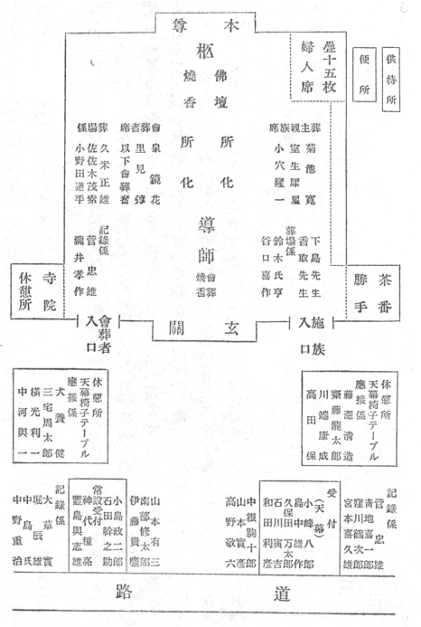
比呂志君がさう心配して畫架のまはりをうろついてゐた。雜記帳と鉛筆を持ちだしてきて、自分でも僕のやうに寫したかつたのであらう、芥川の枕もとに立つてうろうろとしてゐた。
檢屍官の一行が芥川の枕邊にきた頃には、「死んだあと、もし口を開いてゐるやうであつたら、なるべく開いてゐないやうに頼むよ」といつてゐた日頃の芥川の言葉を勘考して、その顏の構造をじつくりみなほして寫せる餘裕が持てた。「出つ齒でせう、だから眠つてゐると口をあいてゐるんです、」と葛卷があとで言つてゐた。芥川は昔、僕が二科會に出品した「白衣」の時には、西洋の文人、自分の一家一族の人達の寫眞まで持ちだしてきて、「やつぱり、立派に畫いておくれ」と言つてゐたが、「白衣」とは彼が名づけた題で處士といふ意があると教へてくれた。
そのままにと言つて警察の人は畫いてゐる僕の邪魔をしなかつた。
一應は點檢されてゐる芥川の體は固まりかけたと僕は横目でみてゐた。芥川が死ぬために建増しをした書齋兼寢室は、晴天であつても明るくはなかつたが、雨氣で一層暗かつた。芥川は頭を北にして寢てゐたやうである。
「幸に、けふは日曜で夕刊は休みだし、新聞には明日になるだらう、」さう言ひながら、僕らは芥川の友達が集まるのを待つてゐたが、文壇の人が三、四人みえた頃には意外に速く新聞社の人がきた。警視廳に遊びに出かけていつた者が偶然に變死人としての芥川を知つたとは、日日の記者（沖本）が言つてゐたと思ふ。後に愛宕山に關係した久保田万太郎はじめ誰もラジオに思ひつかなかつた時代で、僕は東北にゐてラジオで芥川の死を知つたといふ人の話に感心したものだ。
［＃改ページ］
改造社の圓本の講演旅行から歸つた芥川が書齋にはいるなり、そこにゐた僕に、『仙臺の宿で醉つぱらつた里見
 が「互にただの鼠でないと人に思はれてゐるのがつらい、」と言つたが、君も僕もただの鼠でもない者が、ただの鼠ではないと思はれてゐる。』と悄然として言ひ、旅行中の里見が宿の者に接するその鷹揚さを言つて、「自分のやうな者とは育ちがちがふ」と感心してゐた。僕は帝國ホテルで芥川が「谷崎はもう駑馬だ。佐藤はあれはまた過渡期の人間だ。われわれ過渡期に育つた人間はもうだめだよ。ああ！ 君、天下に恐るべきは志賀直哉ただ一人だ。俺はいままで誰も怖れなかつた。しかし、志賀直哉に對しては苦しかつた。僕の作品の全部をあげても志賀直哉のどれにも敵はない。が、君、僕の『蜃氣樓』あれだけは、君どうにかなつてゐるだらう？――才能と勉強だけでやつてきた人間は、志賀直哉のあの天衣無縫の藝術に息がきれる。」と言つてゐたこととあはせて、芥川といふ明治の中産階級の生活に慣らされた人間にある行儀のよさと窮屈とを感じる。
が「互にただの鼠でないと人に思はれてゐるのがつらい、」と言つたが、君も僕もただの鼠でもない者が、ただの鼠ではないと思はれてゐる。』と悄然として言ひ、旅行中の里見が宿の者に接するその鷹揚さを言つて、「自分のやうな者とは育ちがちがふ」と感心してゐた。僕は帝國ホテルで芥川が「谷崎はもう駑馬だ。佐藤はあれはまた過渡期の人間だ。われわれ過渡期に育つた人間はもうだめだよ。ああ！ 君、天下に恐るべきは志賀直哉ただ一人だ。俺はいままで誰も怖れなかつた。しかし、志賀直哉に對しては苦しかつた。僕の作品の全部をあげても志賀直哉のどれにも敵はない。が、君、僕の『蜃氣樓』あれだけは、君どうにかなつてゐるだらう？――才能と勉強だけでやつてきた人間は、志賀直哉のあの天衣無縫の藝術に息がきれる。」と言つてゐたこととあはせて、芥川といふ明治の中産階級の生活に慣らされた人間にある行儀のよさと窮屈とを感じる。文藝生活に於ける芥川に絲を投げかけた者を、僕は漱石、潤一郎と思ふ。芥川は、「夏目先生は五十圓以上の金は一度に拂はなかつた人だ。」と言つてゐた。芥川も夏目先生を或は見習つてゐたかも知れない。
七月二十一日に芥川は僕に金はいらぬかと言つてゐた。芥川は二十四日に死んでゐるが、その二、三日前に改造社から千圓を借りてゐて、僕は社の人になんでその金が必要であつたのかとあとで聞かれた。芥川が家の人達にかくしてゐたのであらうその金は、中野重治にやつたとかいふことを僕は葛卷に聞いた。麻素子さんも「ええ、わたしにはそんな事を言つてゐました。」と言つてゐた。芥川が左翼の人のシンパであつたかどうか僕にはわからない。多分芥川は中野といふ男の人間を買つて贈つたものと思ふ。當時の新聞記事にも生活難で死んでゐる人達のことが多かつたと思ふが、芥川は二十圓の金で死んでゐる人のことが載つてる新聞をひろげて、「僕はかういふ人達の事をみるにつけても、かうやつて自分が生きてゐることがすまないと思ふ、僕は日に二枚書けば生きてゆかれるのだ、」と言つて涙をこぼしてゐたのを僕はみてゐたことがある。もつとも、死ぬ話などしなかつた頃の芥川が、何かの時に清浦伯と席を同じくして、「僕もあの時は、ああいふ席になると自分もやはり、つくづく勳章がほしいと思つたよ、」と言つてゐたことはあつた。
大正十五年の冬、鵠沼にゐた僕らは、芥川、芥川夫人との三人は、一度横濱に行つてオデオン座であつたらう、ヴァレンチノの「熱砂の舞」を見た。芥川は「かうやつて死んだ者がまだ動いてゐるのをみてると妙な氣がするねえ、」と言つてゐた。（ルドルフ・ヴァレンチノ一八九五―一九二六、一九二六年即ち大正十五年八月二十三日に三十一歳の若さで死ぬ、「熱砂の舞」は遺作となる。父は伊太利人、母はフランス人。）
昭和二年の秋、芥川の家で大勢とシネマのなかの生前の芥川を見た。芥川はその改造社の現代日本文學全集の宣傳用フィルムのなかに動いてゐて、なんともいへぬ顏をしてゐるのだ。
七月二十二日の夕べ、芥川はサンドウィッチ、僕はハムライス、どちらも芥川の家でこしらへたものを食べてから、いつも二人だけの話になるときのやうに横になつた。
七月二十四日の朝、僕は義ちやんの畫架を借りて芥川の死顏を寫してゐた。
「ゑのぐはつけないの？」
と僕ちやん（比呂志君）が畫布をのぞいて言つた。
「あとで、」僕はさう言つた。
僕ちやんが安心して行つたと思ふと、もう一度帳面を持つてそばにきた。が、このクレィヨンの畫家は遂に寫生をしなかつた。
檢屍官が「そのまま、」と言つてくれたのはありがたかつた。それでも多少芥川のからだは動かされた。頸筋のところから、めきめき色が變つてきたので僕は筆を投じた。畫はＦ十號である。人に聞いた話ではあるが武者小路實篤は、木炭で形をとつて、繪具を點々においてあるこの畫をみて、毒でああなつてゐたのかと言つたといふ。點々は繪具を畫面全體につける時間がなくてさうなつてしまつてゐるので、芥川の死顏そのものは全く綺麗であつたのだ。
夏目漱石先生の靈前に獻ずとした「羅生門」の扉に、君看雙眼色不語似無愁を擇んだ芥川は、「春服」の扉には暮春者春服既成得冠者五六人童子六七人浴乎沂風乎舞
 詠而歸といふ論語の中のながい言葉を擇び、春服二字の扉と袴着の祝ひの時の寫眞との間にもう一枚、暮春には春服既に成り、から、沂に浴し舞に風し詠じて歸らむ、までを扉としていれる注文で、尚子が書いて版をこしらへた。それを僕の入院騷ぎで、（見返しの畫は、伊香保からやうやく家にたどりついて足を切斷されるに入院するまでの二日の間に脱疽の痛みのなかで畫いた、）小峰八郎（當時春陽堂にゐた）が忘れ、芥川もうつかりしてゐて版までこしらへておきながら、本になつてしまつてから落してゐたのに氣づいた。僕は時に、夏目漱石がはじめて訪ねてきた芥川を、孔子曰く、君子に三戒あり、を言つて戒しめたといふことと、暮春には春服既に成りと「春服」にいれようとしてた芥川のことを思ひだす。
詠而歸といふ論語の中のながい言葉を擇び、春服二字の扉と袴着の祝ひの時の寫眞との間にもう一枚、暮春には春服既に成り、から、沂に浴し舞に風し詠じて歸らむ、までを扉としていれる注文で、尚子が書いて版をこしらへた。それを僕の入院騷ぎで、（見返しの畫は、伊香保からやうやく家にたどりついて足を切斷されるに入院するまでの二日の間に脱疽の痛みのなかで畫いた、）小峰八郎（當時春陽堂にゐた）が忘れ、芥川もうつかりしてゐて版までこしらへておきながら、本になつてしまつてから落してゐたのに氣づいた。僕は時に、夏目漱石がはじめて訪ねてきた芥川を、孔子曰く、君子に三戒あり、を言つて戒しめたといふことと、暮春には春服既に成りと「春服」にいれようとしてた芥川のことを思ひだす。「黄雀風」とか「湖南の扇」とかの裏表紙にある詩は、芥川の好みや注文ではなく、全く僕が勝手にやつたものである。
「夏目さんはあの紙屋のおかみさんが好きだつたんだ、」と、芥川と牛込を歩いてゐたときであるが、芥川はちよつと右肩と顎で僕に教へた。
僕は紙屋のおかみさんが夏目さんに畫を勉強させたのかなと、歩きながら考へた。
昭和二年の夏、芥川は東日に「本所兩國」を書いた。そのさしゑは藤澤古實が（アララギ派の歌人、當時美校で彫刻をやつてゐるといふ話を聞いた、）やるはずであつたところ古實が辭退したので、岸田劉生に「銀座」あり、われもまたといふことにして芥川が畫も畫かうと、カットは橋、畫は芥川家が載つてゐる昔の地圖の模寫で一囘分ができたが、あと十四日分ではしのげずに、掲載の前の日になつて急に僕がやらされた。
大正の十二、三年頃であらう、僕が婆やの鯨のお詣りが面白くてその話をそのままを寫しておいたのを、芥川がみて面白がり、半紙にすらすら群鯨參詣圖を畫くと、「人間」であつたか、「隨筆」であつたかにそのまま畫といつしよに渡してしまつた。その畫の板木はできたが、その雜誌がつぶれてそのままになつてしまひ、板木は神代種亮（故人、校正のエキスパート）が持つてゐたが、後にある印刷所が全燒の際に燒けてしまつた。
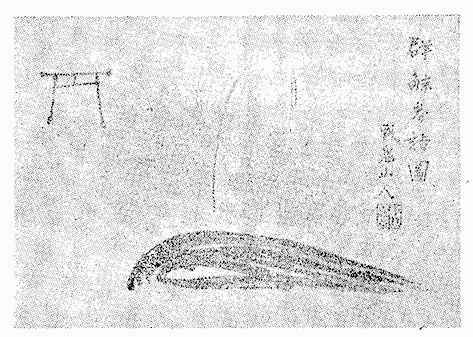
小石川のアパートにゐたときに、義ちやんが林檎一つを大きく畫いたのを持つてきて、僕にその畫を芥川がよくないと言つてゐると言つてゐた。僕が芥川に會つて義ちやんの畫いた林檎のどこに不滿を感じたかと聞くと、芥川は「僕はあまり大きく畫いてある、それがいけないと言つたのだ」と言つてゐた。
僕は芥川の死後、神樂坂の田原屋の店さきに一つ壹圓の印度林檎をはじめてみたとき、その大きさに感心して芥川にこの林檎をみせておきたかつたなあと思つた。芥川は死なうといふのにダンス場をみなければ時勢に遲れるとか、龜井戸をみなければとか言つてゐた男だ。
僕はアンナ・パヴロワが日本にきたときに、芥川に伴れられて帝劇でその「瀕死の白鳥」をみた。僕はパヴロワの踊りを立派だと思つたが、幕合ひに廊下にでようとした芥川が、「あつ！ 永井さん」と小さい聲で言ひ、急ぎ足で僕らから十列ばかりうしろの席にゐた永井さんのところにゆき、大層丁寧なお時儀をしてゐた。芥川も黒い服であつたが、立上つた芥川に挨拶をかへしてゐた荷風さんも黒服で立派であつた。その時の有樣はなにか文壇史といつたもののやうに僕の目にいつまでものこつてゐる。芥川はうしろの僕をちよつと荷風さんに紹介すると、歩きながら、荷風さんの隣りの席にゐた日本髮の婦人のことを「八重次」と強い小さい聲で教へてゐた。廊下にでた芥川のそのときの顏はほんのりと上氣してゐるやうにみえた。
赤門の前を芥川と歩いてゐて、夫人を伴れた梅原（龍三郎）に會つて一度紹介されたことがあつた。芥川は正門のところ近くで、「いま、自分と梅原とをならべて人が比較してゐる、」と言つてゐた。芥川がさう言つてゐた後のことと思ふ。「白衣」が竹の臺の陳列場にならんだとき、梅原の十號ほどのナポリの風景の前に芥川はほんのり上氣した顏をして立つてゐた。
芥川のあのなにかのときにほんのり上氣した顏、あれはなかなかいい顏であつた。
瀧井孝作が「無限抱擁」のヒロインと湯島に世帶をもつて、そのヒロインが髮結いさんをはじめた。芥川は、「女房をやつて、さきに髮を結つて貰つてから芥川の家内であると言つて祝ひを述べさせた、」と言つてゐた。
芥川本の裝幀にはじめて關係した「夜來の花」（大正十年三月新潮社版）のときのことである。
芥川に紙に刷つてあつた表紙の見本刷りをみせると、これを木版屋にさういつて布に二枚刷つてもらつてくれたまへ、机に置くのにいいからといはれて、原稿用紙の下に敷くのかと思ひ（このごろはどうか、以前はこつとう屋とか支那雜貨を商ふ店でみかけた、清朝時代の服からとつた布に裏をつけて小さいふくさのやうに仕立てたものに、芥川は原稿用紙をのせてゐた。室生犀星さんのところあたりには今日でもさういふものがあるかもしれぬ。）伊上凡骨に、芥川さんの頼みだができるだけ藍を濃くして刷つてみてくれとたのんで、刷つてもらつたものを屆けると、今度は、君、どこかいい細工物屋を知らないか、これで女持ちの紙入を二つこしらへてもらひたいのだがといふので、鎗屋町（現在の銀座西四丁目四）の清兵衞さんに相談にゆくと、並びの川島甚兵衞の店のよしべいさんを紹介してくれ、そのよしべいさんに連れられて、丸善のそばかと思つた横丁のしもたやにいつて、その家の人と相談して、裏は鹽瀬の古代紫にしてもらふことにしたが、出來上つたものをみると、表がごりごりの白木綿に藍だから、イキなものになつて桐の箱にはいつてゐた。それを早速、田端（芥川家）に持つていつて話してると、はしご段に音がするなり芥川は掌をあげて、僕に“しつ”といひ、にやり笑つてふりかへると、せつかくの紙入れをうしろに積んだ本のかげにかくしてしまつた。はしご段に音がしたのは、奧さんが茶を運んできた足音であつたが、一つは奧さん一つはだれとばかり考へてゐた僕はなにもいへず、なにくはぬ顏をしてゐる芥川と微笑をかはしてゐた。
僕は女人たちに、「芥川さんはどういふ女の人が好きだつたのですか、」と聞かれると簡單には説明できずに、どういふものかまはりくどい大正十四年の秋の娘さんを思ひだすのだ。さうして、輕井澤の歸り芥川、僕ちやん（比呂志君）蒲原たちの四人は田端でおりるので大宮で電車に乘りかへた、僕らのうしろからは下町風の質素な身なりの身だしなみのよい母娘が乘つてきて向ひ側に腰をかけた、娘さんが立上つて網棚に荷をあげようとする、電車が走つてゐるので二、三度よろめいてゐる、と、輕井澤にゐて、このてらになかときぐんやぶれきてはらきりたりときけばかなしも、と言つてゐて氣色がすぐれず、僕の顏いろをみてゐた毎日のその芥川が、すうつと立つていつてその荷を棚にあげてやる、娘さんが芥川に禮を言つて席に腰をおろす、娘さんはこちら側の僕の左りの席に置いてあつた芥川のスーツ・ケースにじつと目をさらしてゐる。ケースについてゐる小さい活字の芥川の名刺が
しこんである名札入れが垂れ下つて、娘さんの正面に向いてゐる。娘さんはやがて合點して、ちよつと芥川のはうをうかがつてからこつくりをするとつつましやかなほほゑみをうかべる。といふ情景を思ひだして話をしてゐる。娘さんはどうして芥川の住所を知つたのか、芥川は、「こなひだの娘が禮のはがきをよこしたよ、」と言つてゐた。
僕はさういふまはりくどい話しをしたあとに、芥川と知合ひになつたばかりの頃、いつしよに町を歩いてゐて、なんであつたか芥川が「僕は身なりが綺麗であつても馬鹿と歩くのは恥づかしいと思ふよ、」と突然言つてゐたことを忘れずにつけ加へてゐる。
「久米のいいところは僕らがためらふところを、浴衣がけで平氣で尻はしよりして毛臑をだしたまま跨いで渡つてしまふところだ、」と芥川は一度述懷してゐた。
また、「僕は中勘助のやうな生活がしたい、」とも一度言つてゐた。
その一生をふりかへつての話のなかで芥川は、「大毎の貳百圓、文藝春秋から五拾圓、それで僕は幸に節をまげることなくすませてこられた。」と言つてゐた。
大毎から貰ふ月月の手當とボーナスを合せて月割にすると貳百圓になると言ひ、文藝春秋の五拾圓は月月の卷頭に寄せてゐたものから受取る稿料のことである。
［＃改ページ］
「扨、昨日義ちやんよりのお言づけを老人達に申傳へましたが何しろ昔の事で、すこしも覺えて居りません。築地入舟町八丁目、番地は一寸不明で御座いますが一番地ではなかつたかと思ふ位で御座います。私は全然わからない事で何とも申上げやうも御座いません。
また本所は小泉町十五番地で、國技館から半町ほど龜澤町に向つて行つた反對がはで新宿に移る時に釣竿屋にゆづつたとの事で向ふがはに大きな毛皮屋がありました。震災後の事は一寸わかりません。
尚入舟町の方は近所で澤山外國人の家があつた由。何でも聖路加病院の近くださうで御座います。」
岩波から普及版「芥川龍之介全集」全十卷が刊行されることになつた昭和九年に、僕は芥川夫人からかういふ手紙をもらつて、〔明治二十五年三月一日、東京市京橋區入船町に生まる。〕又〔母方に子無かりし爲、當時本所區小泉町十五番地の芥川家に入る、〕といふところから順に寫眞に撮つておかうとした。寫すのは弟がやつてくれることにして、二人で行つてみると、いりふねばしのまん中でもう途方にくれてしまつた。橋を渡る前と渡つたあとの二つの交番のどちらで聞いても、現在の入舟町には五丁目までで八丁目はないといふのである。それでやむをえず、僕はあてずつぽうに廣くなつてゐた通りを撮つておいてもらつたが、芥川關係の入船町のことは、いまとなると當時の月報第二號に載つてゐる葛卷久子の手紙で偲ぶよりほかはなかつた。
芥川がこの姉とも義絶せよと書置してゐる、その間の事情はともかくとして、芥川の入船町、少年時代の事などを書いてゐるこの手紙は、新書判の芥川龍之介案内といつたものにでも收録できなかつたのか、ちよつと惜しいものである。
小泉町十五番地のはうは震災後東兩國三ノ一・五となつてゐたが、釣竿屋さんといふのはこれはいたつて簡單にわかつた。さうして、店さきでこちらの話を言ふと、今日は病氣で臥せてゐるといふ主人がわざわざでてきて、昔の芥川家の正面の見とりと間どりを畫いてくれた。慾を言ふと、それが僕らの使ふやうな鉛筆でなく、HBあたりの硬いものを使つてゐるので、雅致のあるその筆跡も凸版にはむつかしくて、致方なくそれをペン畫のインキでなぞつて紹介することとした。うどんそばの家も釣竿屋さんの家のなかにはいつてしまつてなくなつてゐたが、うどんそばと渡邊牛乳店の間をはいつた通りに面した塀が昔の芥川家の塀と同じ樣式であると教へられて寫眞に撮つておいてもらつた。
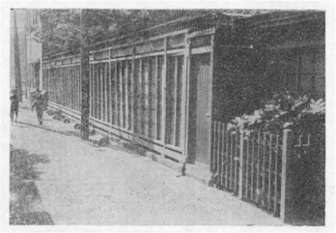
石井商店の主人の話では、脇の塀が芥川家から讓受けた時のままの形であるといふので寫しておいた。主人の畫いてくれた正面の見とりと間どりの圖面とこれで、本所時代の芥川家といふものが僕らにしのべる。
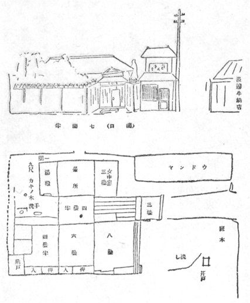
本所區小泉町十五番地
芥川夫人に石井商店の主人が晝いてくれた圖面を見せたら、この繪どほりですが、芥川さんの五葉の松といつて、有名な松があつたのですがそれが畫いてないと言つてたのは、ほほゑましかつた。石井商店といふのは、電車通りの釣竿屋さんにしては隨分大きい店と思つたが、終戰後はどうなつてゐるのか見てないので知らない。
［＃改ページ］
うさぎやが來て、碧童さんのところに芥川さんと君の合作の鬼趣圖があると言ふ。そんなものは畫いた覺えがないと言ふと、ともかくなんだか一度見てみないかと言ふ。そんな話から僕はうさぎやと一緒に十三年ぶりで、小澤碧童の家に行つてみせてもらつてきたが、それが昔の游心帳をとりあつめてその中に、
龍之介隆一兩先生合作
鬼趣圖をみてよめる狂歌
ろくろ首はいとしむすめと思ひしに縞のきものの男の子なりけり
うばたまのやみ夜をはけてからかさの舌長々し足駄にもまた
と達筆で書いた碧童の筆蹟があるのをみるまでは、なかなか合點できなかつたものである。鬼趣圖をみてよめる狂歌
ろくろ首はいとしむすめと思ひしに縞のきものの男の子なりけり
うばたまのやみ夜をはけてからかさの舌長々し足駄にもまた
忘却はおそろしい。僕はやうやく碧童の持つてゐる鬼趣圖が駒込９・12・21の消印（大正）で送られてゐた奉書の手紙を卷書に仕立ててゐたのだとはつきり氣づいた次第であつたが、當時ですら、十九年も前のことであつたから、持つてゐた碧童にも畫いてゐた僕にも、ちよつとわけがわからなくなつてしまつてゐたのであつた。
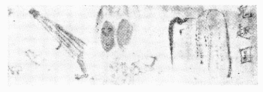
芥川と僕が合作の鬼趣圖を碧童に送つたのは十二月二十一日であるが、芥川は七日に、〔ボクは今王煙客、王廉州、王石谷、
 南田、董其昌の出現する小説を書いてゐる、皆登場してたつた二十枚だから大したものさ、洞庭萬里の雲煙を咫尺に收めたと云ふ形だよ、コイツを書き上げ次第鮫洲の川崎屋へ行きたいが、君つき合はないか、入谷の兄貴も勿論つれ出すさ、雲田屋我鬼兵衞〕といふ手紙を僕によこしてゐた。この二十枚といふ小説が「秋山圖」であるが、芥川は自決を言ひだしてから、記秋山圖始末の載つてゐた甌香館集と新羅山人題畫詩集とを僕にくれてゐる。
南田、董其昌の出現する小説を書いてゐる、皆登場してたつた二十枚だから大したものさ、洞庭萬里の雲煙を咫尺に收めたと云ふ形だよ、コイツを書き上げ次第鮫洲の川崎屋へ行きたいが、君つき合はないか、入谷の兄貴も勿論つれ出すさ、雲田屋我鬼兵衞〕といふ手紙を僕によこしてゐた。この二十枚といふ小説が「秋山圖」であるが、芥川は自決を言ひだしてから、記秋山圖始末の載つてゐた甌香館集と新羅山人題畫詩集とを僕にくれてゐる。芥川の言ふ「書く會」、碧童の言ふ「行燈の會」での歌は、今日になると碧童のもののはうが昔を偲ばせる。
行燈ノ灯影ヨロコヒコヨヒシモ三人カアソブ灯影カソケキ
生キノ身ノ三人カヨレバ行燈ノ灯影ヨロコビ歌作リワブ
呉竹ノ根岸ノ里ノ鶯ノ青豆タベテ君カヨロコフ
秋タケシ我鬼窟夜ノシチマナル三人ノアソヒミタマヨヒカフ
行燈ノ灯影ヨロコフ酒蟲ノあか歌いかに酒蟲の歌
幼ケナキコロヲ偲フハ行燈の灯影タノシミ寢し我かも
シツヤシツ行燈ホカケヨロコベルウマ酒ノ醉身ヌチメクルモ
夜ヲコメテ行燈ホカケヨロコベル三人ノモノノ歌ヒヤマスモ
むらむらに黄菊白菊しあへる河郎の舍の夜のよろしも
白菊ノ花ノミタレヨ行燈ノホカケニミレハ命ウレシキ
これら三十何年前の游心帖のなかに埋れたままになつてゐる、碧童の一連の歌をみてゐると僕は、「書く會をやらばや」の酒蟲ノアカヨロコベル行燈ノ主寂シモのその主の芥川、河郎之舍の名護屋行燈、淺草で買つた五圓の南京の鉢に蜂屋柿、陶物の杯臺（灰落しに使つてゐる）、和蘭陀茶碗、南京の鉢は淺草の瓢箪池に近い道具屋にあつたもので、それを買つた日には、背景に畫いた十二階を使つてゐる寫眞屋にはいつて、皆で寫眞を撮つてもらつたが、できたのをみると、香取さんがこしらへた生キノ身ノ三人カヨレバ行燈ノ灯影ヨロコビ歌作リワブ
呉竹ノ根岸ノ里ノ鶯ノ青豆タベテ君カヨロコフ
秋タケシ我鬼窟夜ノシチマナル三人ノアソヒミタマヨヒカフ
行燈ノ灯影ヨロコフ酒蟲ノあか歌いかに酒蟲の歌
幼ケナキコロヲ偲フハ行燈の灯影タノシミ寢し我かも
シツヤシツ行燈ホカケヨロコベルウマ酒ノ醉身ヌチメクルモ
夜ヲコメテ行燈ホカケヨロコベル三人ノモノノ歌ヒヤマスモ
むらむらに黄菊白菊
しあへる河郎の舍の夜のよろしも白菊ノ花ノミタレヨ行燈ノホカケニミレハ命ウレシキ
（片假名平假名のまじりなど、碧童の醉筆のままに寫す。）
河郎の舍の主に奉る
河郎の陸をし戀ふる堪えかねて月影さやに月影さやにヒヨロト立ち出つ
といふ碧童の歌のヒヨロに「このヒヨロト立ち出つはうまいなあ、」と感心してて、後日になつてやうやく、〔橋の上ゆ胡瓜投ぐれば水ひびきすなはち見ゆる禿のあたま〕といふ歌を僕に示してゐた。芥川が當日示してゐたものに河郎の陸をし戀ふる堪えかねて月影さやに月影さやにヒヨロト立ち出つ
行燈の火影は嬉し青竹の箸にをすべき天ぷらもがな
行燈の古き火影に隆一は を描くなり蜂屋のを
を描くなり蜂屋のを
盤禮彦かみの尊もをすと十束の劍置きたまひけむ
といふ歌があつた。行燈の古き火影に隆一は
を描くなり蜂屋のを盤禮彦かみの尊も
をすと十束の劍置きたまひけむ河郎之舍の印は、入谷住ひの碧童が（仲丙が篆刻家としての號、）今日は娘達の運動會を見にゆくのをたのしみにしてゐたが、雨でながれたものだからと言つて、刻むでゐたのを游心帖に押してみせた、それを僕が芥川に紹介し芥川の物になつた。（新書判全集、書簡六四一參照）當時僕は、河童はその河童の印にまで水に縁があるものなのかと思つてゐたものである。

小澤碧童は夜ふけ淺草の五錢の木戸の安來節に、人を押しわけてゆき、舞臺の女といつしよになつて大聲でゐるかと思ふと、その三味線を彈く盲の女がいく度か切れる糸をまさぐつてゐる、それをみておろおろと泣く、さういふ人であつた。
我鬼時代の芥川の書といふものは、同じ妖怪を畫いてゐても、その妖怪にどことなく愛敬があつたものである。僕はいつか佐佐木茂索の家の芥川の河童の額をみて、河童も晩年には草書となるかといふ感をしみじみと抱いた。「捨兒」「鼠小僧次郎吉」等を書きあげてゐた頃の、着物の下に黒の毛糸のジャケットを着込んでゐた芥川の漁樵問答に依つた水虎、芥川の河童も始めは二疋立ちの畫であつたのが、「山鴫」の頃には、斧、釣竿を捨てて、一疋立ちの河郎となつてをり、さらに「玄鶴山房」「河童」の頃に至ると、蒲の穗さへ捨ててゐる河童の姿に、僕をもつて言はしむれば、河童もまた晩年には草書となるかとの感がある。河童の畫もまた晩年には明らかに疲れてゐる。しかしながら、一ツ目の怪の畫のごとき河童にあらざる數枚の物は、晩年に至つて堂々たると言つてもよろしいかたちを具へてきてゐるので、甚だ面白い對照と考へる。
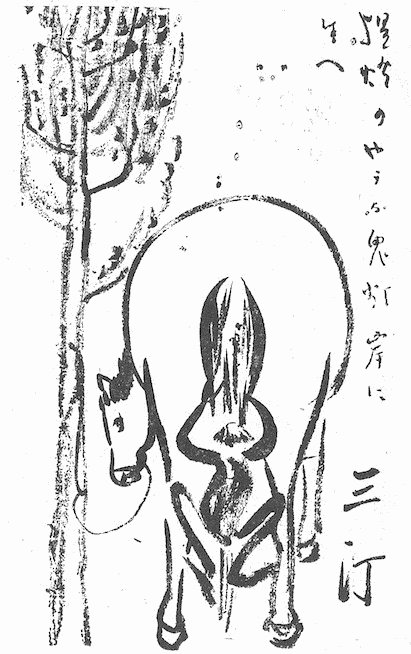
畫は久米正雄、賛と三汀の署名は芥川、三汀の二字久米の書體に似せてゐる。
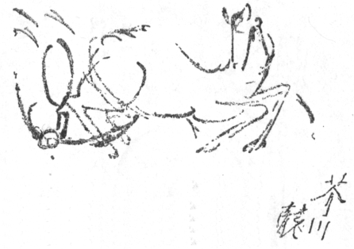
久米は芥川のいたづらをみると、芥川が河童が馬に蹴とばされたところを畫くのを待つてて、どれと言ふなり芥川龍と書き、似てゐるだらうと言つてゐた。本郷の江知勝で三人が飯を食つた時のあそびである。
僕はまだ河童をみてもをらず、河童といふものが地上に棲息するかどうかも知らないが、「君、つらつら考へてみるとたつた四人の客では、風呂の釜も毀れるのがあたりまへだよ、君、」とあとで芥川が言つてゐた布佐行、そもそも書く會をやらばやの僕ら、僕らはなぜ芥川の伊豆箱根説を退けて布佐行を擇んでゐたのか、いまにして思へば、僕らは芥川を河童の畫の名題の妙手、小川芋錢のゐる牛久沼のほとりへ無意識に誘つてゐたといふことになるが、僕ら芥川、碧童、遠藤たちの四人が、我孫子で降りて、布佐の辨天を振出しに、青い物のない景色にもひるまず、川の流れに沿つてただ歩きに歩き、日暮れて行きつくところで泊つた旅籠屋、ああいふのが河童の宿かも知れない。大の男が四人もそろつて冬の利根川べりを何なすとなく、何話すとなく、終日歩るきそのまた翌日も歩いてゐたといふことは、全くもつて利根の河童に化かされてゐたのかも知れない。河童の宿の主は、釜が毀れてゐるからすまないが錢湯に行つてくれと湯札をだした。（湯にはいかなかつたが、女郎屋の入口を皆で見てすぐ戻つた。）旅籠賃があまりに安いので、それ相當に、四人の頭で壹圓の茶代をだすと、手拭のかはりに敷島四個をうやうやしく盆の上にのせてよこした。僕はその旅籠屋を河童の宿と思つてゐるが、宿の主のはうでは僕らを河童だと思つてゐたのかも知れない。なぜならば、女中は四人の床を昨夜は並べて敷いておいた、朝になるとそれが昔のロシヤ帝國の旗のやうに襷になつてゐた。僕らはほの暗い電燈の下を中心にして臥せりながら、顏をつき合せて卷紙に歌、句、畫などを畫いてゐただけであつたのであるが、人の寢るその恰好にはそれ相應の恰好があらうといふもので、僕らのやうな眞似をしてゐるものこそ、宿の人には利根の河童にみえたかも知れない。
今日布佐行繪卷となつて芥川家にあるものが、この時のものなのである。
サミダルル赤寺ノ前ノ紙店ユアガ買ヒテ來シチリ紙ゾコレハ 我鬼
游心帳には前期の物と後期の物とがある。そもそもは、僕が祖母に矢立を貰つたので、半紙を四つ折にして綴ぢた帳面を拵へ、游心帳と書いて懷にしてゐたのがはじまりでこれが前期の物、半紙二つ折の後期の物、後期の物といつても第二册目あたりからの物が碧童題とか衷平題とかなつて、碧童の筆で游心帳が游心帖、ゆうしんぢよう、ゆうしんじやうなどと變り、いつとなく僕の游心帳が芥川、碧童、遠藤などとの間で雜談のをりの歌や句、畫の用にまで利用されてゐたのである。河童と豚の見世物、明治二、三年洗馬に於いて二十人を容るるほどの小屋掛けにて瓢箪に長き毛をつけたる物を河童と稱び見世物となし興行せる者あり。見料大人と小人との別あり。豚も見世物となる。といつた種類の聞書を集めたり、豆菊は熨斗代りなるそば粉哉、などといふ獨稽古の俳句を書いてゐたものが前期の物に屬し、久米正雄の河童の繪まである賑やかな物は後期の物に屬するのである。長崎の長いちり紙に添へて半紙に楷書、紙でも下敷にしたかのやうに行儀よく書かれてゐる、サミダルル赤寺ノ前ノ紙店ユは、これは勿論游心帳に書いてあつた歌ではなく、『後記。僕の句は「中央公論」「ホトトギス」「にひはり」等に出たものも少くない。小穴君のは五十句とも始めて活字になつたものばかりである。六年間の僕等の片手間仕事は、畢竟これだけに盡きてゐると言つても好い。即ち「改造」の誌面を借り、一まづ決算をして見た所以である。芥川龍之介記』とある大正十四年九月の「改造」の「鄰の笛」、（鄰りの笛といふ題は僕が詩韻活法から拾つた、）大正九年から同十四年度に至る年代順の芥川と僕の五十句づつの句のなかにある、
長崎土産のちり紙、尋あまりなるを貰ひて
よごもりにしぐるる路を貰紙
といふ僕の句を思出させる芥川の歌、僕に游心帖時代を思はせる歌なのである。よごもりにしぐるる路を貰紙
僕は大正十二年の正月に右の足頸からさきを脱疽で失くなした。さうして、松葉杖にたよるやうになつてからは、
偶興
あしのゆびきりてとられしそのときは
すでにひとのかたちをうしなへる
あしのくびきりてとられしそのときは
すでにつるのすがたとなりにけむ
あしのくびきりてとられしそのときゆ
わがみのすがたつるとなり
かげをばひきてとびてゆく
といふ類の詩をつくりだしてをり、矢立は震災の直後祕露に行く遠藤に餞別として贈り、あしのゆびきりてとられしそのときは
すでにひとのかたちをうしなへる
あしのくびきりてとられしそのときは
すでにつるのすがたとなりにけむ
あしのくびきりてとられしそのときゆ
わがみのすがたつるとなり
かげをばひきてとびてゆく
思遠人、南米祕露の蒔清遠藤清兵衞に
獨りゐて白湯にくつろぐ冬日暮れ
などといふ句をつくつてゐる。後期の游心帳は意外にも九年十年十一年の晩秋で終つてゐる。これは僕の入院、さうして隻脚となる、半紙二つ折の物は松葉杖で歩くときには懷中からとびだし、義足で歩くやうになつて服になるといれどころに困る、といつた事情で自然消滅となつてしまつてゐたのであつた。獨りゐて白湯にくつろぐ冬日暮れ
游心帳に殘つてゐる芥川の筆蹟を拾つてゆくと、
秋の日や竹の實垂るる垣の外
落栗や山路は遲き月明り
爐の灰にこぼるる榾の木の葉かな
野茨にからまる萩の盛りかな
これらの句のある帳面の表紙はとれてゐる。裏表紙には碧童刻の合掌の印が押してある。合掌といふことばは一と頃の芥川が手紙に使ひ、碧童またこのことばを珍重し印に刻むといふ時代であつた。僕はこの帳面のなかの子規舊蘆之鷄頭を見て、碧童に伴はれ子規舊蘆を見たこと、芥川に伴はれて瀧井孝作と共に主なき漱石山房を訪ねた日を思出した。落栗や山路は遲き月明り
爐の灰にこぼるる榾の木の葉かな
野茨にからまる萩の盛りかな
天雪の光まぼしも日本の聖母の御寺今日見つるかも
この歌は齋藤茂吉の歌ではないかと思つて人にたづねるとさうではないといふ。芥川が新聞の劇評を書かなければならず、帝劇の歌舞伎を見にゆくとき僕を誘つていつたが、一幕ずるけて喫煙室で僕と雜談してゐたをりに書いてゐたもの、歌のかたはらに木立の下の藁葺小屋に住む人を畫いてゐる。この帳面に碧童の鬼趣圖をみてよめる狂歌がある。この帳面の表もとれてゐる。
君が家の軒の糸瓜は今日の雨に臍腐れしや或はいまだ
笹の根の土乾き居る秋日かな
歌と句を並べ、秋日かなの筆のつづきか、芥川は一輪の菊の上にとまつた蜻蛉を畫いてゐる。蜻蛉はしつぽをあげて土の字を指してゐる。表紙は糸瓜の宿の衷平（碧童）の手でゆうしんじようとなつてゐる。笹の根の土乾き居る秋日かな
荒あらし霞の中の山の襞
この一句のほかに
うす黄なる落葉ふみつつやがて來し河のべ原の白き花かも 南部修太郎
いかばかり君が歎きを知るやかの大洋の夕べ潮咽ぶ時 南部修太郎
しらじらと蜜柑花さく山畠輕便鐵道の歩みのろしも 菊池 寛
と芥川が書いてゐる。この游心帳は綴ぢも全き物、ひかた吹く花いかばかり君が歎きを知るやかの大洋の夕べ潮咽ぶ時 南部修太郎
しらじらと蜜柑花さく山畠輕便鐵道の歩みのろしも 菊池 寛
草青む土手の枯草日影 我鬼
曼珠沙華むれ立ち土濕りの吹く 我鬼
家鴨眞白に倚る石垣の乾き 我鬼
一層痩せて支那から歸つて中西屋にゐた芥川に招ばれて碧童と僕は、首相加藤友三郎がゐたといふ部屋をあてがはれてゐた。友を訪へば、「外面の暗い秋霖の長髮をなでてゐた」といふのは碧童のその時の句である。曼珠沙華むれ立ち土濕りの吹く 我鬼
家鴨眞白に倚る石垣の乾き 我鬼
山に雲下りゐ赤らみ垂るる柿の葉 我鬼
たかむら夕べの澄み峽路透る 我鬼
游心帳に書いてはないが、この二句も、時雨に鎖されてゐた三日間の僕らの動靜を多少は傳へてゐる隨筆（十年、十一月、中央美術）に收録してゐたものである。「將軍」は中西屋の龜さんの話でできたと芥川は言つてゐた。たかむら夕べの澄み峽路透る 我鬼
碧童の歌には、峯見ればさぎりたちこめ友の居る
游心帖に終止符をうつてしまつたもの、それが訪問録であるが、二十五字詰十二行の原稿紙を綴ぢた物に半紙の表紙をつけ、訪問録と書いて、僕の病室の枕もとに置いてくれたのは小澤碧童である。
訪問録の中に殘つてゐる芥川のものは、
十八日（大正十一年十二月）
一游亭足の指を切る
人も病み我も病む意太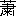條
初霜や藪に鄰れる住み心
冬霜よ心して置け今日あした
二十五日
小穴隆一、遠藤清兵衞、成瀬日吉の三氏に獻ず。
時 千九百二十二年耶蘇降誕祭
處 東京順天堂病院五十五室
一游亭足の指を切る
人も病み我も病む意太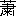條
初霜や藪に鄰れる住み心
冬霜よ心して置け今日あした
二十五日
小穴隆一、遠藤清兵衞、成瀬日吉の三氏に獻ず。
時 千九百二十二年耶蘇降誕祭
處 東京順天堂病院五十五室
患者一人ベッドに寢てゐる。看護婦一人病室へ入り來り、患者の眠り居るを見、毛布などを直したる後、又室外へ去る。
室内次第に暗くなる。
再び明るくなりしとき、病室の光景は變らざれど、室内の廣さは舊に倍し、且つ窓外は糸杉、ゴシック風の寺などに雪のつもりし景色となり居る。此處にトランプのダイヤの王、女王、兵卒の三人、大いなる圓卓のまはりに坐り居る。圓卓の下に犬一匹。
ダイヤの王 ハアトの王はまだお出にならないのか？
ダイヤの女王 さつき馬車の音が致しましたから、もう此處へいらつしやいませう。
ダイヤの兵卒 ちよいと見て參りませうか？
ダイヤの王 ああ、さうしてくれ。
ダイヤの兵卒去る。
ダイヤの女王 ハアトの王はわたしたちを計りごとにかけるのではございますまいか？ダイヤの王 そんな事はない。
ダイヤの女王 それでも日頃かたき同志ではございませんか？
ダイヤの王 今夜皆イエス樣の御誕生を祝ひに集るのだ。もし惡心などを抱く王があれば、その王はきつと罰せられるだらう。
ダイヤの兵卒歸つて來る。
ダイヤの兵卒 皆樣がいらつしやいました。ハアトの王樣も、スペイドの王樣も、クラブの王樣も、……ダイヤの王（立ち上りながら）さあ、どうかこちらへ。
ハアトの王、女王、兵卒、スペイドの王、女王、兵卒、クラブの王、女王、兵卒、等皆犬を一匹引きながら、績々病室へ入り來る。（未完）
あけくれもわかぬ窓べにみなわなす月を見るとふ隆一あはれ 龍之介
だけであるが、芥川が訪ねてくれたのはこの十八、二十五の二度だけではなく、使ひも屡々よこしてくれてゐたし、本も隨分屆けてくれてゐた。僕が隻脚となつても、少しも氣持がまゐつてしまはずにこられてゐるのは、全くやさしい芥川がゐてくれたそのお蔭である。
僕は十八日に右足第四趾切斷、十二年の一月四日に足頸から落して、病み臥せばあけくれなくてをりをりに窓邊にいづる月は浮べり、といふ長い病院生活をしてゐた。この病院生活の間に芥川から「甥が家出をしたので（葛卷のこと、）探してゐたが、やつと見付けだしてほつとしたよ、」といふ話を聞いたり、一中節を聞かせて貰つたりした。芥川は僕に元氣をつけるために、枕もとで隨分大きな聲でうたつてくれた。
僕はこの入院中に芥川夫妻と比呂志君の三人が合作した手紙を貰つてゐる。今日では夢の如きものとなつてゐるが、萬感こもごもで圖版にして貰つておいた。オカゴといふのは、遠藤の姉さんが足を失くした僕に見舞にくれたおもちやの駕籠のことである。
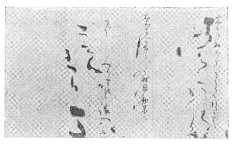

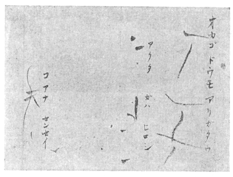
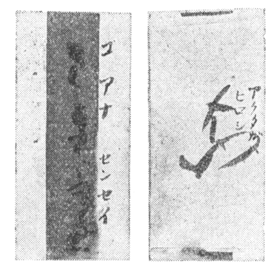
片假名のふりがなは芥川、平假名のふりがなは芥川夫人、オカゴといふのは、遠藤の姉さんが足首をとつてしまつた僕に、赤い座布團のはいつたおもちやのお駕籠をくれた、僕はそれを芥川の使にきた庫輔君に比呂志君にといつて渡した、すると庫輔君が次ぎにきたときに持つてきたのがこの手紙である。大正十二年の春のはじめで比呂志君が數へ歳で四つ、まだもじやもじやしか書けないときに、僕の顏といつてはつきり顏を畫いてゐるのはふしぎである。僕はこの顏は芥川が筆を左手に持つて畫きそへたものと思つてゐるが、芥川夫人に照會してみないとわからない。
［＃改ページ］
松風に火だねたやすなひとりもの
まことに、ひとりものであつた私は、貰つた一と切れの西瓜がすぐには食へず、臺輪を縁側に持ちだして泥釜をのせ、その釜蓋の上に西瓜を置いて、半紙に寫してゐたのだ。
畫は、鍋釜を自分で洗つてゐたひとりものの墨じるのいたづらがきで、みすぼらしいが、句のはうは、畫いてゐた時に、芥川が勝手口からはいつてきて、（鵠沼生活の時、芥川は玄關からも縁側の方からも入つてきたことはなく、窓からか、勝手口からかに限つてゐた。）一寸僕に塗らせろよといひこんで、そばにあつたクレイヨンで色をつけてから、松風にと書添へてゐたものだ。以前は、短册を十枚買へば箱をつけてくれるか、箱がなければ、短册の形に截つてあるボール紙をあててくれたものだが、そのボール短册がそばにあつた。芥川はそれを拾つて、夜深千岩雪と書いて疊に置いたが、一盃盃又一と筆を補ぎなつて、一盃盃のところを指し、君これが讀めるか、一盃一盃また一盃と讀むのだと教へながら、またそれを手にして裏返し、燈光照死睡と書いてゐた。

芥川の一盃一盃は、李白の山中對酌、兩人對シテ酌ム山花開ク一盃一盃復タ一盃とは事かはつて、死ねる藥の一盃一盃をいつてゐるのだ。
燈光死睡を照らしてから二十二年の世の移りかはりで、我鬼窟、澄江堂の額を掲げた田端の家も戰災でなくなつた。用があつて、足を鵠沼に運んで、芥川夫人を、昔ひとりものが風呂を貰ひにいつてゐた塚本さんの家に訪ねたが、（塚本は芥川夫人の實家の姓、僕が借りてゐた家にも風呂桶はあつたのだが、沸かすのが面倒であつた、）塚本さんの家は、門の内そとに忘れないでゐたそのさまもなく、とほされた芥川死後の普請の、五百圓一と間の家さへ、根太も腐つてこはれてゐるといふ話であつた。
私は、自分の家にあるのと同じ芥川の寫眞が掛けてあつたのを、ふしぎのやうに感じて、部屋のなかの、殘された子供達の持ちものに、光陰の移り行く間を思はざるをえなかつた。
私のところに掛けてある寫眞は、有樂町二丁目七にあつた村の會場で、昭和三年七月に、芥川龍之介氏追慕展覽會が催されたをり、武者さんからといつて村の人が屆けてきてくれたものだ。
濱邊が鋪裝されたドライブ・ウエーとなつてゐる今日では、昔、幾度か歩いてゐたその路が、もう、私の頭にあつた鵠沼の路ではなかつた。たそがれの道を芥川夫人と歩きながら、私は夫人の足音にくせのあるのに氣がついてゐた。話をしながら、私がひそかに耳をすませてゐたのは、一度、夜、芥川夫妻と濱邊に出てから散歩をしたことがあつた。その時と同じ足音を耳にして、昔をしのんでゐたからだ。僕の女房は、はやくに父をなくしたので、どんな醉つぱらひの亭主でも生きてゐてくれたはうがいいといふのだ、と、生きてゐる氣力を失つてしまつた芥川の、涙をうかべてゐた姿が目に、ことばが耳に、再び生きかへつてゐた。
一人であつたならば、まはつてみることもなかつたかもしれないが、夫人に誘はれて、私達が以前にゐた家々を垣のそとからのぞいてみた。芥川がなにか句にしようとして、さるすべり、さるすべりといつてゐたさるすべりのあつた二度目の家の、二階の部屋をみあげるのは一寸まぶしいやうな氣がした。家のうちであらうが、そとであらうが、芥川の話はいつも、死ぬことばかりであつたから別にどうといふ筈もないが、夜、二階に誘はれると、暗くて、今日きはまるか、今日きはまるかと思つたものだ。私は芥川が山吹、棕櫚の葉に、等等の詩稿をみせながらあれこれなほしてゐたことや、アンテナといふことをいつてゐたのを思ひだす。伊二號の「Ｏ君の新秋」の家、芥川が、私の西瓜の畫に松風にの句を書きもし、また、星を一つとばしてしまつた北斗七星を描いて、これなんだかわかるかといつて、私の座布團のしたにさしこんでゐたりしてた家も、さるすべりの家もなほしがあつて、昔のさまはなくなつてゐた。
伊四號の、芥川の家は、おもてからみれば、昔のままであつたが、小さな水蓮とあはれな蓮が咲いてゐた小さな池の跡がなく、地境の、蔦うるしからまる松も、からまぬ松も、蔦うるしからまる、なんとかいつてゐた芥川の句が、早速にみあたらぬやうに消えてゐた。私のうつろの目は、芥川が抱いてゐた也ちやん（也寸志君）を庭におろして、也ちやんが、あつぷ、あつぷ、砂地を這つてゐるのをぢつとみてゐた、そのそばに咲いてゐたつゆくさの紫をさがしもとめてゐたが、私は、ひとりものとして鵠沼にゐたときに、いつも庭の松ぼくりを拾つて焚付けとしてゐたので、つゆくさと松ぼくりのない鵠沼の景色などは想像もしてゐなかつた。
伊四號の家には、書きつづけてゐた「河童」の原稿を、いつも風呂敷包みにして、そはそはとしてはゐるが、息をつめ齒をくひしばつてゐた芥川の姿がうかぶ。伊二號の家にゐたときに、死んだあと、よくせきのことがあつたら、これをあけろと渡されたものは、死をえらぶにいたつたいきさつを簡單にかざりなく述べたものであるが、齒もことごとくぬけてしまつたいまの私になつてみると、それはただ、自決をしても、わざはひが私にかからぬやうに芥川が配慮してゐたものとしか考へられない。
鵠沼の歸りには、はがきに地圖を畫いて、六郎茶屋のすぐそばと書いてゐる終戰後の叔父を訪ねて、ゆつくり寢てくる考へで米三合を持つてゐた。鎌倉は、これはまた大正十二年の鎌倉であり、汽車から電車に變つてゐることも忘れてゐて、歸りには叔父に笑はれた。
大正十二年の夏、私は右の足首をとられたあとの弱つたからだで、商賣をやめてしまつてゐた平野屋（京都の平野屋の支店）で一つ座敷に、芥川龍之介と寢起きをともにしてゐた。まだ、死ぬ話をしようやなどといふ芥川ではなかつたので思ひだすことはほのぼのとしてゐて明るい。
たむしにアルコールの話や、一つ蚊帳の中に寢てゐて、二人とも布團をころがりだしたから、額と額をぶつつけて目がさめて、同時にごめんごめんといつてゐた話は、芥川がなにかに紹介をしてゐるが、今日からみればあの頃の時代はよかつたと思ふ。それが幾日つづいてゐたことか、私達が朝飯を食べ終はるか終はらぬ時刻には、いつも中央公論社の使ひのにこにこしたこどもが、せいぜい日に二、三枚の原稿をとりに縁さきに顏をだしてゐた。すると芥川は、これで海にでもはいつておいで、晝までに書いておくからといつて、そのこどもに、五拾錢の銀貨を一つ渡してゐた。毎日はたからみてゐて、渡すはうも、貰ふはうも、たのしさうにみえてゐたのが目にうかんでくる。芥川が書いてゐたのは、岩波の芥川龍之介全集の總索引で調べると「春」だが、五拾錢あれば海にはいつて、天丼を食べてもまだのこる時代の金のことから、金の話をすると、いつであつたか晩翠軒で買物をしたときに、芥川は、きざですがといつて百圓札をだしておつりを貰つてゐた。それから自決する一ヶ月ほど前に、泉鏡花がのみにくるところだといつて、私を田端の近くの神明町の待合につれこんだときにも、勘定にきざだがといつて、百圓札でおつりをとつてゐたが、いまはお互ひに勘定にきざだがといつてだせる札を、誰れも持つてゐない娑婆に生きてゐるやうだ。皆がきざになつてゐるせゐだらう。
五拾錢玉のにこにこしたこどものことを、もう、八、九年前にもなるが、その頃からいつて、十七、八年前のこどもが、まだ社にゐるかどうかを、私のところにきてゐた、中央公論社の人達に聞いてみたら、皆、興味で早速調べたらしいが、あとで、誰れも同じやうに、いまでも社にゐるやうです、雜誌のはうの者ではありませんとはいつてても、その人を紹介することはしてゐなかつた。
昨年の暮であつたか、この話を、新潮社に三十年勤めて、新に東西社をはじめた小野田通平に話したが、通平はにつこり笑つて、私のはその逆です、とられるのです、ふうのわるいのがゐましてねえ、と、次ぎのやうな通平の昔話をしてくれた。芥川が生きてゐれば今年〔昭和二十三年〕は五十七歳、通平の歳はそれよりもなにほどか若い。
――私が十七歳のとき東京にきて、はじめて新潮社で働いたのですが、風葉の原稿をとりに使ひにやらされてゐました。毎日、社をでるときに、きまつて數へて壹圓札で五枚渡されるのです。それを財布にいれて紐を首にかけて懷に、朴齒の下駄でてくてく、牛込から戸塚の家まで歩いて通つたものです。向ふにいつて、原稿が一枚できてゐれば一圓、二枚できてゐれば二圓と置いて貰つてくる、その原稿がなかなかできてはゐず、それをまた玄關にふうのわるいのがゐて、いつも原稿を渡さずになんとか金を捲きあげようとかかるのですが、それに三度に一度はついどうしてもひつかかつたものでして、さうすると社に歸つて叱られるし弱りました、と、まるでいま牛込から戸塚をまはつて高圓寺の私の家まで、歩いてでもきたやうな顏つきで通平はいつてゐた。私は、東北文學に連載されてゐた、風葉を主として自身の文壇生活五十年に及ぶ囘顧を書いた、中村武羅夫のものを讀んでゐたから通平には同情しながらも、通平のふうのわるいのがゐましてねえといふ話に、甚だ愉快を感じた。壹圓札と五拾錢銀貨、いづれも昔のたのしさである。通平は、風葉の原稿料が一枚一圓で、當時の五圓はたいしたもの、五圓あれば小栗風葉先生がそのふうのわるい人達をつれて、すぐ近くの新宿の遊廓に遊ぶとか、六區といはれても、その六區がなんだか、通平にはわからなかつた六區にいくとかしたものだともいつてゐた。
芥川の句に、
再び鎌倉平野屋に宿る
藤の花軒ばの苔の老いにけり
といふのがある。菅忠雄が撮つてくれた私達の朝飯のときの小さい寫眞を、今日になつてみると、藤の花軒ばの苔の老いにけりの芥川の顏は、大層いろめかしくみえるが、いろめかしくみえるのは、支那麻製品の布地を、浴衣に仕立てて着てゐるせゐかも知れない。昭和五年に岩波が出版した「大導寺信輔の半生」の表紙には、芥川が死んだときにまとつてゐた着物の柄の一部をとつて寫しておいたが、その浴衣なのであらう。藤の花軒ばの苔の老いにけり
芥川は、僕は、はじめ君といつしよの暮らしは窮屈だと心配したが、安心したよと私にいつてゐた。岡本一平は一平で、ほつとしたらしい顏つきで、芥川君ていい人だねえ、と私に小聲でいつてゐたが、軒ばの苔の老いにけりで、芥川もかの子も、それに遠藤、うさぎや、寫眞を撮つてくれた菅忠雄もいまでは皆死んでゐる。（私はこの隨筆を二十三年の小説界に載せたのだが、書きなほしてゐる二十九年の今日までには、一平も、また、當時、宿が平野屋にきまるまでの二、三日の間、私を家においてくれてた久米正雄さへも死んでしまつた、）人々の生涯は、その頃、まだ幼稚舍の生徒であつた岡本太郎が、大事に壜にいれて持つてゐた、アルコール漬の小さな鮫の子にも似てしまつた。
私達の部屋の隣りの離れには、偶然、岡本一平夫妻と太郎がゐたのだ。
芥川が、一時東京に戻つてゐる留守の間、一人で淋しがつたりしてゐないやうに、もでるになることを芥川さんにたのまれましたからといつて、かの子は、いつか、婦人公論かなにかでみたが、谷崎潤一郎も着てゐた、淺葱の地色に烏が大きくあしらつてある浴衣を着てポーズをしてくれたことがあつた。かの子は毎日、一時間でも二時間でもぶつとほして姿勢を崩さずにゐた。大體、私達油ゑのぐをいぢるものは、もでるに對して、二十分畫いて十分間の休みといふやうにして、描いてゆく習慣がついてゐるやうであるが、かの子は、私が十分の休みを待つてたばこを吸ふと、私はいま海にはいつてゐるので肌が荒れてゐるが、それがいやなのかとか、彼女に關した流聞そのことをいつて、それでいやなのかとか、何事もねほりはほりなので、ながい病院生活のすぐ後で氣力のなかつた私には、その應答で隨分困りはてた。谷崎の初期の小説に屡々書かれてゐる女で、芥川が保證人になつてゐた活動女優、今日のことばでいへば映畫女優、この女も、芥川の話で、わざわざ谷崎にこしらへて貰つたと聞いた黄色い布の着物で、もでるになつてくれてゐたが、氣のいい女でも、ぢつとしてゐることは退屈で、畫のもでるは苦手らしくて怠けてゐたが、おかげで私のはうはかの子に、なぜ、ああいふ下劣な女とつきあふのかと叱られた。面くらつた私は、小言は芥川にいふべきであらうと思つてゐた。後に、かの子が小説を書いて、矢つぎばやに發表するやうになつたときに、私は、二時間でも三時間でも姿勢を崩さずにポーズのできるかの子が腰を据ゑたらばと思つたものだ。
芥川が東京に戻つてゐる間に、かの子も東京にでた日があつて、なにも土産になるものがなかつたから、東京驛で買つてきたといつて、腹を押すとピイピイいふゴム人形をくれたことがあつた。松葉杖でもまだ一人歩きのできなかつた私は、ときどきその人形の腹を押しておもちやにしてはゐたが、東京へ戻る日がきたとき、床間の隅にそれを置いて歸つた。私達が引上げた五日目が九月一日の震災であつたが、平野屋の家は潰れ、岡本かの子達はまだ平野屋にのこつてゐたと聞いて、私は、私達がゐた部屋も潰れ、床間の隅に置いてきたゴム人形がピイと泣いたか、かの子の耳に聞こえはしなかつたかと一寸困つた氣がした。私は、ゴム人形を置いてきたのは、かの子にすまないやうな氣がして、新潮社の人がくれた「鶴は病みき」も讀んではゐない。私がまだ松葉杖でも歩けないうちに義足をこしらへて持つてて、一日、それをつけて便所まで歩いてみようと、よたよた歩いてゆくと、廊下にでてゐたかの子がみて手を叩いて喜んでくれた。また、芥川に永見と馬車（五圓で乘せて貰へた明治の名殘りの黒塗りの馬車）に乘せて貰つてゐたら、水浴びの歸りのかの子に出會つたが、かの子は兩手を高くあげて萬歳といつたので、馬車の上の私達が皆てれてしまつたことがあつた。ああいふ童女のやうな感情を持つた人も、昔の人であらうか、いつか、日本小説の繪物語で、「鮨」を讀んだら、昔を思ひだして、かの子の太郎、太郎と呼んでゐたその呼聲のアクサンが耳に聞えた。
芥川に「河童」を書かせた女の名をいつて、その女と芥川との間に、關係があるとにらんでゐるがと大正の十二年に、私を問ひつめ、狼狽させたのがかの子である。岡本かの子は、さういふことでも私の記憶にいつまでものこる女だ。
平野屋から貰つて歸つた祗園だんごの紅提灯は、震災のときに大層役に立つた。
鎌倉の叔父は、朝海邊に散歩の途中私に教へてくれた。
「いい女といい庭をキープ・アップするのには金がかかるのだ。」
［＃改ページ］
さんがさんじふにちといつて、三月三日には蓬餅をこしらへ、今年は寒いので蓬がこまいの、暖かで大きいの、などと語りあつてはゐても、昔から地には雛祭りはなかつた。山のいりつこの、さういふふしぎなところに、二十ヶ月ほど暮らしてゐるうちには、その日その日の新聞を、みないでゐることも平氣になつてしまつてゐた。東京に戻つてまる三ヶ月目で、家にも新聞をいれて貰ふことにしたら、久振りの新聞には、らんまんの春を待つ雛人形が、百貨店に、人形店に、華やかなデモをくりひろげてゐるのを載せてゐる。一番高價なのは、京都物十五人揃ひで、なんと六萬圓と書いてある。
なんと、お雛樣は家にもあつたがと、私は家の雛人形を思ひだした。家には、男の子も、女の子もゐないが、お雛樣も幟もあるにはある。
私の家の雛人形は、いへない萬圓のお雛樣だ。
私が義足で歩けるやうになつて、父の家をでて、アパートで暮らすやうになつてから、芥川のところの義ちやんが、いつもいつしよに錢湯にいつてくれてゐたものだが、その義ちやんに、今度くるときに、桃の枝を買つてきてとたのんでおいたら、桃の枝といつしよに持つてきてくれたお雛樣だ。
お雛樣には桃の花をかざらう。さういふ心がけの人にはといつて、桐の小箱のなかに、もみでつつんである奈良人形の雛をくれたのは、芥川か、奧さんか、芥川から貰つた雛とだけで、獨り者のときも、女房をもつてからも、一度としてさういふことを考へたこともなかつたが、芥川も死んで二十一年、今年はお雛樣に桃の花をかざらうと思ひ、そんなことが頭にうかびあがつてきた。
（昭和二十三年）
［＃改ページ］昔、夏目漱石が、文展の畫の評を新聞に書いたといへば、人を驚かすかも知れないが、往年の二科會で、佐藤春夫の畫をみた人も、少なくなつてしまつたであらう。
漱石の批評は、記憶といつても、僕の記憶には、牛に松のある畫、坂本繁二郎の「うすれ日」であつたと思ふが、それを、自分は門外漢で、畫のことはよくはわからないけれども、坂本氏の畫を見て立止つてゐることが、紳士として一向に恥づかしくはない、といつてゐた、ただそのことだけがのこつてゐるにすぎない。
瀧井君と僕は、芥川の案内で、一度、漱石死後の書齋を見たことがあつた。書齋の次ぎの間は、佛間になつてゐたやうに思ふが、そこの鴨居のうへにあつた油彩、安井曾太郎の、十號程の風景畫を見ながら、芥川は、「夏目先生は、自分には、丁度このくらゐの細かさの畫がいいといつてゐた」と、教へてくれた。
その畫は、大正四年に、三越を會場とした二科第二囘展に、特別陳列としてならべられた、四十四點の滯歐作のなかの一つで、終戰後、石井柏亭が書いてゐた「安井曾太郎」には、〔安井のこの時の陳列には四十五年西班牙旅行以後のものが多くを占め、四十二年フロモンヴィルの作であるところの「田舍の寺」などの、ミレかピサローかの感化を受けたようなものの僅かを交へたに過ぎなかつた。そのミレ、ピサロー影響からセザンヌの感化を受けたものへの過渡期の諸作はすべてこれを省いてあつた。〕といふ一節があるが、僕はなんとなく、〔省いてあつた〕といふその部類にあてはまるもののやうに覺えてゐる。
「君。大觀は、僕に繪かきになれといふんだ。さうすれば、自分が引きうけて、三年間みつちり仕込むで必ず者にしてみせる、といふんだ。」
「大觀は、墨を使へる者が、いま、一人もゐないといふんだ。もつともさういふ自分もまだだといつてたがね、」
「君。大觀といふ男は、實に無法な男だよ、藝術は、われら藝術家に於いては、とかいつて話をしてゐるから、なんのことかと思つてると、畫や繪かきのことだけをいつてゐるので、小説のことは、はつきり、小説とか、小説道では、といふんだ。」
などと、芥川は、大型の人である横山大觀の話のいろいろを、愉快な面もちで聞かせてくれたことがあつた。
芥川は、どこぞの葬儀でみた、大觀の香奠の包みかたにも感心してゐたが、僕を輕井澤に招んだときに、僕が拂はなければならない宿屋の茶代を、自分の金で、大觀式の包にこしらへてくれた。芥川は、お線香のやうにくるくると卷くのだといつてゐたが、セロファン包みのあめんぼうに似た形である。
「僕も夏目さんの歳まで生きてゐたならば、夏目先生よりは少しはうまくなるかなあ、ねえ、君、」
かういつたことをいつてゐた、以前の芥川ではなく、
「君、ピカソの歩む道は、實に苦しいよ、」
かういつて話しかけた芥川は、畫帖にいくつかのばけものを描きのこしてゐた。氣忙しく、あちこちの人達に描きのこした河童の畫とは異つて、芥川の風貌を傳へるものであらうが、天壽を全うし得ない人の畫かもしれない。
［＃改ページ］
先月は伊豆にいつて、蓮臺寺で、山桃といふものをはじめてみた。通りがかりの自分と同じ年ぐらゐの地の女が、おいしいものだとをしへてくれたのに食べてみなかつた。思ひだしてちよつと食べてみればよかつたと思つてゐるが、あとのまつりである。
今月は碓氷峠に用事があつて、輕井澤にゆかなければならなかつた。いまは、車もないといふので、隻脚義足が心配になつたが、岩手正法寺の山の中にゐたので、三キロメートル程度の山路には堪へられると思つた。しかし、念のため、途中松井田でおりて、岡田さんのところに一晩泊めて貰ひ、山羊の乳をのみ、たまごを食べ、大いに氣力を養つてから輕井澤にいつた。熊野神社の上信國境と彫つた石の前で、昔、芥川と堀君との三人で、力餅を食べながら眺めた景色に用があつたのであるが、景色もなにも昔の夢であつた。私は峠の上で、昭和六年にも、同じ用事で、車でのぼつて無駄足をしたのを、忘れてしまつてゐた自分のもうろくが淋しかつた。
芥川の宿であつた、つるやに二晩泊つて歸つてきたが、畫のはうのスケッチといへば、室生さんのところの庭だけであつた。つるやのおやぢさんは珍品を持つてゐた。龍之介、白秋自畫像の一幅である。おやぢさんにそれをやつた室生さんの話では、室生さんが愛の詩集をだしたときの、記念會でのよせ書で、二十七年前のものだといふ。
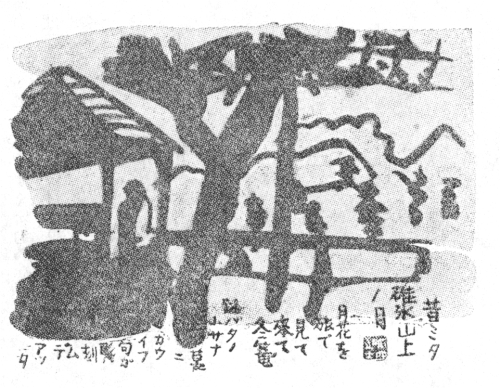
芥川のことはさておき、「詩と音樂」に私の拙い詩をのせてくだすつた、北原さんの自畫像に、私はすこし感慨があつた。昔、白衣（芥川龍之介の肖像）を出品してる二科會の會場で、そのころはまだ松葉杖で歩いてゐた私は、芥川に紹介されて、北原さんにいろいろ話しかけられても、松葉杖で歩く努力の疲れでろくろく御返事もできなかつたのだ。まつくろでまる顏の、北原さんのやさしい目を思ひだして、もう一度、お目にかかつておくべきであつたと悔んだのである。
（昭和二十三年）
註「白衣」芥川は、白衣といふ畫題をつけて、びやくと讀まないで、はくいと讀んでくれたまへ、處士といふ意味があるのだといつてゐた。
［＃改ページ］昭和二年九月號の文藝春秋、芥川龍之介追悼號に、内田魯庵さんの「れげんだ・おうれあ」といふ、芥川の奇才を後世に傳へる話が掲載されてゐるが、昭和二年九月號の文藝春秋は、今日手にはいりにくいであらう。
芥川はでつちあげたでたらめの切支丹版でお歴々の人達を迷はした愉快を、微笑をもつて私に語つた。英雄人を欺くかと答へたら、鸚鵡がへしに、英雄人を欺くかといつて笑つてゐた。私まで愉快になつてゐたものである。
（内田さんにだした芥川の返書があるであらうと、書翰集を調べたら、殘念だが、内田さん宛てのものは一通もみあたらない。）
芥川が生きてゐて、英雄人を欺くかと笑へるうちはよかつたが、死後にその生前に貰つてゐた、新羅山人題畫詩集と甌香館集（甌香館集は憚南田の詩集、掃葉山房出版のもの）をひもどいてゐて、甌香館集のなかの補遺畫跋のなかに、記秋山圖始末があるのを發見して、「秋山圖」の出處を知つたときには、芥川のやうな學問のある人に死なれてしまつたことが悲しくなつてしまつた。私は學校に行つてゐない。學問はしてゐない。私は、私の周圍には、この南田の記秋山圖始末を簡單にすらすら讀んでくれる人が、もうでてはこないであらうと思つたものだ。讀者の幾人かは、支那歴代の詩を直接には讀めないので、佐藤さんの譯詩によつて、その妙を知るのであらうが、私は讀めない南田の記秋山圖始末を、芥川の「秋山圖」で説明して貰つてゐる始末だ。
賣れるとみえて、出版界が不況になつてから、あちこちから芥川本が賣出されてゐる。芥川は小説にされ、その作品の「羅生門」（實は藪の中）は映畫にもなつた。私は廣津和郎さんの「あの時代」（群像新年號）「彼女」（小説新潮三月號）を讀んでゐる。どちらも氣力がみちてゐて、芥川をくもりなく寫してゐるのはこころよかつた。廣津さんのそれらが發表されてゐた當時、用があつて時どき瀧井孝作君が家に立寄つてゐたので、瀧井君とのあひだがらから、廣津さんのその小説にからまつて一寸芥川の話もでて「彼女」について、だが皮肉だねえ、内田巖のさしゑは廣津和郎に似てゐるが、立つてゐる女の背景の店屋に、本人が知つててしたことかどうか女の名が書いてあるだらう、といつたら、瀧井君が、いや、知つてゐるだらうといつてたことやら、また、新潮十月號に芥川龍之介傳を書くといはれて村松さんの來訪があつたなどで、芥川を想ふことも多かつたせゐか、週刊朝日の新映畫羅生門の紹介を讀んでゐて、（同誌九月十七日號の新映畫評ではない。）「藪の中」は芥川みづから彼自身のこころの姿を寫したものだといふ斷定が口にでた。芥川が死んでもう二十四年目の今日になつて、やうやく私はそれに氣がついたらしい。
「藪の中」（三十歳、大正十年十二月作、翌十一年一月新潮に發表）は、芥川みづからこころの姿を寫したものだといふ今日の私の説をなす誘因の一つとして、私には廣津さんの「彼女」は大きく強かつた。私は大正十年の晩秋、湯河原中西屋での夜のこと、同十二年の夏、鎌倉平野屋でのこと、同十五年四月十五日、ことを七年前の情事に歸して自殺の決意をのべてから昭和二年の死にいたるまでのこと、それよりも、當時の彼にそのやうな苦悶があらうとは知らず、藪の中がつくられる誘因を、なにも知らずに彼に與へてゐた私自身の姿を顧みてゐるのである。
「藪の中」は、まさしくその頃の芥川のこころのなかを、さりげなくひとごとのやうに描いてゐる悲痛な作品と思はれる。
大正十年の晩秋、湯河原中西屋での夜のことといふのは、（私は昭和十五年に中央公論社から「鯨のお詣り」といふ隨筆集をだして貰つたが、これはその以前に中央公論に掲載した「二つの繪」を主としてこしらへたものである。「二つの繪」は芥川を語る氣のふさがるものであり、舌たらずのものであるから、本は手もとにあつても、今日にいたるまで改めて讀みなほしてみることはなかつた。ところがいま目をとほしてみて驚いたことには、八二頁六行目に大正十四年十月四日となつてゐる。十年が正確なので大事であるからここに訂正をしておく。なほ、その時の紀行はすぐに、藤森淳三といふ人が編輯をしてゐた中央美術に掲載された。自他憂鬱になるものではないので、まだほかのものと手もとにありながら、どうしてこれを「鯨のお詣り」のときにださなかつたのかと思つてゐる。）芥川に招ばれて、私と小澤碧童（故人）とは、十年十月四日五日六日の三日三晩、首相加藤友三郎が泊つてゐたといふ部屋をあてがはれてゐたのであるが、夜のひと時はこの部屋に、彼も南部修太郎（故人）も集つて、互ひの歌や俳句を披露しあつてゐた。芥川に、山に雲下りゐ赤らみ垂るる柿の葉などの句があり、南部には、落葉ふみやがて出でたる川べりの藻の花白き秋の午後かななどの歌があつた。芥川の句は當時、折柴瀧井孝作の影響から碧童の影響に轉じつつあつた。
最後の日の晩にちがひない。自分の仕事の價値について後世を待つとか待たぬとかで、彼と碧童との間の議論になつた。四人のうち酒飮は碧童だけで、碧童を碧童としてただ飮ませておけばよいものを、芥川は彼に似げなくからむやうに、後世などは信じないといひ張つてゐた。南部も微笑をふくんでこれまた後世を信じないといつてゐたが、傍觀してゐて、碧童がやりこめられてゐるのもをかしかつたが、南部修太郎までも後世を信じないと力むでゐるのがをかしかつた。座がしらけていらだたしさうな芥川が、無言で謎のやうに私に畫いてみせてゐた繪が、嘗て私が「二つの繪」を書いたときに
んだ、三日月をはねとばしさうに荒狂つてゐる海の岩の上に膝を抱へてかがまつてゐる、巨大な耳を張つてうちしをれてゐる、髮のながい頭をたれてゐる怪物の繪である。芥川は三月渡支、八月田端に歸る。十月湯河原。私はその繪でなにかぼんやり彼にこころのうつたへがあることだけを感じてゐた。そのことである。後年、支那旅行中にも幾度か死をねがつてゐたといふ彼の告白がある。遺稿「或阿呆の一生」二十二を參照して頂きたい。幼少の時に母をなくしてゐる私には、その母よりも芥川のはうがなつかしい。「藪の中」は十年十二月に書かれてゐる。「藪の中」は、私が或雜誌で讀んだ、或國の王樣が自分の妃のうつくしさをいつて畫家に妃を畫かせる。王妃と畫家との間には情交が生じて、王妃が畫家に、王を殺すかお前が死ぬかどちらかをえらべと迫る話の筋を話したら、芥川にその雜誌をみたいといはれて、それを屆けたぢきあとにできたので、小説家といふものは巧いものだと、そんなことばかりで感心してゐた作品だ。（雜誌は「思想」であつたと思ひこんでゐたので、三十年前の「思想」を岩波書店の岡山君に調べて貰ふと、「思想」は大正十年［＃「大正十年」は底本では「大年十年」］の十月に創刊號がでて、十二月號までには三册、そのどれにもさういふ話は掲載されてはゐないといふ次第であつた。なほ、もし和辻哲郎さんが書いたものであつたとしたら、和辻さんに聞いてみようと中央公論社の南君はいつてゐた。）芥川が死んでから二十四年。死人に口なしである。讀者に、もう一度「或阿呆の一生」をひもどいて、その二十一に目をとどめて貰はなければならない。
私は解説まがひのものを書いてゐて思ひだしたのである。
大正十五年に鵠沼で芥川は、「自分が死んだあと、よくせきのことがあつたら、これをあけてくれたまへ」といつて白封筒のものを渡したことがあつた。私は内をみたら或は彼に自殺を思ひとどまらせる手がかりでもあらうかと、芥川夫人に示してそれをひそかに開封してみた。するとなかみはただ、自分は南部修太郎と一人の女を自分自身では全くその事を知らずに共有してゐた。それを恥ぢて死ぬ。とだけのたつた數十字のものであつた。
（私にさういふものを渡してゐた彼に、彼の死後、私がなにか世間から困らされてはといふ懸念からのいたはりのこころづかひがあつたことを感じる。）なぜ、彼はその時にもう一人の名をも書けなかつたか。（「鯨のお詣り」一〇〇頁一〇一頁參照。廣津さんの「あの時代」參照。）
私はいま小さい行李からまた一通の白封筒を發見した。なかみは赤門前の松屋の半きれの原稿用紙五枚のものである。私はこの白封筒が、どうしてまた私のところにあつたのかと、ふしぎに思つたほど驚いてゐるのである。
私は忘れてゐたものを二十四年目にみた。私はここに彼のその全文を紹介することとし（某の一字だけ伏字）なほのこりの下書はひとまづ破棄しておくこととする。一つの藪の中をでて、また別の藪の中に人々を誘ふがためにこれを書いてゐるのでないから。
僕等人間は一事件の爲に容易に自殺などするものではない。僕は過去の生活の總決算の爲に自殺するのである。しかしその中でも大事件だつたのは僕が二十九歳の時に某夫人と罪を犯したことである。僕は罪を犯かしたことに良心の呵責は感じてゐない。唯相手を選ばなかつた爲に（某夫人の利己主義や動物的本能は實に甚しいものである。）僕の生存に不利を生じたことを少からず後悔してゐる。なほ又僕と戀愛關係に落ちた女性は某夫人ばかりではない。しかし僕は三十歳以後に新たに情人をつくつたことはなかつた。これも道徳的につくらなかつたのではない。唯情人をつくることの利害を計算した爲である。（しかし戀愛を感じなかつた譯ではない。僕はその時に「越し人」「相聞」等の抒情詩を作り、深入りしない前に脱却した。）僕は勿論死にたくない。しかし生きてゐるのも苦痛である。他人は父母妻子もあるのに自殺する阿呆を笑ふかも知れない。が、僕は一人ならば或は自殺しないであらう。僕は養家に人となり、我儘らしい我儘を言つたことはなかつた。（と言ふよりも寧ろ言ひ得なかつたのである）僕はこの養父母に對する「孝行に似たものも」後悔してゐる。しかしこれも僕にとつてはどうすることも出來なかつたのである。今、僕が自殺するのも一生に一度の我儘かも知れない。僕もあらゆる青年のやうにいろいろ夢を見たことがあつた。けれども今になつて見ると、畢竟氣違の子だつたのであらう。僕は現在は僕自身には勿論、あらゆるものに嫌惡を感じてゐる。
芥川龍之介
Ｐ・Ｓ・僕は支那へ旅行するのを機會にやつと夫人の手を脱した。（僕は洛陽の客棧にストリンドベリイの「痴人の懺悔」を讀み、彼も亦僕のやうに情人に嘘を書いてゐるのを知り、苦笑したことを覺えてゐる。）その後は一指も觸れたことはない。が、執拗に追ひかけられるのは常に迷惑を感じてゐた。僕は僕を愛しても、僕を苦しめなかつた女神たちに（但しこの「たち」は二人以上の意である。僕はそれほどドン・ジュアンではない。）衷心の感謝を感じてゐる。
附言
映畫羅生門についても書かうと思つてはゐた。この八月二十一日、明日は野尻に立つ支度をしてゐたら、大映宣傳部の人見氏の來訪があつた。人見氏は羅生門が完成したので、二十四日に試寫があり、試寫のあとに座談會をやつて、その座談會の記事を二十五日の讀賣に掲載して、二十六日一般公開といふことになつてゐるから出席してくれろといふ活動屋さんらしい用件できたのだ。出席者の人選は讀賣とかで、顏ぶれはお年寄では（これは向うがいふのである）佐佐木茂索に私、若い人では井上友一郎、丹羽文雄（もう一人は忘れた）の五人といふことであつたが、私はその座談會のために、坪田讓治との約束を破つて野尻行をのばすこともできないので人見氏に、出席はできないが黒澤氏に、もし黒澤氏が、藪の中は、芥川龍之介みづからがこころの姿を、人ごとのやうに寫してゐた作品だといふことを知つてゐたら、映畫に扱ふ場合にも、また別な角度があつたらうし、また、それを知つてゐるとゐないでは、大變なちがひであることを傳へておいてくれとたのんだ。顏見知りである井上君にも、「藪の中」についての私の考へを、直接にのべられぬのは殘念に思つてゐるといつてゐたと、傳へてくれるやうたのんでおいた。
野尻から歸つた私は早速映畫の羅生門をみた。私は強引にも「藪の中」と取組んだ黒澤氏の勇氣に一應は敬服してゐる。しかし私の殘念さには依然として變りはない。
私は黒澤氏の力でもう一度「藪の中」と取組んで貰ひたいのである。
（昭和二十五年）
（私のこの「藪の中について」を讀んで瀧井君は、二十六年一月號の改造に「純潔」を載せた。この瀧井君の「藪の中」についての話で、私は知らなかつたことを教へて貰つた。）
［＃改ページ］
去年の五月八日、佐佐木茂索君は、――突然ですが田端に澄江堂句碑を建てたいと思つてゐます。實地を檢分しないと、建つか建たぬか分らないが、土地の都合がよければ建てる氣でゐます。大體の小生の腹案は、表面に例の水涕やの句を故人の文字のまま彫りつけ、裏に佐藤春夫に何か書いて貰ひたいと思つてゐます。そして全體の形とか何とかは、大兄に考案して欲しいと思つてゐるのです。本來なら、實地を檢分して、可能性を確めてから、大兄その他と十分相談してきめるべきが順と思ひますが、出來れば七月二十四日に除幕式をやりたいくらゐの急いだ氣もちでゐるので、一應右の腹案を申上げ、何か考へておいて欲しいと思つてゐる次第です。終焉の地といふのを今のうちに、はつきりさせておくのは必ずしも無意義でないと考へてゐる次第です――といふ手紙をぼくに書いてゐた。
手紙をもらつて僕は、佐佐木君が僕を忘れないでくれてたのはうれしかつたが、芥川が僕に繰返し注文してた墓の形、家人にあてた遺書のなかにも圖まで畫いてゐたその形と、染井の墓との相違など、あれこれにこだはりながら向島に行つて、三圍神社の境内や百花園にある、それぞれの碑の形などを見て歩いてゐたが、その後佐佐木君から音沙汰はなく、七月二十四日もすぎて殘暑のころであつたであらう。たまたま、岩波映畫製作所で、比呂志、也寸志の兩君と顏を合はせて、そのときに比呂志君から、現在の借地人である人には理解があり、碑を建てる餘地はあると聞いた。比呂志君からはさうは聞いたが、先決問題と考へる地主さんのはうの意向は、依然としてどこからも耳にはいつてはこなかつた。
芥川の句碑の話は、比呂志君と會つたその前と思ふが、文藝春秋の俳句會の席で、佐佐木君から田端の家の燒跡はどうなつてゐるか、碑を建てる地面があるか、ないかと、話がでたときに、久保田万太郎さん、瀧井孝作君、僕も皆、實地を檢分しないでて、無いであらうといふ説に傾いたが、それからおのづと跡絶えてしまつてゐたやうすである。
話は跡絶えてた、跡絶えさせたのは、ぼくたち老人どもが想像に安んじてて、一應現場を見てみることをしないでゐたからだが、人を責めるのでなく、人に詫びなければならないのはどうやら僕自身のやうに思ふ。
僕はさいきん、芥川の家の燒跡にはじめて行つてみた。それは句碑のためではなく、芥川が自決の前に、行先を言はずに僕を連れだして、實家の墓に詣うでたその足で「或阿呆の一生」のなかにでてくる、淺草の女性にも告別に行つてゐる、その教へられた谷中の天王寺墓地のところは、美術館からは遠くもなし、田端、日暮里と、省線ですむところなので谷中のついでに田端の跡を見たといふ次第であつたが、燒跡に立つて僕は、芥川の家の門をあけてはいつてゐるやうな氣がしてゐた。かつて、芥川の家の門のあつたところの垣の破れからはいつたが、建物が消えてみると思ひのほかに廣かつた地面に、母屋についてゐた蹲と履脱が、まるで留守番してた恰好で、昔のままでゐたといふやうにあつた。高サ三一吋半ほどの蹲には、梯子や戸板の如きものが三方からたてかけたままになつてゐたので、それが留守番が子供達に頭や肩にとつつかれて留守番してゐたといふやうに思へた。僕は、芥川のところにはいつた強盜が、二十圓をとつて逃げるときに、蹲で向脛を疵つけたといふことなどを思ひ出しながら早く實地檢分をしないでゐたことを、だれにとなく申譯なく思ひ、外遊中の佐佐木君が歸國するまで、だれも手をつけずに現在のままにしておいて欲しいと急いだ氣もちになつた。
田端驛の裏出口をでて、小さい階段をのぼるときに、芥川に自決のこころを打明けられた後で、君も鵠沼にきてくれで鵠沼にゆき、鵠沼を引きあげると、またそばにゐてくれで、田端にゐた懷舊にふけるよりも、窪川鶴次郎君を考へて羞づかしかつた。窪川君は顏を知つてゐても附合ひはなかつたが、空襲中隻脚義足の僕に、芥川の家の前を通つてては、度々樣子を書いて知らせてくれてゐた。
終戰の四年目と思ふ。用があつて鵠沼に、芥川の奧さんを訪ねたが、奧さんに停留所まで送られて歸るときに、昔僕たちがゐた家のはうの路をまはつてみて、芥川が「河童」に手をつけてゐた家の前を通り、芥川が「蔦うるしからまる松の」といつた松、この隣りとの地境にあつた松の木を背にして左手を腰にして立つてゐる寫眞は人々の目になにかで觸れてゐる。僕が毎朝焚付けに拾つてゐた松ぼくりの松、さういつた松の木は伐りとられてゐて昔の樣はなかつたが、その家の玄關にかかるあたりは奧さんにいはれるまでもなく、二十年前の有樣であつたのが懷しかつた。
僕はそこをだれかに寫眞に撮つておいてもらはうと思つてゐながら、實行に移さないでゐた後悔があるので、田端の跡を見たら今度はすぐに、寫眞の撮れる田中君を連れて行つて、いろいろ寫しておいてもらつた。
田端の芥川を偲ぶには、佐藤春夫さんが改造に芥川を書いて得た稿料で、昭和四年に百五十部を刷つて知友の間に配つた「おもかげ」が一番だが、そのなかの二十二にでてゐる、室生犀生さんが贈つた蹲は、（書齋の新築祝ひに贈られた物、その新築の書齋で遂に自決してゐた。）火を被つてもゐたらうし、小さいから動かせもしたとみえて見あたらずにさびしかつたし、二十三の「彼の家に行く路」と解説されてでてゐるはうの路は、寫した人が立つたところあたりは、いまではコンクリートの廣い道路のなかの位置で、昔は松葉杖でのぼれた斜面が、今日、義足で歩き慣れてても一寸、昇降にはこはい手摺りのついた急勾配の階段になつてゐた。せいぜい二間幅であつた路は、コンクリートの大通りとなつてゐるばかりか、その道の上には橋がかかつてゐて、橋の柱には童橋（わらべはし）と刻まれてあつた。ここに、はなはだ愉快に堪へないのはと書けば、芥川の口吻であるが、ぼくはだれか河童橋とつけたかつたのを遠慮して童橋としたのではないかと一寸邪推した。
芥川とお隣りの香取秀眞さんの境に殘つてゐる竹は、昔の竹の根のものであらう。僕は昔の位置にあつた蹲と履脱を動さずに、句碑にしろなににしろは室生さんが贈つた蹲のあつたところに建て、燒けた土を芥川の家の庭の土であつたやうにしたならば、そのほかになにも考案することはなからうと思つた。僕は確か數へ歳四つであつたやつちやん（也寸志君）が、庭に澤山ゐた小さい蛙の眞似をしてゐた姿を思ひだし、一體芥川のところの庭には、いつの夏にもあんな小さい蛙がゐたものかなど思つたり、早く佐佐木君が歸つてきてくれて、地主さんにも賛成してもらつて、話がつく日を待つてゐる次第だ。最初のときは雨戸を締めて留守のやうであり、二度目は女中さん一人の留守番で、現在の借地人のはうの家の人にも會へなかつたが、家を建ててゐる位置にもどうやら、芥川の家跡といふ氣の配りがあるとぼくはみた。
二十八年の五月に、東京新聞に書いてゐたこの隨筆をみた地主さんが早速に使を僕によこした。僕はそれで地主さんにも會つたが、地主さんの話では、丁度佐佐木君が、句碑を建てたいと思つてゐますと手紙を書いてゐた頃に、前の地主さんから土地を讓りうけてゐたやうで、三百六十坪あるといふ地面は、もう、三つに區分されてゐた。間には仕切もなにもない空地をみて僕は糠よろこびをしてゐたのだ。二人の借地人の一人のはうは金庫から金を借りるので、數日のうちには普請にかからなければならず、蹲と履脱の仕末をつけなければ、家を建てるのにも困るので、石が入用なら僕にくれるが、自分は、家がほかにもあるから、なんなら、この家と土地を買つてくれといふ話で、話が暗くなつた。
蹲と履脱を動かせば、もう僕には親しめない地面になつてしまふ。芥川の家に出入りした人達でも、ならば、門のあつた場所か、そとまはりの垣根の場所の地面をすこしといふところで、馴染もない勝手口のあつたはうの地面に、餘分の家まで買ふ無理な騷ぎまでは考へないと思ふ。僕の家は街なかの家で、庭といふものはないが、蹲と履脱を貰つて、トラックで運ばせようと考へ、三度目に、火をくつてゐる御影石は、そのままにしておけばよいが、動かせば形もくづれて結局自分も仕末に困るのではないかと、惜しかつたが貰ふのはやめてしまつた。
（昭和二十九年二月五日追記）
［＃改ページ］私のところにある芥川さんの本は、芥川さんから貰つたり、本屋さんから貰つたりしたものばかりで、買つたといふのは、大正六年に、阿蘭陀書房が出版した、羅生門の一册、それきりです。芥川さんの本は、いろいろな形で、あちこちから、隨分と出てゐて、私のところにあるのだけでも、積重ねれば、背丈を越えてゐます。が、そのなかで、私は羅生門が、――大道の古本屋にあつたのを、三十年の昔、五十錢で買つたこの羅生門の一册が、そのなかのどれよりも、一番なつかしいのです。
今日、芥川さんの本として、珍重すべき點から申しますと、同十四年に、新潮社が出版した、現代小説全集の第一卷である、芥川龍之介集を、あげなければならぬのかもしれません。これには、お時儀のところですが、五百八十三頁の第一行、お孃さんは十六か十七であらう。いつも銀鼠の帽子をかぶつてゐる。のところの、いつもの次ぎに、銀鼠の外套に、の六字、十四行目、もし鎭守府司令長官も頓死か何か遂げたとすればこの場合は、の、ばとこの間に、ダッシュを、芥川さんの手で、書きいれてあります。大正十五年四月十五日に、自決すると私に告げた、後のことでありますが、芥川さんが私のゐたアパートにきて、部屋にはいるなり、君、龍之介集を一寸といふので、とりだして渡すと、ペンをとつて、この書きこみをして、全集のときに訂正を、といつてゐたものです。それで、本來ならば、今日、この本のはうが、羅生門よりは芥川さんを身近かにかんじられさうなものなのですが、中扉に、君看ずや雙眼の色、語らずして愁ひ無きに似たり、次の紙には、夏目漱石先生の靈前に獻ずと刷つてある、阿蘭陀書房版の羅生門のはうが、私には、芥川さんの呼吸を身近かにかんじられてなつかしいのです。
一昨年の秋、私はたまたま昔の阿蘭陀書房、即ち今日のアルスの北原鐵雄さんに、あなたはうちで出した芥川のものを持つてゐるさうですねえ、といはれて、その北原さんに、羅生門を出されたのは、あなたのおいくつのときでしたと申しましたが、北原さんの年齡、それは必ずしも羅生門のためばかりのわけではなく、芥川さんの始めと終りの二度、芥川さんが生涯で一番元氣であつた時と、おそらくはその中間を空白でゐて、また、一番へこたれてしまつてゐた時とに會つてゐる、北原さんのまはりあはせを承知してゐて、その年齡をたづねたのですが、それはそれとしておきまして、北原さんのさつぱりとした昔話は、少くとも、羅生門出版の由來については、淡々として話をされてゐたが、その因縁は全くもつて初耳のことでありましたから、今日はそれを一寸、みなさんに、お傳へ致しておかうと思ひます。
芥川さんの處女出版、羅生門は、芥川さんが數へ年二十六の時のものであります。北原さんは、その時二十七であつたさうです。北原さんの話では、私はそのときまで、芥川といふ名さへ知らなかつたものです。私は與謝野鐵幹から、今度、芥川といふめづらしい小説を書く男がでた。是非その男の本を出すやうにといふ手紙を貰つて、その鐵幹の手紙で田端に行つて芥川に會つたものですといふ、まことにあつけない話でありますが、鐵幹與謝野
羅生門についての、北原さんのあつけないこの話は、芥川さんの現はれかたが、如何にめざましくあつたかといふことの説明にもなりませうが、なほつけ加へて申述べますと、私は北原さんが鐵幹の手紙で芥川さんを田端に訪ねたといふことを聞いて、ひそかに、鐵幹の手紙ならば、それは、スゴかつたらうといふ、面白さをかんじたのであります。と申しますのは、私は以前、伊上凡骨といふ奇骨ある彫師、木版のです。その凡骨の伜に、輿謝野先生はこれこれしかじかの事をされたといふが、それは本當の事でせうかと、その眞僞を正されたことがあるからであります。事の眞僞は、鐵幹その人に全く會つたこともない私には、答へやうのない意外な話であつたのですが、凡骨の伜は、輿謝野さんが、若い時に所謂志士としてあるところで活躍したその昔話を、凡骨に聞かせた、聞かされた父の凡骨がまた家の者にそれを傳へたのを、こどもの時に小耳にしてゐたが、後に輿謝野さんに接してみると、その面差からは、輿謝野さんが左樣なはげしい眞似をされたとは思はれぬのがふしぎで、私にたづねてゐたものです。ともあれ、鐵幹輿謝野寛が、たのまれもせぬであらうに、芥川さんの小説本を出版するやう、北原さんに手紙を書いてゐたといふことは、大層面白いことでありませう。輿謝野一派の雜誌であつた「明星」の表紙の文字は伊上凡骨の彫りと思つてをりますが、この凡骨には、私も芥川さんのものの本のときには、厄介をかけてをりましたものです。
今日の話はこの邊で終りますが、夏目漱石先生の靈前に獻じたその最初の本の羅生門の扉に、君看ずや雙眼の色、語らずして愁ひ無きに似たりといふことばをはさみ、さうして、漱石先生の書いた風月相知るの額を座敷にかかげてゐた、數へ歳二十六の芥川さん、三十六歳で漱石先生のその風月相知るの額の前にうなだれて自決を告白するあはれさのなかにも、なほ、恥ぢるのは、夏目先生に對してだけであるといつてゐた芥川さんの面目を知つてゐて、その作品を讀まれたいと思ひます。
阿蘭陀書房版の羅生門には、無限のなつかしさがあるのであります。
（ラジオ東京にて）
［＃改ページ］昭和二年、久米正雄が製作した映畫のなかに、死ぬ前の芥川龍之介のものがある。それを、當時のものは一秒に十六コマであるが、今日のものは二十四コマと教はり、芥川龍之介の死後、田端の芥川の家で大勢の人達といつしよに見た時から數へると、二十六年ぶりになるが、思ひがけず岩波映畫製作所で再び見る機會を得た。岩波書店では、その映畫に登場してゐた時には、數へ歳八つと三つの比呂志、也寸志の兩君、それに行年何歳かであつた僕との三人に、昔の古いフィルムを寫してみせ、その見てゐるところを撮影して、短かすぎるフィルムに後をつけてのばしたものを作り、地方の講演會に使ふものの一つにしようといふのであつたが、芥川龍之介が映つてゐるフィルムといふのは、「パパ木登りをしよう」「小穴君たまにはトランプもいいね」のほんの僅か二た場面のものである。
映畫に現はれる芥川は、誰れもがなつかしむ、颯爽たるおもかげはみせずに、世にも悲しい顏で出てくるのを豫かじめ覺悟でゐたが、「パパ木登りをしよう」といふ、覺えのなかつた傍若無人のその字幕には、僕は驚きもし、不服であり、得心できないことであつたから、その場で、芥川のところでは、當時、養父も養母も、伯母さんも、僕ちやん（比呂志君）までも、芥川を“龍ちやん”といつてゐたもので、芥川家はパパ、ママなどといふハイカラさの無い家であつたのだから、字幕は改むべきであると指摘して、比呂志君の同感を得たが、岩波の人は、龍ちやんではいまの人には通じないといつてゐるだけであつた。僕は暑さと不愉快で、映畫には、岩波のＫ氏の解説が録音されると聞いてゐたことも忘れて、そのときは、さうか、やんぬるかなで歸つてきてたが、その七月十三日からは、パパと龍ちやんが、頭のなかにくすぶつてて困つてゐるのである。
僕は今日でも、字幕のパパを龍ちやんに改めるか改めないかは、岩波書店が、記録映畫として持つてゆくか、それとも商業映畫に墮して持つてゆくかの境だと思つてゐる。龍ちやんとパパとの相違が、存外いまの人にすぐ通じて、芥川龍之介全集の本家の、岩波の人には通じないのだとも疑つてゐる。
（昭和二十七年）
［＃改ページ］大正十二年の夏を鎌倉の平野屋ですごしてゐたときに、離座敷にゐた岡本かの子に、芥川さんと何何さんとは關係がありはしませんか、わたしは芥川さんに會ひたくて、前に何何さんに紹介してとたのんだのですが、何何さんは、芥川さんはわたしの紹介がなければ、女の人には會はないといつてました、何何さんがさういふことをいつてるところをみると、わたしには、確かに關係があると思はれます、と、かの子のねばり強さで詮議をされたときには困つたが、「芥川龍之介」が文學界に載りはじめたときに、宇野さんの文章で、芥川の「早業」が書かれてゐるのをみたときも困つた。宇野浩二の奴、困つた奴だと思ひながら續きをつづけて讀んでゐるうちに、話はいつか芥川の作品についての感想批評に移つてゐた。それが僕のやうに、芥川の書いたものに對して、批評ぬきであつたものには、いい手引になつた。いちいちもつともと頭をさげた。
が、生徒といふものは、教師の顏をみながら、えてしてくだらぬことを考へてゐるもののやうで僕もまたその例にもれない。
宇野さんは、芥川の木のぼりの映畫を、（さて、映畫が開始されると、すぐこの陰氣な暗い風景があらはれ、「おや」と思つてゐる間もなく、平屋の家の屋根の上に、頭から、肩から、しだいに姿をあらはしたのが芥川だ。やがて屋根の上に全身をあらはした芥川は「ぱつと兩手を左右に開いたかと思ふと、目にもとまらぬ早さで、枯木のやうな樹木の枝に飛びつき、兩手で枝をにぎると殆んど同時に飛鳥のごとく、股をひらひて、木の股に兩足をかけた」と説明してゐるが、芥川は下からのぼり、樹の枝をつたはつていつて手摺を跨いで、二階の部屋にはいつてゐるのだ。大體氣味のわるい、さうして、一秒に十六コマといふ動作がぎくしやく映る昔のフィルムだから、みる人に錯覺をおこさせる代物だが、宇野さんの頭にもさう逆に映つてゐたのが面白かつた。その映畫のフィルムは芥川の家に保存されてゐるであらうし、岩波書店にもあつて、僕は田端でみてから廿六年ぶりで去年また岩波でみせてもらつてゐる。
宇野さんとは、「秋山圖」の趣向をとつた本は、芥川が僕にくれた甌香館集の補遺畫跋のなかにある記秋山圖始末であらうことや、「馬の脚」について當時の、いろいろのながい話と事情などを話合つてみたいと思つてゐるが、芥川に紹介され、瀧井君に紹介されてゐても、どういふものか、宇野さんとはまだいつもお互にお時儀だけに終つてしまつてゐる。
芥川が、宇野がといつて、宇野さんの話をするときの、宇野がといふことばの調子には宇野さんに對する愛情があつたものだ。宇野さんも「芥川龍之介」のあとがきを、涙をこぼしこぼし書いてゐたことであらうと思つてゐる。
（昭和二十八年六月）
［＃改ページ］芥川は大正十五年四月十五日の夜、「かういふことをいつていいものだらうか」「人にかういふこといふべきものではない。が、いつていいだらうか」「かういふことは友達にもいふべきことではない、が、友達として君は聞いてくれるか」といつて自決することを僕にうちあけた。このことは、同十年の晩秋湯河原の中西屋における一夜、同十四年は八月から九月にかけて輕井澤のつるやでみせてゐたその素振りからいつても、僕を不意に狼狽させたとはいへないのだが、芥川が芥川の口ではつきり自決するといつた以上、それはもう一人の力ではどうすることもできないことを、僕は改めて覺悟しなければならなかつた。僕は僕のいふことに耳をかして、芥川の死をくひとめにかかつてくれる人を、菊池寛、山本實彦、佐藤春夫と考へてみた。しかし僕は、僕がもしもこれらのなかの誰かに會つて話をし、その誰かが芥川になにかいふその場合は、それはかへつて芥川の自決をはやめる結果になることを思はざるをえなかつた。
誰にもいへず、ただ一人でどうしたらば芥川に一日でもながく生きてゐてもらへるかと思案にくれはててしまつてゐる、さういふところに、〔これは僕の家内の叔父にして兼ねて僕の中學以來の友だちなり、御引見下さらば幸甚、小穴君、龍之介〕と書添へてもらつた名刺を持つて山本（喜譽司）さんが訪ねてきた。山本さんは、なんですか芥川が死にたいといつてゐますが、といふのだが、僕も山本さんもただ同じやうに困つたといふ感情だけで、しばらく向ひあつてゐたままでわかれて三十年の今日に至つてゐる。（私は向ふへ行かなければならないので、あとのことはなにぶんお願ひ致します、といつてブラジルに行つてしまつた山本さんの名刺の裏には、八月二十七日出發、と書いてあり、鵠沼に移つてゐた芥川のスクキテクレアクタカワの電報の日附印は七月十二日である。）どこか恒藤（恭）さんの靜かさがある人と思つてゐる、その山本さんに、僕は今度といふ今度は、はじめて手紙を書かなければならなくなつた。僕の手紙の内容は、
芥川家では芥川の死後家ダニをわかしてゐる。家ダニは不埒にも、芥川家が受取る印税の三分の一を芥川家からとりつづけながら、そのうえに、全集の編集にいやがらせをし、且つ妨害を加へてゐる。すでに寫眞の類、一卷分になるノートの類を持去つてゐるので、岩波は二十卷と預告はしたが、十九卷で終るのやむをえざる状態である。岩波は奧さん（芥川夫人）さへしつかりして下されば、この際、なんとしてでも家ダニが持去つたものを取りかへして、芥川家のものとしてあげたいといつてゐるが、奧さんの態度がしつかりしないかぎり、これは如何ともできない。恐らく、家ダニはあと一、二年で版權がきれるその時を待つてゐるのであらう、あなたが持つてゐる芥川の寫眞や手紙を岩波に貸していただきたい。僕の現在の氣もちは、三十年前にあなたと會つたときと同じさまです。
といふのだ。
家ダニは筑摩書房の文學アルバムの芥川龍之介（二十九年十二月發行）の編集にことよせて、芥川家から芥川の寫眞を皆持去つたままで返さずにゐる。これで岩波は口繪寫眞を探すのに困つた。また抑へてゐる一卷分になるノートの類は、それを提出しないばかりではなく、その一部椒圖志異（三十年六月ひまわり社發行）を、禁轉載と掲げて出版し得意顏でゐる。このことは、奧さん（芥川夫人）には、岩波の全集には掲載を禁ず、と、ことわりがきをつけると揚言してゐた振舞であり、僕らに對してはこざかしい挑戰である。
僕は昭和七年十二月號、八年一月號の中央公論に「二つの繪」なるものを覺悟の上で發表して人々の憤慨を買つた。これは當時の記者、今日の社會黨の代議士佐藤觀次郎君がつけた「芥川龍之介自殺の眞相」といふサブ・タイトルがいまだに利用されて、なにかといふと、坊間の解説家たちに字數を稼がせてゐるたねであるが、人々は、當時、僕が單なる僕のメモにすぎない原稿を觀次郎君に渡すときに、これは修身ともいふべきものだ、といつて渡してあることを知らないのだ。もし幸ひに今日この「奇怪な家ダニ」が觀次郎君の目に觸れるならば、觀次郎君には僕がいつてゐた、修身といふことばの意味がはじめて了解できると思ふ。
「二つの繪」は、前がきに□□□を食べ云々と書いたが、その食べた人達の無慙さに對しての憤りや、誰にも親しまれてゐた人間が、芥川が死ぬと、たちまちにして芥川家にうまれた家ダニの卵になつてゐるのをみてゐる不快さなどによつて書いてゐたのだ。
僕は腹をすゑてブラジルの山本さんに、芥川家では、芥川の死後家ダニをわかしてゐると書いて送つた。（家ダニは芥川家の人達が「姉と弟とは義絶をしろ、義敏には三年間生活をみてやれ」といふ芥川の遺書を忘れてゐるうちにわいた。芥川は人一倍用心ぶかい男ではあつたが、情には脆すぎた。その芥川が、義絶を遺書にしておいたのはよくせきな事情があつた筈である。）僕は旅先に
送されてきた山本さんの謙虚な手紙にガクンとなつた。〔小生と芥川とは中學、高等學校の頃の友達で芥川と私と、そしてもう一人平塚（これは”吾が舊友”と題した雜文中で出て來ます）が中學校で友達で、この三人が各々發狂した母を持つたと言つた奇縁で一つのグループを成してをりまして、この三人の間の話や手紙は鬼氣を帶びてをりました〕（十卷學校友だち二〇七頁參照）といふ。僕は芥川は所詮助からぬ人であつたかと、嘆きをまた新にしたのである。芥川家の家ダニ、その名は葛卷義敏である。
七月の二十四日、日曜日であるにもかかはらず（昭和二年芥川が死んだ七月二十四日もまた日曜日である）、文化部のＫ君がきて、問題は一應社會部で取扱つてから、文化面にまはしたはうがよろしからうといふので、僕はその意見にまかせた。二十五日の朝には、Ｔ新聞社社會部Ｔの名刺を持つたＴ君がきて、Ｔ君の自己紹介によれば、Ｔ君もまた芥川の愛讀者だといふが、刊行中の全集の一册と、筑摩の文學全集に
んであつたといふ月報、社名を書いた大學ノートを持つて僕の前に坐つた。Ｔ君の調べでは、葛卷の母（芥川の姉）は葛卷氏にかたづいて死なれてから、西川氏に嫁ぎ、その西川氏ともまた死にわかれとなつてゐるので、僕は、葛卷の母親は、葛卷氏とは離婚、その後西川氏にかたづいたが、その西川氏が自殺、つづいて芥川の自殺で、それで北海道に行つて、またもとの葛卷氏といつしよになつたので、今日、葛卷氏に死にわかれでもして、鵠沼にゐるのであるかどうかはそれは知らぬ。芥川の實家は、新宿に牧場を持つてゐたので、獸醫の葛卷氏と結婚した次第だが、その葛卷氏は、牧場で牛を購ふその金をごまかしたといふので、離婚になつた人と聞いてゐると、家ダニが自分の系圖まで立派にしてゐるのを感心しながら説明しておいた。それに、吉田精一といふ男は、葛卷の手さきででもあるのか、昔、空谷老人（故下島勳）が何か雜誌で僕をやつつけてゐる、それに返事も書けなかつたではないか、と得意氣に嘲けつてゐるが、芥川の遺書に（十五卷一七七頁參照）〔下島先生と御相談の上自殺とするも可病殺（死）とするも可。〕といふのがあつたから、先生は僕の顏をみるなり、聲をひそめて、私はどちらにでもしますがといつたもので、それをそのままに僕が「二つの繪」に書いた。ところが、醫者が商賣であつた老人のはうの身になつてみれば、たまつたものではなかつたらう、たちまち事實無根と僕に吠えついてゐたので、吉田のやうな先生は困りものだ、それに空谷老人は割合におしやべりで、僕が坪田讓治の「子供の四季」の新聞さしゑで、背景のたねをとりに日野までゆかうと（「虎彦龍彦」の時であつたかも知れない）、荻窪から省線に乘つて吊皮にぶらさがつたら、空谷老人が僕の前に坐つてゐて、いきなり「あなた義ちやんと奧さん（芥川夫人）のこと知つてゐますか」といひだしたので、知つてゐると話をおさへると、「私は奧さんを毆りましたよ」といつた。こちらは野郎昔二枚舌を使ひやがつてたくせにと思つてゐるのに、向ふは何年ぶりかで會つたものだから、昔どほりなつかしがつて、武藏境と高圓寺とでは目の前に住んでゐるもののやうで、泊つてゆけもないものだが、降りて泊つてゆけ泊つてゆけと誘つてゐたものだ。とにかくこの老人の口で、あちこちに流聞が擴がつてゐる。皆がダニをやつつけてしまはうといふ氣は持つてゐながら、話がどうしても芥川家のことに觸れるので困るのだ。が、僕らが合ことばのやうに、芥川家の恥だからいはぬといつてダニに我慢してゐる、これはおそろしいことだとＴ君に教へた。
Ｔ君が誰を先に訪ねませうといふ。僕は、ダニは氣にいらなければ、鵠沼から夜中車でやつてきて土足で家にあがつてくるといふから、（これは奧さんが岩波の人にこぼした話。僕は人傳てにかういつたたぐひの奧さんのこぼし話を聞くたびに、今日になつて人にこぼしてゐるくらゐなら、比呂志君が十九でおとつつあんになつた當時、もう三年分の金をやつて葛卷を追出してしまへといつたときに、なぜ料簡をきめてはくれなかつたのかとつくづく情けなくなる。僕は父から貰つたものがあつたので相當強くいつた。その後奧さんは僕の家にこなくなつてゐる。）所轄の警察に保護願でもだしておいてからにしてほしいが、まづ奧さんを訪ねて、多分病氣といつて逃げるであらうから、比呂志君に會つて、それから葛卷のところにゆくがよからうが、比呂志君は葛卷の異父妹を貰つてゐるからなんだが、也ちやん（也寸志君）は幸になんの關係もないのだから、也ちやんの家だけは騷がしてくれるなといつた。
芥川の愛讀者といふ人達は、どうも氣のやさしい人達のやうであるが、Ｔ君もその仲間か、隨分うろうろしてゐて、やつと八月七日になつて社會面に、「芥川龍之介の遺書モメる、”小穴氏宛のは僞物”故人の甥葛卷氏近く對決か」といふ見出しで記事を載せた。この記事はどうみても葛卷の肩を持つてゐるとしか見えないやうに書いてあつた。だから、葛卷が不審だとか僞物だとかいつてゐる畫を持つ人や、編集に當つてゐた中村（眞一郎）君や、岩波の人達などは皆、Ｔ新聞は何事だと憤慨したものだ。が、圖太い僕は、Ｔ新聞の記事のなかに、Ｔ君の配慮があるのをみてて面白かつた。葛卷はＴ君にはじめ、印税を三分の一とつてゐるのは芥川の遺言があるからだと、比呂志、多加志（多加志君は不幸にもビルマの最後の戰鬪で死んだと傳へられてゐる）、也寸志の三君、その死んだ多加志君を勘定に入れてゐない不埒なことをいひ、そのあとで金を受取つてをらぬと電報で否認（Ｔ君は、社に電報がきてをりますが、なんのことかよくわかりませんといつてゐた）、さらにまた、いままでは受取つてゐたが、今度の全集の金は受取つてをらぬ、はじめ、妹（比呂志君の細君）が持つてきたがそれは返した。そのあと送つてくるからそれは自費出版で出す全集（葛卷編集の芥川全集のこと）の費用にあてるため、別口の預金として積立ててある、と僕らに向つては通用しないことをいつてゐる。藥のききめがあるぞと思つてゐると僕のところにギブツ」ニセモノ」ウタガハシイトイフハズナシ」タダギモントイイ」イワナミアクタガワニシラベタノンダノミ」クヅマキといふウナ電をよこして（九日の晩の十時）たのみもせず、Ｎ君（岩波の人）に、Ｋ（岩波の人）はＴ新聞の者に話を持込んで不都合だとか、中村君に印税はどうしたとか、かうしたとか、見當はづれな、受取つた人には、一切わけのわからぬ手紙ばかりを書いてゐる。
藥のききめは充分らしい。
しかし、葛卷はまた芥川家にのりこんで、土足のままで怒鳴りちらしたことであらう。
葛卷がＴ新聞の記者Ｔ君に、僞物であるとか、疑はしいとか、實物もみてゐないで講釋をしてゐたのは、第二卷のカバーに使つた河郎之圖、十四卷の青中先生逍遙遊之圖、十七卷の山吹之圖、十八卷の盃自畫讚、などとともに僕に芥川が渡してゐた遺書（遺書といつてよいか、芥川は僕にさんざん口でいろいろこまかくしやべつておいてゐながら、死後よくせきの場合これをあけてくれと白の角封筒に封じたものを數度渡してゐた）の一つに對してである。
僕が第二卷の畫だけをただ某氏所藏として紹介してゐたのは、その持主がほかならぬ岩波の小林勇であるから他に遠慮してあかしておかなかつたものであり、十七、十八卷のものは中央公論社の栗本和夫（故瀧田樗蔭の舊藏）のもの、及び僕が持つ遺書（十五卷一七四頁參照。「或舊友へ送る手記」がある以上、女人の姓を明かにしたものの發表はさしひかへ他の遺書と火中に投じた筈であつたのが、「羅生門」が映畫になつた當時、藝術新潮に寄せた「藪の中」についてを執筆中に燒きのこしてあるのをたまたまみいだし、その「藪の中」についてのなかで紹介したものだ）、どれとして人に疑はれる筋合があらう。青中先生逍遙遊之圖にいたつて忘却もまたはなはだしい。布佐行繪卷は昭和三年に七月二十一日から七日間、當時有樂町二七にあつた村の會場（武者さんの）で催された芥川龍之介追慕展覽會に、芥川家藏として出品された奉書の卷紙に畫かれた繪卷だ。葛卷は小人閑居で不善をなし、横領してゐる芥川の日記（大正八年九月十日）の「□夫人に會ふ」といふやうなところばかりに目をさらしつづけてゐるから、（僕はＴ君の働きでこの日附を知つた。僕はこのＴ君のおかけで芥川がしばしば僕に、君にもう一年はやく會つてゐれば間違ひをおこさずにすんだのだ、といつてたことが遺書による年齡とは一年のずれがある、それはやはり芥川の記憶ちがひであつたのを知つた。）青中先生逍遙遊之圖をみて、逍遙といへば散歩をしてゐるところだが、寢てゐるのはをかしい、上か下かを切つたものではないかなどとごたくをならべ、枕をして布團にくるまつてゐる畫の上に逍遙遊之圖と書いてあつたら、夢路をたどるところとか、夢の中に往來するところとか、思ふべきが普通だが、それがそのまますなほに頭にはひらぬやうになつてしまつてゐて、未發表の原稿はくはしい注をつけなければ讀者には意味が通じない、現行全集ではこれが不可能だなどとほざけるのだ。僕は事のついでに、中村君がひとやすみしたら葛卷がこの十ヶ月（全集刊行中）にあちこちにだしてゐる電報や手紙を集めて「或狂人の手紙」といつたものを書いたらと思ふ。その注には皆が皆協力するにちがひない。
不審といふことばは、例へば、ここにその寫眞を掲げれば一そうよく分るのだが、かういふものを見た時にこそいふべきであらう。この大正十五年初夏、芥川龍之介君之像、百穗作、といふもの、等身大の畫だといふ。
十五年初夏の頃の芥川でもなく、すくなくとも平福百穗あたりが芥川を畫くにあたつて、かういふ取扱ひ方をしてゐよう筈はない。これは芥川ではなく、知る人は憶えてゐるであらうが、芥川の死後、紺飛白の著物をすてて背廣を著はじめた頃の葛卷の顏かたちそつくりである。この畫のモデルに葛卷がなつてゐるとも思へないが、ふしぎな畫である。
この寫眞は早くに目白の人が岩波に送つてきたので、僕はＫ君（岩波の人）にどういふ經路で手に入れたかなど、その目白の人に照會してもらつたが、Ｋ君のいふには、なんだかその返事が曖昧なんですといふので、そのままになつて手もとにあつたのだ。
かういふ畫についてこそ不審といふべきであつて、これこそわが葛卷先生の教へを受けなければならない。
去年の夏、文藝春秋の句會の時に、久保田（万太郎）さんと座に並んだ。久保田さんはどこでから聞いたのか、僕に「葛卷君は共産黨だといふ話だが」といつた。僕は噛んで吐きだすやうに「あれがほんとの共産黨だ」といつたので（葛卷は鵠沼で共産黨支部のなにかやつてゐるとの話）、久保田さんは意味がとれなかつたのか、きよとんとしたやうで默つてしまつたが、向う側のはうにゐた永井（龍男）君が、こちらをみてて、永井君特有の笑ひをみせてゐたので、永井君も流聞は耳にしてゐるなと思つた。かれこれふた昔も前のことにならう、僕は奧さん（芥川夫人）が僕の家で「義ちやんには、食べるほかにお小使が月八十圓かかります」といつたので（當時大工の日當が一圓五十錢）、たのまれもせぬのに佐佐木（茂索）君のところにいつて、「菊池（寛）さんが久米（正雄）さんと義ちやんと僕の四人の時、小穴君と葛卷君の今後の生活は自分が引受けるから、芥川の家のあとのことはなにぶんたのむ」といつてゐたことがあるから、義ちやんを文藝春秋で使つてもらへないかとたのんだものだ（佐佐木君が留守で房子さんにたのんでおいた）。ところがつぎに房子さん（ささき・ふさ）に會ふと、「義ちやんに文藝春秋で使ふといつたら、義ちやんは自分を文藝春秋で使ふとはなにごとだ、といつてゐるばかりか、妹のお嫁にいつたのが戻つてきてるから、田端へすぐきて話を聞いてくれといつてゐる。うちで世話したひとでもなし、戻つてこようがなにしようが知つたことぢやない、大體、うちがなんで義ちやんに呼びつけられるわけがあるの」と僕を叱りつけてでもゐるやうにして憤慨してゐた。（芥川の姉は葛卷を連れ子して西川氏に嫁ぐ。葛卷中學二年の時西川家を飛出して北隆館に潜つて働く、悲しき身の上なり、芥川あはれに思ひこれを家に引取る。）僕が入院中（僕は大正十一年の暮から春にかけて三月ほど順天堂にゐた）、暮もおしつまつたときのことであつたと思ふが、夜、見舞にきてくれた芥川が「姉の子が家出したので隨分心配した。それをやつとさがしてきてほつとした」といつてゐた、その子葛卷が、芥川が死ぬとたちまち、「芥川龍之介の跡繼は自分だ。ここの家の物はなにからなにまで自分のものだ」（昭和九年に奧さんが僕の家で語る）と芥川家の家ダニになつてゐるのである。
葛卷はＴ君に芥川家の印税を三分の一とつてゐる點を聞かれると、藥をふりかけられたダニのやうにうろたへて、あちこちにそのことばかりいつて手紙を書いてはゐるが、自分の持物を僞物だとかなんとかいはれた人達の腹立ちや、中村君はじめ（編集同人達はもちろん）岩波の人達のいきどほりには氣がつかないのだ。僕らは葛卷に對しては、芥川家の人達のやうに無抵抗ではありえない。葛卷は係の婦人のなかにＡ週刊誌の記者の奧さんがゐて（Ａ紙の記者達のなかにも芥川の愛讀者は多い）、する事なす事が筒ぬけにＡ週刊誌の編集室に知れてゐることも知らずに威張つてゐた。Ａ紙は葛卷がひまわり社から「椒圖志異」を禁轉載として出すと、すぐ「椒圖志異」は全集に載せるか載せないのかと岩波へ電話をかけてゐるすばやさである。
發行部數三〇〇部といふ「椒圖志異」の檢印、これはまた今日の葛卷の頭のなかさながらの奇異である。妙なことに、岩波の編集部が二册購入したところのものには、一册が葛卷義敏といふ四字の印と龍一字の印、一册は葛卷の二字芥川の二字の印、所謂三文判が押してある。
葛卷たるもの、かかることこそとりあげて大いに爭ふべきであらう。
無職渡世、芥川の死後三十年間、芥川家の者が受取る印税で、女房つ子親妹までの命をつなぎつづけながら、芥川家の物を持ちだしてゐて、なほ持去つて最後の全集に妨害を加へつづけて、僕らのたづさはつた仕事を嘲ける葛卷をみて、僕は地下の芥川を叩き起したくなつた。奧さんが鵠沼にでかけて、三日泊りこんでたのんだが、葛卷は渡さなかつたといひます、と岩波のＫ君にいはれたときは、僕はなんとも情けなかつた。芥川には女房も子もないのかと怒り叫んだ。家ダニは肉を食ひ骨をしやぶり、なほその上に芥川家の版權がきれる日を待つてゐることを彼自身はつきりうちだしてゐる（Ｔ新聞の記事及びＴ君との談話において）。葛卷はかねて用意の物（芥川家から持出してゐる芥川關係の物）をもつて紙屋と印刷所を相手に腹を肥やさうといふのであらうが、それは見ものだ。
芥川は奧さんに、姉（葛卷の母）と弟（芥川の實家を繼いだ新原得二、この人芥川の死後いくばくもなくして死ぬ）とは義絶をしろ、義敏の生活は三年間みてやれといふ遺書をのこしておいた。葛卷は姉と弟と義絶をしろといふ自分に困るところは切りすてておいて、三年間みてやれの都合のよいところばかりの遺書を持つてゐて、それをＴ君にふりかざして、自分はこんなにも愛されてゐたといつてゐたといふ（こんなにも芥川を穢した者があらうか）。僕には葛卷のこの症状が、彼の叔父の新原の症状と同一のもののやうに思はれるのだ。新原は家人が人々に遺書をみせてゐたのできまりが惡く、芥川に書いて貰つた南無妙法蓮華經と書いたものを當時持つてまはつて、皆に兄貴はこんなにも自分を愛してゐたといつて見せてゐた。（この男日蓮信者、思春期から妙になつたといふ。葛卷は共産黨、芥川の死を境に妙な人間となつてしまつてゐる。）
芥川は僕に新原のことを「僕の弟は上野の圖書館に弓削の道鏡のことを書いた本がある、それで宮内大臣を不敬罪だといつて訴へてゐる、さういふ馬鹿なことばかりしてゐて困る」といつてゐた。
僕がいま芥川家の家ダニのことを芥川の何萬かの愛讀者に向つて訴へたいのは、佐藤（春夫）さんが書いた刊行の辭のなかの「清純掬すべきその人柄の美を未だ十分に認識するに到らない憾が多い」のことばに應へて、芥川が自分の過失を恥ぢてゐて、「僕は普通の墓を建てて貰ふ資挌のない人間だから、上野の山のロハ臺のやうなのの、極く小さいのをこしらへておいてくれたまへ、人に腰をかけられ足をかけられるやうなのの」とたびたび僕にいつておいて、家人には自身圖まで書いて殘してある、それをなぜか提出してもらへなかつた口惜しさからである。（僕はこの五月の旅に出る前に、Ｕさん（岩波にゐた人）にいろいろある遺書の數々の内容を教へておいて、芥川家について確めてもらつた。奧さんはＵさんにことごとくみせてくれたやうだ。ただ、奧さんは、姉と弟とは義絶をしろは、あれは親類間のことだから燒いてしまつてないといつてゐたといふ。葛卷は三年間を三十年間にしてなほその先も食はうといふのだ。）
［＃改ページ］
芥川は鵠沼で僕に、あかりのもとにほの暖い平凡な家庭、といふことを二度三度言つてゐた。芥川はどたんばになつてから〔僕は養家に人となり我儘を言つたことはなかつた。（と言ふよりも寧ろ言ひ得なかつたのである）僕はこの養父母に對する「孝行に似たものも」後悔してゐる。しかしこれも僕にとつてはどうすることも出來なかつたのである。〕と書いてゐるが、この遠慮がちな言葉さへも、日頃のその話術や調のいい文章のかきざまのために、有りのままが有りのままにどれだけ人に受けとられてゐるであらうかといふことを思ふ。僕は年寄達と別世帶になつて暮らせなかつた芥川の氣弱い性質と、明治時代の人の躾といふものをいまさらに考へる。
芥川は支那旅行から歸ると僕に、二人で月二百圓あれば大きい家にゐてボーイをおいて暮らせるから、支那に行つていつしよに暮らさないかと言つてゐた。その時はまだ、旅行中にも度々死なうと思つたなどといふことは言はなかつたが、死ぬと言ふやうになつてからは、トラピストにはひりたいとか、□夫人の旦那さんに手紙を書いて監獄にいれてもらふとか、巴里の裏街で生活するとか言ひ、一番おしまひの九州大學の先生の話といふのには一寸執着をみせてゐたが、これとても自分で、自分のやうな人間は人の先生となるなどの資格はない、とあきらめたやうに言つてゐた。この一寸惜しまれる九州大學の先生の口の話は、ことによると小島（政二郎）さんあたりが悉しいのではないかと思つてゐるが、芥川がしばらく年寄達と離れ、また文壇といふものからも離れて、東京でなく九州に妻子といつしよにゐたならば、或は芥川に芥川のいふ、あかりのもとにほの暖い平凡な家庭、といふものがあつたのかもしれない。〔他人は父母妻子もあるのに自殺する阿呆を笑ふかも知れない。が、僕は一人ならば或は自殺しないであらう。〕と芥川は書いてゐるが、僕にはいづれにせよ芥川といふ人は、所詮古へのひとのやうな出家といふかたちにゆく人であつたとしか思へない。
僕はこの本のために今日までに活字にしたものに一應手をいれてみた。手をいれてみると、僕はまだなにも芥川について書いてゐないといふ氣がするだけである。僕は現に、原稿を清書してもらつた大河内（昌子）さんに「芥川さんの死體は解剖されたのですか、」「芥川さんののんだ藥はなんですか、」と聞かれて、その質問に非常な新鮮さをかんじてゐるのである。
昭和三十年十一月
小穴隆一